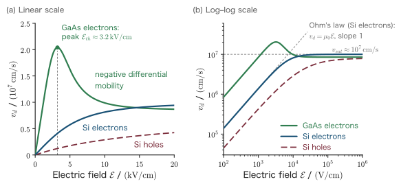
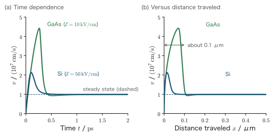
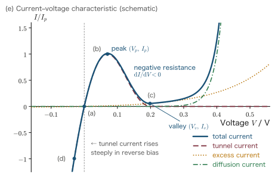
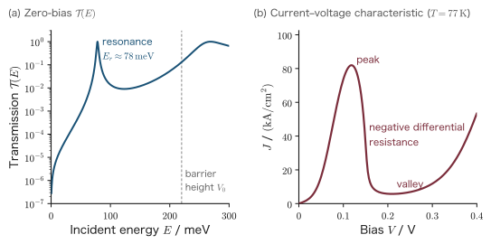
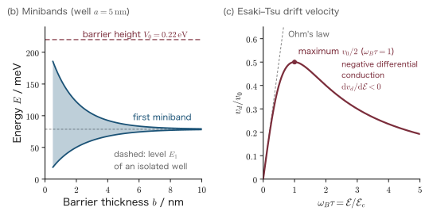
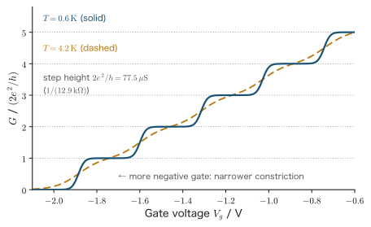

Chapter 23High-Field Effects in Semiconductors
In Chapter 17 we used the relation $v_d=\mu\mathcal{E}$, in which the average speed of the electrons in a semiconductor (the drift velocity) $v_d$ is proportional to the magnitude of the electric field $\mathcal{E}$ (read “script E”; the letter is chosen to distinguish it from the energy $E$). The proportionality coefficient $\mu$ is the mobility, and this proportionality is nothing other than Ohm's law. However, this relation holds only when the electric field is weak. The transistors (MOSFETs; their operation is briefly explained in the Supplement in Section 23.1.1) in today's smartphones operate with a voltage close to $1\,\mathrm{V}$ applied across a channel (the path of the electrons) only about $20\,\mathrm{nm}$ long. The average electric field is $1\,\mathrm{V}/(20\times10^{-9}\,\mathrm{m})=5\times10^{7}\,\mathrm{V/m}=5\times10^{5}\,\mathrm{V/cm}$, which is several hundred times the field of about $10^{3}\,\mathrm{V/cm}$ at which Ohm's law begins to fail in Si. Almost all modern semiconductor devices operate outside the domain of Ohm's law. This chapter is about the physics of that outside world.
As the electric field is increased, the following four stages appear one after another in a semiconductor. First, the electrons can no longer pass on to the lattice all the energy they receive from the field, and the electron ensemble becomes “hotter” than the lattice (hot electrons). The mobility decreases, the velocity levels off at about $10^{7}\,\mathrm{cm/s}$, and in GaAs it even becomes lower (the Gunn effect). Second, sufficiently accelerated electrons knock out electrons of the valence band and create electron–hole pairs one after another (electron avalanche). Third, when the field becomes still stronger, the electrons slip through the “wall” of the band gap instead of climbing over it (tunneling: the Zener effect, and the Esaki effect, named after Leo Esaki). Fourth, when the device becomes shorter than the mean free path of the electrons, the electrons fly through the device without being scattered (ballistic transport). In this case the resistance is no longer a property of the material; for each scattering-free path (mode) it takes the value $h/2e^2=12.9\,\mathrm{k\Omega}$, which is determined by natural constants alone.
The tools for understanding these four stages are already in hand. The scattering rates calculated in Chapter 22 are used as they are in the energy balance of hot electrons. The semiclassical equation of motion $\hbar\dot\kk=\FF$ of Chapter 17 is the starting point for the discussions of the saturation velocity, Bloch oscillations, and the threshold of impact ionization. Tunneling is treated with the WKB approximation of quantum mechanics, and ballistic transport with the Landauer formula derived in Chapter 21. The formulas for the depletion layer of a p-n junction will be derived in Chapter 24, so in this chapter we use only their results in advance (the necessary facts are reviewed in Section 23.3.1).
After reading this chapter, you will be able to estimate the saturation velocity from the optical-phonon energy and to determine the frequency of a GaAs Gunn oscillator from the length of the device. You will be able to calculate the breakdown voltage of a p-n junction from the doping concentration and to judge whether it is avalanche breakdown or Zener breakdown. You will be able to explain why the Esaki diode and the resonant-tunneling diode show negative resistance, and to calculate the miniband width of a superlattice and the frequency of the Bloch oscillation (in the terahertz range). You will also understand why the conductance of a quantum point contact changes in steps in units of $2e^2/h$ (for the list of topics, see “What you will learn in this chapter” below). The devices that appear are the Gunn diode, the IMPATT diode, the avalanche photodiode (APD), the constant-voltage (Zener) diode, the Esaki diode, flash memory, the resonant-tunneling diode, the scanning tunneling microscope (STM), the quantum cascade laser, and the ballistic MOSFET.
- The concept of the electron temperature $T_e$, and the two equations of momentum balance and energy balance
- Shockley's criterion (Ohm's law fails when $\mu\mathcal{E}$ approaches the speed of sound), and the derivation of the saturation velocity $v_{sat}\approx\sqrt{8\hbar\omega_{op}/(3\pi m^*)}$
- The Gunn effect: negative differential mobility due to the $\Gamma$–$L$ intervalley transfer in GaAs, domain transit, and the oscillation frequency $f\approx v/L$
- Velocity overshoot: the transient phenomenon produced by $\tau_m\ll\tau_E$, the numerical solution of the two-time-constant model, and the procedure of the Monte Carlo method
- The impact-ionization threshold $E_{th}=\tfrac32E_g$, Shockley's lucky-electron model, avalanche multiplication $M=1/(1-\int\alpha\,\dd x)$, and the breakdown voltage
- WKB calculation of the transmission probability of a triangular barrier, how to distinguish Zener breakdown from avalanche breakdown, and the current–voltage characteristic of the Esaki diode
- Fowler–Nordheim tunneling, direct tunneling, resonant tunneling, the STM, phonon-assisted tunneling, and superconducting tunneling
- The miniband of a superlattice, the Bloch oscillation $f_B=e\mathcal{E}d/h$ and the Wannier–Stark ladder, and the negative differential conductivity of Esaki–Tsu
- The Landauer formula $G=(2e^2/h)\sum_n\mathcal{T}_n$, the quantized conductance of a quantum point contact, the Sharvin resistance, and the ballistic MOSFET
23.1 Hot Electrons
Notation: Symbols used in this chapter
- Electric field and energy. The electric field vector is written $\EE$ and its magnitude $\mathcal{E}$ (script E), to distinguish it from the energies $E$ ($E_c$, $E_v$, $E_g$, $E_F$, and so on). In semiconductors the electric field is often expressed in $\mathrm{V/cm}$. We have $1\,\mathrm{V/cm}=10^{2}\,\mathrm{V/m}$, $1\,\mathrm{kV/cm}=10^{5}\,\mathrm{V/m}$, and $1\,\mathrm{MV/cm}=10^{8}\,\mathrm{V/m}$, and in calculations the field must always be converted to SI units.
- Temperature and transmission probability. $T$ is the lattice temperature, $T_e$ is the electron temperature, and $T_B$ is the period of Bloch oscillation. The transmission probability of tunneling is written $\mathcal{T}$ (script T) to distinguish it from the temperature.
- Times $\tau$ (tau). They are distinguished by subscripts: the momentum relaxation time $\tau_m$, the energy relaxation time $\tau_E$, the time to emit one optical phonon $\tau_{op}$, the dielectric relaxation time $\tau_d$, and the reciprocal of the total scattering rate in the Monte Carlo method $\tau_{tot}$. The $\tau$ of the superlattice in Section 23.6 (without a subscript) is a scattering time defined on the spot.
- $\Gamma$ (gamma). It is used in three ways: the $\Gamma$ point at the center of the Brillouin zone and the $\Gamma$ valley of GaAs, the gamma function $\Gamma(n)$ (the derivation in Section 23.1), and the resonance width $\Gamma$ (Section 23.5.4). The total scattering rate in the Monte Carlo method is written $1/\tau_{tot}$, and the particle fluxes of avalanche multiplication are written $\Phi_n$, $\Phi_p$ (phi), so $\Gamma$ is not used for them.
- Length. The mean free path is $\ell$ (ell), and the Fermi wavelength is $\lambda_F$ (lambda). Depending on the place, $d$ denotes the distance required for impact ionization (Section 23.3.4), the spacing between the STM tip and the sample (Section 23.5.5), or the period of the superlattice (Section 23.6). $W$ is the width of the depletion layer (Section 23.3), the width of the constriction (Section 23.7.3), or the width of the MOSFET channel (Section 23.7.5); only the $W$ in the derivation of Section 23.1.4 is a scattering rate.
- Velocity. $v_d$ is the drift velocity, $v_s$ is the speed of sound, $v_{sat}$ is the saturation velocity in a high electric field, and $v_{inj}$ is the injection velocity.
- Mobility $\mu$ (mu). $\mu_0$ is the mobility in a low electric field, $\mu_d$ is the differential mobility, and $\mu_\Gamma$, $\mu_L$ are the mobilities of the $\Gamma$ valley and the $L$ valley of GaAs. The chemical potential is not written $\mu$ but is expressed by the Fermi level $E_F$. For the room-temperature mobility of Si, this chapter uses $1400$ for electrons and $450\,\mathrm{cm^2/(V\,s)}$ for holes ($1350$ and $480$ in Table 17.10 of Chapter 17; the values vary among references).
- Mass. $m$ is the free-electron mass, $m^*$ is the effective mass ($m_e^*$, $m_h^*$ when electrons and holes are distinguished; only in Section 23.3.2 the star is dropped and they are written $m_e$, $m_h$), $m_r$ is the reduced mass, $m_{SL}$ is the effective mass of the superlattice miniband, and $m_{ox}$ is the effective mass in the oxide film.
- Others. $\hbar\omega_{op}$ is the energy of an optical phonon ($\hbar\Omega$ in Chapter 17). $\alpha_n$, $\alpha_p$ (alpha) are the impact-ionization coefficients, distinct from the optical absorption coefficient $\alpha$ (the absorption coefficient is not used in this chapter). $\kappa$ (kappa) is the damping constant of tunneling, distinct from the extinction coefficient $\kappa$ of Chapter 33. $\Delta$ (delta) is the superconducting gap (Section 23.5.7) and the miniband width (Section 23.6); when a letter follows it, as in $\Delta E$, it means a “difference.” $\rho$ is the density of states in Section 23.4.5, $\rho_m$ in Section 23.1.4 is the mass density, $\delta\rho$ in Section 23.1.9 is the charge density, and in Section 23.7.4 it is the resistivity. $\phi$ is the fraction of electrons in the $\Gamma$ valley in Section 23.1.8; in Section 23.5 it is the barrier height $\phi_B$, the work function, and the one-way phase in the derivation for the double barrier (Section 23.5.4). $M$ is the multiplication factor in Section 23.3.5 ($M_i$ in Section 23.1.8 is the number of valleys, and $M$ in Section 23.3.2 is the total mass).
23.1.1 When does Ohm's law break down?
Let us begin with the experimental facts. In the early 1950s, Ryder of Bell Laboratories applied short voltage pulses to a thin rod of Ge and measured the drift velocity of electrons as a function of the electric field (pulses are used so that the sample is not heated by Joule heat). Up to an electric field of about $10^{2}\,\mathrm{V/cm}$, the velocity was proportional to the field. Beyond about $10^{3}\,\mathrm{V/cm}$, however, the proportionality was lost, and in still stronger fields the velocity approached a constant value. The same thing happens in Si (Figure 23.2 later). The velocity of electrons in Si levels off at about $10^{7}\,\mathrm{cm/s}=10^{5}\,\mathrm{m/s}$, and no matter how strong the field is made, the electrons go no faster. This is called velocity saturation.
Why does this happen? When we derived the mobility formula $\mu=e\tau/m^*$ in Chapter 17, we tacitly assumed that “the scattering time $\tau$ does not depend on the electric field.” As we saw in Chapter 22, the scattering rate $1/\tau$ depends on the energy of the electron. As long as the electric field is weak, the energy distribution of the electrons deviates hardly at all from the thermal-equilibrium distribution at the lattice temperature $T$, so $\tau$ does not change either. When the electric field becomes strong, the electrons can no longer pass all the energy they receive from the field on to the lattice, and the electron ensemble itself becomes “hot.” Then $\tau$ changes, and so does the mobility. Ohm's law breaks down because the electric field changes the “temperature” of the electrons.
When the electric field is made still stronger, phenomena far more dramatic than a breakdown of Ohm's law appear one after another. Figure 23.1 is a map of them, and Table 23.1 gives a rough estimate of the electric fields at which the phenomena appear. This chapter proceeds in the order (a) to (d) of the figure.
| Phenomenon | Rough electric field / $(\mathrm{V/cm})$ | Section of this chapter | Related devices |
|---|---|---|---|
| Breakdown of Ohm's law begins | $10^{3}$ | 23.1 | — |
| Velocity saturation ($v_d\approx10^{7}\,\mathrm{cm/s}$) | $10^{4}$–$10^{5}$ | 23.1 | Near the drain of a MOSFET |
| Negative differential mobility of GaAs | $3\times10^{3}$ or higher | 23.1 | Gunn diode |
| Impact ionization (avalanche) | $2\times10^{5}$–$6\times10^{5}$ | 23.3 | APD, IMPATT, voltage-regulator diode |
| Interband tunneling (Zener) | About $10^{6}$ | 23.4 | Zener diode, Esaki diode |
| Fowler–Nordheim tunneling through an oxide film | About $10^{7}$ (in SiO₂) | 23.5 | Flash memory |
Supplement: Overview of the MOSFET
MOSFETs (metal–oxide–semiconductor field-effect transistors) appear many times in this chapter. The detailed theory is treated in Chapter 24, Section 24.6, so here we only sketch an overview.
- Source and drain. Near the surface of p-type Si, two n-type regions are made, separated from each other. The side from which the electrons start is called the source, and the side where they arrive is called the drain. The voltage applied between the source and the drain to drive the current is called the drain voltage $V_D$.
- Gate and oxide film. The surface between the source and the drain is covered with a thin insulating film (an oxide film such as SiO₂) of thickness $t_{ox}$ (a few nm), and an electrode is placed on top of it. This is the gate. The gate and the Si form a capacitor with the oxide film sandwiched between them, and its capacitance per unit area is $C_{ox}=\epsilon_{ox}\epsilon_0/t_{ox}$ ($\epsilon_{ox}$ is the relative permittivity of the oxide film; it is 3.9 for SiO₂).
- Inversion layer and channel. When a positive voltage $V_G$ is applied to the gate, electrons are attracted to the surface of the p-type Si just below the oxide film. When $V_G$ exceeds a certain value $V_T$ (the threshold voltage), a thin layer (a few nm thick) forms at the surface in which, although the material is p-type, electrons outnumber holes. This is called the inversion layer, and it becomes the path for the electrons connecting the source and the drain, that is, the channel. The electron charge per unit area of the channel is $Q\approx C_{ox}(V_G-V_T)$, in the same way as the capacitor formula $Q=CV$.
- Switching and amplification. For $V_G\lt V_T$ there is no channel and no current flows (off); for $V_G\gt V_T$ current flows (on). Since the gate voltage can turn the current on and off and can also change its magnitude, the device can serve both as a switch and as an amplifier. The distance from the source to the drain is called the channel length $L$.
When the channel length is shortened to $20\,\mathrm{nm}$, the electric field between the source and the drain exceeds $10^{5}\,\mathrm{V/cm}$, as estimated at the beginning of the chapter. The hot electrons, velocity overshoot, and ballistic transport treated in this chapter are all phenomena that occur inside such a small channel.
23.1.2 Hot electrons and electron temperature — the displaced Maxwell distribution
Let us picture an assembly of electrons in an electric field. The electrons also collide with one another (carrier–carrier scattering; Chapter 22, Section 22.3). If the electron density is reasonably large, these electron–electron collisions quickly share energy within the assembly, and the electrons by themselves reach a state close to “thermal equilibrium.” Its temperature, however, is not the lattice temperature $T$. Because the electrons keep receiving energy from the electric field, they are at a temperature $T_e$ higher than that of the lattice. Moreover, the assembly of electrons as a whole drifts in the direction opposite to the electric field. We therefore consider the following distribution.
Definition: Displaced Maxwell distribution and electron temperature
When the electron distribution function (the probability of occupying the state with wave vector $\kk$) is given by
it is called the displaced Maxwell distribution, $T_e$ is called the electron temperature, and $\vv_d=\hbar\kk_d/m^*$ is called the drift velocity. Electrons whose $T_e$ is higher than the lattice temperature $T$ are called hot electrons.
This distribution is the thermal-equilibrium Maxwell distribution ($T_e=T$, $\kk_d=0$) with its center shifted by $\kk_d$ and its width broadened to $T_e$.
We now calculate the mean energy per electron for this distribution. We will use it later when we consider the energy balance.
Derivation: Mean energy of the displaced Maxwell distribution
In a parabolic band the electron energy is $E=\hbar^2k^2/2m^*$. Write $\kk=\kk_d+\kk'$, where $\kk'$ is the deviation from the center.
$$ k^2=(\kk_d+\kk')\cdot(\kk_d+\kk')=k_d^2+2\,\kk_d\cdot\kk'+k'^2 $$Eq. \eqref{eq:23-drift-maxwell} does not change its form, as a function of $\kk'$, under $\kk'\to-\kk'$ (it contains only $k'^2$), so the average of each component of $\kk'$ is zero. Therefore the average of the middle term vanishes:
$$ \langle k^2\rangle = k_d^2+\langle k'^2\rangle $$$\langle k'^2\rangle$ can be found by using a Gaussian integral (Appendix A, Section A.4) for one component, the $x$ direction. Since $\exp(-\hbar^2k_x'^2/2m^*k_BT_e)$ is a Gaussian distribution with variance $\sigma^2=m^*k_BT_e/\hbar^2$, we have $\langle k_x'^2\rangle=m^*k_BT_e/\hbar^2$. There are three components, so
$$ \langle k'^2\rangle = \frac{3m^*k_BT_e}{\hbar^2} $$Substituting these into $\langle E\rangle=\hbar^2\langle k^2\rangle/2m^*$ gives
∎ The mean energy is the sum of the “kinetic energy of the flow” and the “energy of the thermal motion.” The flow part is only $\frac12m^*v_d^2=7\,\mathrm{meV}$ even for $v_d=10^{5}\,\mathrm{m/s}$ and $m^*=0.26m$, which is much smaller than the thermal-motion part ($130\,\mathrm{meV}$ for $T_e=1000\,\mathrm{K}$). In what follows we omit the flow part in most cases.
23.1.3 Momentum balance and energy balance
The assembly of electrons receives momentum and energy from the electric field and returns them to the lattice through collisions. Writing the balance between the amounts received and returned as equations gives the fundamental equations of hot electrons. We introduce two times that characterize how fast the electrons give back momentum and energy.
Definition: Momentum relaxation time $\tau_m$ and energy relaxation time $\tau_E$
Momentum relaxation time $\tau_m$: the time in which, when the electric field is switched off, the mean momentum of the assembly of electrons (that is, the drift velocity) decreases to $1/\ee$ of its value. The $\tau$ of Chapter 17 is this one.
Energy relaxation time $\tau_E$: the time in which, when the electric field is switched off, the excess $\langle E\rangle-\tfrac32k_BT$ of the mean electron energy over its thermal-equilibrium value decreases to $1/\ee$ of its value.
Since many kinds of the symbol $\tau$ are used in this chapter, we distinguish them by subscripts (besides $\tau_m$ and $\tau_E$, there are $\tau_{op}$ for optical phonon emission, $\tau_d$ for dielectric relaxation, and so on; see “Notation” at the beginning).
Derivation: The two balance equations
The force acting on one electron is $\FF=-e\EE$. Since the electrons drift in the direction opposite to the electric field, in what follows we write the magnitudes of the velocity and the electric field as $v_d$ and $\mathcal{E}$ (positive quantities).
(1) Momentum balance. The mean momentum $m^*v_d$ per electron increases by $e\mathcal{E}$ per unit time because of the electric field (Newton's law: force is the increase of momentum per unit time) and decreases by $m^*v_d/\tau_m$ per unit time because of collisions (the definition of $\tau_m$). The difference is the rate of change of the momentum with time:
(2) Energy balance. The work done by the electric field on one electron per unit time is “force × velocity.” The force $-e\EE$ and the velocity $\vv_d$ (in the direction of $-\EE$) are in the same direction, so the power is positive and equals $e\mathcal{E}v_d$. On the other hand, the excess energy flows out to the lattice through collisions at the rate $\left(\langle E\rangle-\tfrac32k_BT\right)/\tau_E$ per unit time (the definition of $\tau_E$). Therefore
(3) Steady state. When the rates of change with time are zero, Eq. \eqref{eq:23-mom-balance} gives
$$ v_d=\frac{e\tau_m}{m^*}\,\mathcal{E}\equiv\mu(T_e)\,\mathcal{E} $$The form is the same as $v_d=\mu\mathcal{E}$ of Chapter 17, but since $\tau_m$ depends on the electron temperature $T_e$, the mobility also depends on the electric field through $T_e$. Setting the left-hand side of Eq. \eqref{eq:23-en-balance} to zero and, using Eq. \eqref{eq:23-mean-energy}, omitting the kinetic energy of the flow so that $\langle E\rangle\approx\frac32k_BT_e$, we obtain
$$ e\mathcal{E}v_d=\frac{\frac32k_BT_e-\frac32k_BT}{\tau_E}=\frac{3k_B(T_e-T)}{2\tau_E} $$Multiplying both sides by $2\tau_E/(3k_B)$ gives
∎ The rise of the electron temperature is proportional to the square of the electric field and is larger the longer the energy relaxation time $\tau_E$ is. What decides whether the electrons become hot is not the momentum but how hard it is for energy to escape.
Physical Meaning: Why can electrons become hot?
Rewriting $\mu\mathcal{E}^2$ in Eq. \eqref{eq:23-Te} with $\mu=e\tau_m/m^*$ and $v_d=\mu\mathcal{E}$ gives
$$ \frac32k_B(T_e-T)=e\mathcal{E}v_d\tau_E=\frac{m^*v_d}{\tau_m}\,v_d\,\tau_E=m^*v_d^2\,\frac{\tau_E}{\tau_m} $$Here $m^*v_d^2$ is twice the kinetic energy of the flow, and it is small. The reason $T_e$ can nevertheless rise greatly is that the ratio $\tau_E/\tau_m$ is larger than 1 (nearly 100 for acoustic phonons alone, and several even in strong electric fields where optical phonons are effective). At every collision the electron changes direction (loses momentum), but it loses only a little energy. It is the same as when a table-tennis ball hits a heavy bowling ball and bounces back: the direction changes, but the speed hardly changes. In this way the electrons accumulate the energy they receive little by little from the electric field and become hot.
Example 23.1: How hot do the electrons in Si become?
An electric field of $\mathcal{E}=3\times10^{4}\,\mathrm{V/cm}$ is applied to Si at room temperature ($T=300\,\mathrm{K}$). Suppose the electron drift velocity is the saturation velocity $v_d\approx1.0\times10^{7}\,\mathrm{cm/s}$ and the energy relaxation time is $\tau_E=0.3\,\mathrm{ps}$. Find the electron temperature $T_e$ and the mean thermal energy $\frac32k_BT_e$ per electron.
Solution. First convert to SI units. Since $1\,\mathrm{V/cm}=10^{2}\,\mathrm{V/m}$ and $1\,\mathrm{cm/s}=10^{-2}\,\mathrm{m/s}$,
$$ \mathcal{E}=3\times10^{6}\,\mathrm{V/m},\qquad v_d=1.0\times10^{5}\,\mathrm{m/s},\qquad \tau_E=3\times10^{-13}\,\mathrm{s} $$The numerator of Eq. \eqref{eq:23-Te} is
$$ e\mathcal{E}v_d\tau_E=(1.602\times10^{-19})(3\times10^{6})(1.0\times10^{5})(3\times10^{-13})=1.442\times10^{-20}\,\mathrm{J} $$Dividing this by $k_B=1.381\times10^{-23}\,\mathrm{J/K}$ and multiplying by $2/3$ gives
$$ T_e-T=\frac23\times\frac{1.442\times10^{-20}}{1.381\times10^{-23}}=\frac23\times1044\,\mathrm{K}=696\,\mathrm{K} $$Hence $T_e\approx300+700=1000\,\mathrm{K}$. The mean thermal energy is
$$ \frac32k_BT_e=\frac32\times(8.617\times10^{-5}\,\mathrm{eV/K})\times1000\,\mathrm{K}=0.13\,\mathrm{eV} $$∎ Although the lattice remains at room temperature, the electrons are at a high temperature of $1000\,\mathrm{K}$. The mean energy $0.13\,\mathrm{eV}$ is twice the energy of an optical phonon in Si (about $63\,\mathrm{meV}$), so many electrons can emit optical phonons. This leads to the discussion from Section 23.1.5 onward. In addition, a very small fraction of the electrons made hot in the Si channel have enough energy to go over the barrier of the oxide film (about $3.2\,\mathrm{eV}$). This is the origin of writing to flash memory (Section 23.5.2) and of transistor degradation.
23.1.4 Shockley criterion — when the drift velocity approaches the speed of sound
How is the electric field at which Ohm's law begins to break down determined? In 1951 Shockley solved this problem for the case in which only acoustic phonon scattering is present and obtained the simple conclusion that “Ohm's law breaks down when the drift velocity $\mu\mathcal{E}$ approaches the speed of sound.” Here we follow that calculation to the end. The key is to calculate the energy that an electron gives to the lattice in a single collision.
As preparation, we summarize the properties of acoustic phonon scattering obtained in Chapter 22, Section 22.1. The square of the matrix element of the deformation-potential interaction with a longitudinal acoustic phonon (wave vector $\qq$, angular frequency $\omega_q=v_sq$, where $v_s$ is the speed of sound) is
$$ \abs{M_q}^2=\frac{\Xi^2\hbar q}{2\rho_mVv_s}\left(n_q+\frac12\mp\frac12\right)\qquad(\text{upper sign: absorption, lower sign: emission}) $$($\Xi$ is the deformation potential, $\rho_m$ is the mass density of the crystal, $V$ is the volume of the crystal, and $n_q$ is the number of phonons). Since the phonon energy $\hbar v_sq$ is much smaller than $k_BT$, we expand the Bose distribution in $x=\hbar v_sq/k_BT\ll1$ and use $n_q=1/(\ee^{x}-1)\approx1/x-\frac12$. Then
$$ q\,n_q\approx\frac{k_BT}{\hbar v_s}\left(1-\frac{\hbar v_sq}{2k_BT}\right),\qquad q\,(n_q+1)\approx\frac{k_BT}{\hbar v_s}\left(1+\frac{\hbar v_sq}{2k_BT}\right) $$so that emission is slightly more likely than absorption. This “slight difference” makes energy flow from the electrons to the lattice.
Supplement: How to read this section — conclusions first
The two derivations in this section are the longest calculations in this chapter, so we state the conclusions first. (1) An electron of energy $E$ loses, on average, an energy of $2m^*v_s^2(E/k_BT-2)$ in one collision with an acoustic phonon ($v_s$ is the speed of sound). In Si this is a very small amount, about $0.1\,\mathrm{meV}$. (2) As a result, the electrons do not cool easily, and the electron temperature $T_e$ is given by Eq. \eqref{eq:23-shockley}, which is determined only by “the ratio of the drift velocity $\mu_0\mathcal{E}$ calculated from Ohm's law to the speed of sound $v_s$.” When reading this for the first time, you may skip ahead by following only the results marked ∎ in the two derivations and the subsequent “Physical Meaning: Two limits.”
Derivation 1: The mean energy lost in one collision
Consider an electron with energy $E=\hbar^2k^2/2m^*$ and speed $v=\hbar k/m^*$.
Step 1: Turn the scattering rate into an integral over $q$. By Fermi's golden rule (Quantum Mechanics, Chapter 51, Section 51.2), summing the rate of absorbing a phonon $\qq$ and making the transition $\kk\to\kk+\qq$, over all $\qq$ gives
$$ W=\frac{2\pi}{\hbar}\sum_{\qq}\abs{M_q}^2\,\delta\!\left(E(\kk+\qq)-E-\hbar v_sq\right) =\frac{2\pi}{\hbar}\,\frac{V}{(2\pi)^3}\int_0^\infty 2\pi q^2\,\dd q\int_{-1}^{1}\dd(\cos\theta)\,\abs{M_q}^2\,\delta(\cdots) $$Here $\theta$ is the angle between $\kk$ and $\qq$. Using $E(\kk+\qq)-E=\frac{\hbar^2}{2m^*}\left(2kq\cos\theta+q^2\right)$, the argument of the delta function is a linear function of $\cos\theta$, so integrating over $\cos\theta$ produces the reciprocal of the coefficient, $\dfrac{1}{\hbar^2kq/m^*}=\dfrac{m^*}{\hbar^2kq}$ (Section A.9 of Appendix A; only those $q$ for which the root $\cos\theta$ lies between $-1$ and $1$ contribute). Therefore
$$ W=\frac{2\pi}{\hbar}\,\frac{V}{(2\pi)^3}\,2\pi\int q^2\,\frac{m^*}{\hbar^2kq}\,\abs{M_q}^2\,\dd q =\frac{Vm^*}{2\pi\hbar^3k}\int q\,\abs{M_q}^2\,\dd q $$Emission has the same form. Inserting the preliminary expression and collecting the common constants as $A\equiv\dfrac{Vm^*}{2\pi\hbar^3k}\cdot\dfrac{\Xi^2\hbar}{2\rho_mVv_s}\cdot\dfrac{k_BT}{\hbar v_s}$, the rate of collisions with phonons between $q$ and $q+\dd q$ is
$$ \text{absorption: }A\,q\left(1-\frac{\hbar v_sq}{2k_BT}\right)\dd q,\qquad \text{emission: }A\,q\left(1+\frac{\hbar v_sq}{2k_BT}\right)\dd q $$Step 2: The upper limit of $q$. The largest $q$ occurs when the electron is bounced straight back ($\cos\theta=-1$); if the magnitude of the final wavenumber is $k'$, then $q=k+k'$. For absorption, substituting $k'=q-k$ into energy conservation $\frac{\hbar^2k'^2}{2m^*}=\frac{\hbar^2k^2}{2m^*}+\hbar v_sq$ gives
$$ \frac{\hbar^2}{2m^*}\left(q^2-2qk\right)=\hbar v_sq \;\Longrightarrow\; q=2k+\frac{2m^*v_s}{\hbar}=2k\left(1+\frac{v_s}{v}\right) $$(we used $m^*v_s/\hbar=kv_s/v$). For emission the sign of the right-hand side is reversed, and $q_{\max}=2k(1-v_s/v)$. In both cases the lower limit is $q=0$. The quantity $\zeta\equiv v_s/v$ (zeta) is a small number, of order $10^{-2}$.
Step 3: The total number of collisions. Neglecting corrections of first order in $\zeta$ and in $\hbar v_sq/k_BT$, both absorption and emission give $\int_0^{2k}Aq\,\dd q=2Ak^2$, so the total number of collisions per unit time is $1/\tau=4Ak^2$.
Step 4: The net exchange of energy. In one absorption the electron gains $\hbar v_sq$, and in one emission it loses the same amount. The net energy gained per unit time is
$$ P=\int_0^{2k(1+\zeta)}A\,q\left(1-\frac{\hbar v_sq}{2k_BT}\right)\hbar v_sq\,\dd q-\int_0^{2k(1-\zeta)}A\,q\left(1+\frac{\hbar v_sq}{2k_BT}\right)\hbar v_sq\,\dd q $$Separate the $q^2$ term and the $q^3$ term. The $q^2$ term is
$$ A\hbar v_s\left[\frac{(2k)^3(1+\zeta)^3}{3}-\frac{(2k)^3(1-\zeta)^3}{3}\right]=A\hbar v_s\,\frac{8k^3}{3}\left(6\zeta+2\zeta^3\right)\approx16A\hbar v_sk^3\zeta $$The $q^3$ term already carries the small coefficient $\hbar v_s/2k_BT$, so $\zeta$ in the upper limits may be dropped:
$$ -A\,\frac{(\hbar v_s)^2}{2k_BT}\left[\frac{(2k)^4}{4}+\frac{(2k)^4}{4}\right]=-\frac{4A(\hbar v_s)^2k^4}{k_BT} $$Rewriting with $\zeta=v_s/v$, $\hbar k=m^*v$, and $\hbar^2k^2=2m^*E$, the first term is $16A\hbar v_sk^3(v_s/v)=16Am^*v_s^2k^2$ and the second term is $-4Av_s^2k^2(\hbar k)^2/k_BT=-8Am^*v_s^2k^2E/k_BT$. Together,
$$ P=8Am^*v_s^2k^2\left(2-\frac{E}{k_BT}\right) $$Step 5: Per collision. Dividing $P$ by the collision frequency $4Ak^2$ gives
∎ If the electron's energy is larger than $2k_BT$, then in every collision it loses on average the energy $2m^*v_s^2(E/k_BT-2)$.
Supplement: It does vanish properly in thermal equilibrium
The sign of Eq. \eqref{eq:23-deltaE} changes at $E=2k_BT$. In thermal equilibrium ($T_e=T$) there must be no net flow of energy between the electrons as a whole and the lattice. The scattering rate is $1/\tau\propto E^{1/2}$ (Chapter 22) and the Maxwell distribution has the weight $E^{1/2}\ee^{-E/k_BT}$, so what we must check, with $x=E/k_BT$, is
$$ \int_0^\infty x^{1/2}\,\ee^{-x}\,x^{1/2}\,(x-2)\,\dd x=\Gamma(3)-2\Gamma(2)=2-2=0 $$(here we used the gamma function $\Gamma(n+1)=n!$ of Section A.5 of Appendix A). It does vanish correctly. The “2” in $E-2k_BT$ is the number that guarantees this balance.
Derivation 2: The electron-temperature equation (Shockley, 1951)
Step 1: The average loss. Suppose the electrons follow a Maxwell distribution at temperature $T_e$. Write the scattering rate as $1/\tau(E)=(1/\tau_0)(E/k_BT)^{1/2}$ ($\tau_0$ is the value at $E=k_BT$). The energy that one electron passes to the lattice per unit time is Eq. \eqref{eq:23-deltaE} multiplied by $1/\tau(E)$ and averaged:
$$ P_{\text{loss}}=\frac{2m^*v_s^2}{k_BT}\left\langle\frac{E-2k_BT}{\tau(E)}\right\rangle_{T_e} =\frac{2m^*v_s^2}{k_BT\,\tau_0\,(k_BT)^{1/2}}\left(\langle E^{3/2}\rangle-2k_BT\langle E^{1/2}\rangle\right) $$The averages of the energy over a Maxwell distribution at temperature $T_e$ are gamma-function integrals with the weight $E^{1/2}\ee^{-E/k_BT_e}$; using $\Gamma(3/2)=\sqrt\pi/2$ we obtain
$$ \langle E^{3/2}\rangle=(k_BT_e)^{3/2}\frac{\Gamma(3)}{\Gamma(3/2)}=\frac{4}{\sqrt\pi}(k_BT_e)^{3/2},\qquad \langle E^{1/2}\rangle=(k_BT_e)^{1/2}\frac{\Gamma(2)}{\Gamma(3/2)}=\frac{2}{\sqrt\pi}(k_BT_e)^{1/2} $$Therefore
$$ \langle E^{3/2}\rangle-2k_BT\langle E^{1/2}\rangle=\frac{4}{\sqrt\pi}(k_BT_e)^{1/2}\left(k_BT_e-k_BT\right) $$ $$ P_{\text{loss}}=\frac{8}{\sqrt\pi}\,\frac{m^*v_s^2}{\tau_0}\left(\frac{T_e}{T}\right)^{1/2}\frac{T_e-T}{T} $$Step 2: The mobility. Apply the average $\langle\langle\tau\rangle\rangle=\tau_0\Gamma(r+5/2)/\Gamma(5/2)$ of Chapter 21, Section 21.4 to $\tau\propto E^{-1/2}$ ($r=-1/2$). Because the electron temperature is $T_e$, however, the value at $E=k_BT_e$, namely $\tau_0(T/T_e)^{1/2}$, plays the role of $\tau_0$:
$$ \langle\langle\tau\rangle\rangle=\tau_0\left(\frac{T}{T_e}\right)^{1/2}\frac{\Gamma(2)}{\Gamma(5/2)}=\frac{4\tau_0}{3\sqrt\pi}\left(\frac{T}{T_e}\right)^{1/2} $$($\Gamma(5/2)=\frac32\cdot\frac12\sqrt\pi=\frac34\sqrt\pi$). Hence the mobility is $\mu(T_e)=e\langle\langle\tau\rangle\rangle/m^*=\mu_0(T/T_e)^{1/2}$, where $\mu_0=4e\tau_0/(3\sqrt\pi m^*)$ is the mobility in the absence of an electric field. Solving in reverse gives $m^*/\tau_0=4e/(3\sqrt\pi\mu_0)$.
Step 3: The balance. Set the power received from the electric field, $e\mathcal{E}v_d=e\mu(T_e)\mathcal{E}^2$, equal to $P_{\text{loss}}$:
$$ e\mu_0\left(\frac{T}{T_e}\right)^{1/2}\mathcal{E}^2=\frac{8}{\sqrt\pi}\cdot\frac{4e}{3\sqrt\pi\,\mu_0}\,v_s^2\left(\frac{T_e}{T}\right)^{1/2}\left(\frac{T_e}{T}-1\right) $$Dividing both sides by $e(T/T_e)^{1/2}v_s^2/\mu_0$ and letting $\theta\equiv T_e/T$, we obtain
$$ \left(\frac{\mu_0\mathcal{E}}{v_s}\right)^2=\frac{32}{3\pi}\,\theta\,(\theta-1) \quad\Longleftrightarrow\quad \theta^2-\theta-\frac{3\pi}{32}\left(\frac{\mu_0\mathcal{E}}{v_s}\right)^2=0 $$Taking the root with $\theta\gt0$,
∎ The dimensionless number that determines how hot the electrons are is $\mu_0\mathcal{E}/v_s$, that is, the ratio of the drift velocity calculated from Ohm's law to the speed of sound.
Physical Meaning: Two limits
For a weak electric field ($\mu_0\mathcal{E}\ll v_s$), expanding the square root as $\sqrt{1+y}\approx1+y/2$ gives $T_e/T\approx1+\frac{3\pi}{32}(\mu_0\mathcal{E}/v_s)^2$. The mobility is $\mu\approx\mu_0\left[1-\frac{3\pi}{64}(\mu_0\mathcal{E}/v_s)^2\right]$, and the deviation from Ohm's law is a small correction proportional to $\mathcal{E}^2$. The deviation becomes visible when $\mu_0\mathcal{E}\sim v_s$. This is the Shockley criterion.
For a strong electric field ($\mu_0\mathcal{E}\gg v_s$), $T_e/T\approx\sqrt{3\pi/32}\,\mu_0\mathcal{E}/v_s$, so the electron temperature is proportional to the electric field, and
$$ v_d=\frac{\mu_0\mathcal{E}}{\left(\frac{3\pi}{32}\right)^{1/4}\left(\frac{\mu_0\mathcal{E}}{v_s}\right)^{1/2}}=\left(\frac{32}{3\pi}\right)^{1/4}\sqrt{\mu_0v_s\mathcal{E}}\approx1.36\sqrt{\mu_0v_s\mathcal{E}}\ \propto\ \mathcal{E}^{1/2} $$The velocity grows only as the square root of the electric field. The region with $v_d\propto\mathcal{E}^{1/2}$ seen in Ryder's experiment on Ge is this one. Why does the speed of sound appear? The energy lost in one collision is of order $m^*v_s^2$, as in Eq. \eqref{eq:23-deltaE}, while the energy that the electric field supplies during one free flight is of order $e\mathcal{E}v_d\tau_m=m^*v_d^2$ (from momentum balance, $e\mathcal{E}\tau_m=m^*v_d$). When the two become of the same order of magnitude, that is, when $v_d\sim v_s$, the electron can no longer give back the excess it receives in each collision.
Example 23.2: The electric field at which Ohm's law begins to fail in Si and Ge
In Shockley's model, which considers only acoustic phonon scattering, find the electric field at which $\mu_0\mathcal{E}=v_s$ for (1) Si ($\mu_0=1400\,\mathrm{cm^2/(V\,s)}$, $v_s=9.0\times10^{3}\,\mathrm{m/s}$) and (2) Ge ($\mu_0=3900\,\mathrm{cm^2/(V\,s)}$, $v_s=5.0\times10^{3}\,\mathrm{m/s}$). (3) What are $T_e/T$ and $\mu/\mu_0$ at that field?
Solution. (1) Since $\mu_0=1400\times10^{-4}=0.14\,\mathrm{m^2/(V\,s)}$,
$$ \mathcal{E}=\frac{v_s}{\mu_0}=\frac{9.0\times10^{3}\,\mathrm{m/s}}{0.14\,\mathrm{m^2/(V\,s)}}=6.4\times10^{4}\,\mathrm{V/m}=6.4\times10^{2}\,\mathrm{V/cm} $$(2) Since $\mu_0=0.39\,\mathrm{m^2/(V\,s)}$,
$$ \mathcal{E}=5.0\times10^{3}/0.39=1.3\times10^{4}\,\mathrm{V/m}=1.3\times10^{2}\,\mathrm{V/cm} $$(3) Substituting $\mu_0\mathcal{E}/v_s=1$ into Eq. \eqref{eq:23-shockley} gives
$$ \frac{T_e}{T}=\frac12\left[1+\sqrt{1+\frac{3\pi}{8}}\right]=\frac12\left[1+\sqrt{2.178}\right]=\frac12\,(1+1.476)=1.24, \qquad\frac{\mu}{\mu_0}=\frac{1}{\sqrt{1.24}}=0.90 $$∎ The mobility has dropped by 10%, and the electron temperature has risen from $300\,\mathrm{K}$ to $370\,\mathrm{K}$. Ge, with its larger mobility, becomes hot at a lower electric field. A large mobility means running fast in the same electric field, that is, receiving a lot of work from the field. In real Si, optical phonons and intervalley scattering also act, so the deviation begins to be noticeable at about $10^{3}\,\mathrm{V/cm}$. For the two-dimensional electron gas in low-temperature GaAs, where $\mu_0$ reaches $10^{6}\,\mathrm{cm^2/(V\,s)}$, the electrons become hot at electric fields below $1\,\mathrm{V/cm}$.
23.1.5 Energy relaxation time and optical phonon emission
If acoustic phonons were the only partners, an electron could lose only about $m^*v_s^2$ in one collision; for Si,
$$ 0.26\times(9.11\times10^{-31}\,\mathrm{kg})\times(9.0\times10^{3}\,\mathrm{m/s})^2=1.9\times10^{-23}\,\mathrm{J}=0.12\,\mathrm{meV} $$Then the electrons would become arbitrarily hot. In reality this does not happen. As we saw in Example 23.1, when the mean energy of the electrons exceeds $0.1\,\mathrm{eV}$, another outlet for energy opens up. This is optical phonon emission.
The optical phonon energy $\hbar\omega_{op}$ (what we wrote as $\hbar\Omega$ in Chapter 17) is almost constant, independent of wavenumber: about $63\,\mathrm{meV}$ in Si, about $37\,\mathrm{meV}$ in Ge, and $36\,\mathrm{meV}$ for the longitudinal optical (LO) phonon of GaAs. An electron whose energy is larger than $\hbar\omega_{op}$ can emit an optical phonon. A single emission hands the whole $\hbar\omega_{op}$ to the lattice, so the electron can discard at once the energy of several hundred collisions with acoustic phonons. Moreover, the emission is fast. For both nonpolar optical phonons (Si) and polar LO phonons (GaAs), the emission time $\tau_{op}$ of an electron with sufficient energy is about $0.1\,\mathrm{ps}$ (Chapter 22, Section 22.3).
Supplement: Estimating the energy relaxation time
Let us estimate $\tau_E$ for the situation of Example 23.1 (Si, $T_e\approx1000\,\mathrm{K}$). The excess energy is $\frac32k_B(T_e-T)=\frac32\times8.617\times10^{-5}\times700=0.090\,\mathrm{eV}$, about 1.4 times $\hbar\omega_{op}=0.063\,\mathrm{eV}$. That is, emitting 1.4 phonons on average returns the electrons to thermal equilibrium. Only electrons with $E\gt\hbar\omega_{op}$ can emit, and their fraction, counted with a Maxwell distribution at temperature $T_e$, is about 70%. If one emission takes $\tau_{op}\approx0.1\,\mathrm{ps}$, then
$$ \tau_E\approx\frac{1.4\times0.1\,\mathrm{ps}}{0.7}=0.2\,\mathrm{ps} $$The values of $0.1$–$0.4\,\mathrm{ps}$ that are used for the energy relaxation time of Si at high fields agree with this estimate. For GaAs, because of the intervalley transfer discussed in Section 23.1.8, the exchange of energy is complicated, and a longer value of about $1\,\mathrm{ps}$ is often used. In every case the value is equal to or several times longer than the momentum relaxation time ($0.1$–$0.3\,\mathrm{ps}$).
23.1.6 Origin of the saturation velocity — repeated optical phonon emission
When optical phonon emission takes the leading role, the drift velocity settles to a constant value $v_{sat}$ independent of the electric field. The intuitive picture is as follows. The electron is accelerated by the electric field, and as soon as its energy reaches $\hbar\omega_{op}$ it emits a phonon, almost stops, and its direction becomes random. Then it is accelerated again. A stronger field makes the acceleration faster, but the electron reaches $\hbar\omega_{op}$ and is stopped all the sooner, so the speed reachable in one “run-up” saturates at about $\sqrt{2\hbar\omega_{op}/m^*}$. The mean velocity also saturates at about this value. Below, we quantify this picture using the result of the Boltzmann equation.
Derivation: Saturation velocity $v_{sat}=\sqrt{8\hbar\omega_{op}/(3\pi m^*)}$
Assumptions. (i) At high electric fields, optical phonon emission is the dominant scattering process, removing both momentum and energy. (ii) The electrons follow a Maxwell distribution with temperature $T_e\gg T$. (iii) The mean free path $\ell$ for emission is independent of the electron energy. The justification of (iii): the emission rate is proportional to the density of final states $\propto\sqrt{E-\hbar\omega_{op}}$, and for $E\gg\hbar\omega_{op}$ this is nearly proportional to $\sqrt E\propto v$. Therefore $\ell$ in the scattering time $\tau=\ell/v$ is nearly constant (this justification applies to nonpolar optical phonons such as those in Si; for the polar LO phonons of GaAs (the Fröhlich interaction, Chapter 22, Section 22.3), the emission rate falls at high energies like $E^{-1/2}$, apart from a logarithmic factor, so $\ell$ is not constant). Optical phonon absorption is neglected (in Si at room temperature the phonon number is $n_{op}=1/(\ee^{63/25.85}-1)=0.096$, so absorption is at most one tenth of emission).
Step 1: Mobility. We have $\tau(E)=\ell/v=\ell\sqrt{m^*/(2E)}$. We compute the average $\langle\langle\tau\rangle\rangle=\langle E\tau\rangle/\langle E\rangle$ of Chapter 21, Section 21.4 with a Maxwell distribution of temperature $T_e$ (weight $E^{1/2}\ee^{-E/k_BT_e}$). Letting $x=E/k_BT_e$, we have $\tau=\ell\sqrt{m^*/(2k_BT_e)}\,x^{-1/2}$, so
$$ \begin{aligned} \langle E\tau\rangle&=k_BT_e\,\ell\sqrt{\frac{m^*}{2k_BT_e}}\,\frac{\int_0^\infty x\cdot x^{-1/2}\cdot x^{1/2}\ee^{-x}\dd x}{\int_0^\infty x^{1/2}\ee^{-x}\dd x} =k_BT_e\,\ell\sqrt{\frac{m^*}{2k_BT_e}}\,\frac{\Gamma(2)}{\Gamma(3/2)},\\ \langle E\rangle&=k_BT_e\frac{\Gamma(5/2)}{\Gamma(3/2)} \end{aligned} $$Taking the ratio, $\Gamma(3/2)$ cancels, and since $\Gamma(2)/\Gamma(5/2)=1/(\frac34\sqrt\pi)=4/(3\sqrt\pi)$,
$$ \langle\langle\tau\rangle\rangle=\frac{4\ell}{3\sqrt\pi}\sqrt{\frac{m^*}{2k_BT_e}},\qquad \mu(T_e)=\frac{e\langle\langle\tau\rangle\rangle}{m^*}=\frac{4e\ell}{3\sqrt{2\pi m^*k_BT_e}} $$Step 2: Energy loss. Each electron emits a phonon $\langle1/\tau\rangle=\langle v\rangle/\ell$ times per unit time on average, and loses $\hbar\omega_{op}$ each time. The mean speed of the Maxwell distribution, with $a=m^*/(2k_BT_e)$, is
$$ \langle v\rangle=\frac{\int_0^\infty v\cdot4\pi v^2\ee^{-av^2}\dd v}{\int_0^\infty4\pi v^2\ee^{-av^2}\dd v} =\frac{1/(2a^2)}{\sqrt\pi/(4a^{3/2})}=\frac{2}{\sqrt{\pi a}}=\sqrt{\frac{8k_BT_e}{\pi m^*}} $$(the two integrals are the moments of the Gaussian integral in Section A.4 of Appendix A). Therefore the power lost is $P_{\text{loss}}=\hbar\omega_{op}\langle v\rangle/\ell$.
Step 3: Balance. Substituting $\mathcal{E}=v_d/\mu(T_e)$ into the power gained from the electric field, $e\mathcal{E}v_d$, gives $e v_d^2/\mu(T_e)$. Setting this equal to $P_{\text{loss}}$ and solving for $v_d^2$:
$$ v_d^2=\frac{\mu(T_e)}{e}\cdot\frac{\hbar\omega_{op}\langle v\rangle}{\ell} =\frac{4\ell}{3\sqrt{2\pi m^*k_BT_e}}\cdot\frac{\hbar\omega_{op}}{\ell}\sqrt{\frac{8k_BT_e}{\pi m^*}} =\frac{4\hbar\omega_{op}}{3m^*}\sqrt{\frac{8}{2\pi^2}} =\frac{4\hbar\omega_{op}}{3m^*}\cdot\frac{2}{\pi} $$Hence
∎ Both the mean free path $\ell$ and the electron temperature $T_e$ have dropped out. When the electric field (and hence $T_e$) is raised, the mobility falls as $T_e^{-1/2}$ and the frequency of phonon emission rises as $T_e^{1/2}$. These two cancel exactly, so the velocity no longer depends on the electric field. This is velocity saturation.
Example 23.3: Calculating the saturation velocity
Using Eq. \eqref{eq:23-vsat}, (1) calculate $v_{sat}$ of Si ($\hbar\omega_{op}=63\,\mathrm{meV}$) for the case where the free-electron mass $m$ is used as the mass and for the case where the conductivity effective mass $m_{ce}=0.26m$ (Chapter 17) is used, and compare with the measured value $1.0\times10^{7}\,\mathrm{cm/s}$. (2) What about GaAs ($\hbar\omega_{LO}=36\,\mathrm{meV}$, $m^*=0.067m$)?
Solution. (1) $\hbar\omega_{op}=0.063\times1.602\times10^{-19}=1.009\times10^{-20}\,\mathrm{J}$. For the mass $m$,
$$ \begin{aligned} v_{sat}&=\sqrt{\frac{8\times1.009\times10^{-20}}{3\pi\times9.109\times10^{-31}}} =\sqrt{\frac{8.07\times10^{-20}}{8.585\times10^{-30}}}\\ &=\sqrt{9.40\times10^{9}}=9.7\times10^{4}\,\mathrm{m/s}=0.97\times10^{7}\,\mathrm{cm/s} \end{aligned} $$For the mass $0.26m$, we multiply by $1/\sqrt{0.26}=1.96$ and obtain $1.9\times10^{7}\,\mathrm{cm/s}$.
(2) Substituting $\hbar\omega_{LO}=5.77\times10^{-21}\,\mathrm{J}$ and $m^*=6.10\times10^{-32}\,\mathrm{kg}$ gives
$$ v_{sat}=\sqrt{\frac{8\times5.77\times10^{-21}}{3\pi\times6.10\times10^{-32}}}=\sqrt{8.02\times10^{10}}=2.8\times10^{5}\,\mathrm{m/s}=2.8\times10^{7}\,\mathrm{cm/s} $$∎ For Si, naively using $0.26m$ gives twice the measured value, while using $m$ agrees well with the measurement (the textbook by Sze also inserts $m$ into this formula and obtains $10^{7}\,\mathrm{cm/s}$). The causes of this difference are that at high energies the band deviates from a parabola and the effective mass becomes heavier, and that intervalley scattering among the six valleys also removes energy. Eq. \eqref{eq:23-vsat} should be regarded as a model that gives the order of magnitude and the trend (the larger $\hbar\omega_{op}$ is, the faster the saturation velocity). The $2.8\times10^{7}\,\mathrm{cm/s}$ for GaAs is far larger than the measured value (about $10^{7}\,\mathrm{cm/s}$ at high electric fields). Moreover, the emission of polar LO phonons in GaAs does not fit the assumption that $\ell$ is constant (item (iii) in Section 23.1.6). Furthermore, in GaAs the electrons move to the heavy valleys before the velocity saturates through optical phonons. That is the Gunn effect discussed next.
23.1.7 Empirical formula for $\mu(\mathcal{E})$ — the Caughey–Thomas formula
In device design it is convenient to express the relation between drift velocity and electric field by a simple formula. The one widely used for Si is the empirical formula of Caughey and Thomas (1967) (it has no physical derivation; it is a fitting formula constructed to reproduce the measured values well):
Here $\mu_0$ is the low-field mobility and $\beta$ is a fitting parameter that determines how sharply the curve bends; Caughey and Thomas gave $\beta\approx2$ for electrons and $\beta\approx1$ for holes in Si. If $\mu_0\mathcal{E}\ll v_{sat}$, the denominator is 1 and we have Ohm's law; if $\mu_0\mathcal{E}\gg v_{sat}$, the denominator is $\mu_0\mathcal{E}/v_{sat}$ and $v_d\to v_{sat}$, so the formula connects the two limits correctly. Figure 23.2 shows this formula (Si) and the empirical formula for GaAs. For electrons with $\beta=2$, the electric field at which $v_d=v_{sat}/2$ follows from $(\mu_0\mathcal{E}/v_{sat})^2=1/3$ as $\mathcal{E}=v_{sat}/(\sqrt3\mu_0)=10^{5}/(1.732\times0.14)\,\mathrm{V/m}=4.1\,\mathrm{kV/cm}$.

23.1.8 The Gunn effect — intervalley transfer and negative differential mobility
In 1963, Gunn of IBM applied a pulsed voltage to a thin sample of n-type GaAs and discovered that when the electric field exceeds about $3\,\mathrm{kV/cm}$, the current begins to oscillate at a microwave frequency (in the GHz range). The period of the oscillation was nearly equal to the time an electron takes to travel through the sample from one end to the other. The same happened in InP. It is a remarkable phenomenon: merely applying a DC voltage produces an alternating current. This is called the Gunn effect.
The key lies in the shape of the conduction band of GaAs (Figure 23.3(a)). The bottom of the conduction band is at the $\Gamma$ point, where the effective mass is light, $0.067m$, and the mobility is large, $8500\,\mathrm{cm^2/(V\,s)}$. However, there is another valley at the $L$ point, $\Delta E=0.29\,\mathrm{eV}$ above the bottom of the $\Gamma$ valley. There are four equivalent $L$ valleys (the $L$ points lie at the centers of the eight hexagonal faces of the Brillouin zone, and each is shared half and half with the neighboring zone, so $8/2=4$). The electrons in the $L$ valleys are heavy (the density-of-states effective mass of the four valleys together is about $0.55m$; see the derivation later), and their mobility is only a few hundred $\mathrm{cm^2/(V\,s)}$. When electrons in the $\Gamma$ valley become hot and acquire an energy exceeding $0.29\,\mathrm{eV}$, they transfer to the $L$ valleys through collisions with phonons (intervalley scattering). The transferred electrons are heavy and slow. The stronger the electric field, the larger the fraction of slow electrons, and the lower the average velocity. This mechanism was proposed theoretically before Gunn's discovery by Ridley and Watkins (1961) and Hilsum (1962), and is called the Ridley–Watkins–Hilsum mechanism (RWH mechanism) or the transferred-electron mechanism. That Gunn's oscillation arises from this mechanism was pointed out theoretically by Kroemer in 1964, and was confirmed in 1965 by Hutson et al. in an experiment in which hydrostatic pressure was applied to the crystal to change the energy difference between the valleys.
Derivation: Drift velocity in the two-valley model
Step 1: Populations of the two valleys. Intervalley scattering is fast (on the order of $0.1\,\mathrm{ps}$), so we assume that the electrons in the two valleys are in balance at a common electron temperature $T_e$. Applying the result of Chapter 17, Section 17.5 to each valley, the electron density in valley $i$ is $n_i=N_{c,i}\exp[-(E_{c,i}-E_F)/k_BT_e]$, and the effective density of states is $N_{c,i}=2M_i\left(m_i k_BT_e/2\pi\hbar^2\right)^{3/2}$ ($M_i$ is the number of equivalent valleys and $m_i$ is the density-of-states effective mass of a single valley; for a spheroidal valley, $m_i=(m_lm_t^2)^{1/3}$ in terms of the mass $m_l$ along the long axis and the mass $m_t$ along the short axes). Taking the ratio, both $E_F$ and $T_e^{3/2}$ cancel, and we obtain
$$ \frac{n_L}{n_\Gamma}=\frac{M_L}{M_\Gamma}\left(\frac{m_L}{m_\Gamma}\right)^{3/2}\exp\!\left(-\frac{\Delta E}{k_BT_e}\right)\equiv R\,\exp\!\left(-\frac{\Delta E}{k_BT_e}\right) $$The $\Gamma$ valley of GaAs is a single valley ($M_\Gamma=1$, $m_\Gamma=0.067m$). There are four $L$ valleys ($M_L=4$), and each valley is a spheroid with $m_l\approx1.9m$ and $m_t\approx0.075m$, so $m_L=(1.9\times0.075^2)^{1/3}m=0.22m$. Therefore
$$ R=\frac{M_L}{M_\Gamma}\left(\frac{m_L}{m_\Gamma}\right)^{3/2}=4\times\left(\frac{0.22}{0.067}\right)^{3/2}=4\times3.28^{3/2}=4\times5.95=24 $$(Since $4\,m_L^{3/2}=(4^{2/3}m_L)^{3/2}$, writing $R=(0.55/0.067)^{3/2}=24$ with the density-of-states effective mass of the four valleys combined, $4^{2/3}\times0.22m=0.55m$, gives the same result.) The $L$ valley has about 24 times as many states as the $\Gamma$ valley. In thermal equilibrium ($T_e=300\,\mathrm{K}$), $\exp(-0.29/0.02585)=1.3\times10^{-5}$, so $n_L/n_\Gamma=24\times1.3\times10^{-5}=3.2\times10^{-4}$, and the $L$ valley is almost empty. At $T_e=600\,\mathrm{K}$, however, $\exp(-0.29/0.0517)=3.7\times10^{-3}$ and $n_L/n_\Gamma=0.088$ (8 % of the total), and at $T_e=1000\,\mathrm{K}$, $\exp(-0.29/0.0862)=0.035$ and $n_L/n_\Gamma=0.83$ (45 % of the total). Because the number of states is large, once the energy is available, the electrons pour into the $L$ valley.
Step 2: Average velocity. Let the total electron density be $n=n_\Gamma+n_L$. The current is the sum over the two valleys, $j=e(n_\Gamma\mu_\Gamma+n_L\mu_L)\mathcal{E}$. The average drift velocity is
$T_e$ rises with the electric field, as in Eq. \eqref{eq:23-Te}.
Step 3: Condition for negative differential mobility. For simplicity, let $\mu_L\approx0$ and write the fraction of electrons in the $\Gamma$ valley as $\phi(\mathcal{E})=n_\Gamma/n$, so that $v_d=\mu_\Gamma\phi\mathcal{E}$. Differentiating gives
$$ \mu_d\equiv\frac{\dd v_d}{\dd\mathcal{E}}=\mu_\Gamma\left(\phi+\mathcal{E}\frac{\dd\phi}{\dd\mathcal{E}}\right) =\mu_\Gamma\,\phi\left(1+\frac{\dd\ln\phi}{\dd\ln\mathcal{E}}\right) $$Therefore the condition for the differential mobility $\mu_d$ to be negative is
$$ \frac{\dd\ln\phi}{\dd\ln\mathcal{E}}\lt-1 $$∎ It suffices that the fraction $\phi$ of fast electrons decreases by more than 1 % while the electric field increases by 1 %. If the rate at which electrons escape from the fast valley beats the rate at which the field pushes the velocity up, the velocity falls.
Supplement: The value of $R$ (24 and 94)
Some textbooks and papers regard $0.55m$ as the mass of a single $L$ valley and multiply by the number of valleys, 4, to obtain $R=4\times(0.55/0.067)^{3/2}\approx94$. However, $0.55m$ is the density-of-states effective mass of the four valleys combined ($4^{2/3}\times0.22m$), so multiplying by 4 once more counts the valleys twice. In this book we use $R\approx24$, built from the mass per valley, $0.22m$. With either value, the conclusion that “the $L$ valley has more than an order of magnitude more states than the $\Gamma$ valley” is unchanged. In Exercise 23.2 we check that negative differential mobility appears clearly even for $R=24$.
To summarize the conditions for the RWH mechanism to operate: (i) the upper valley is empty in thermal equilibrium ($\Delta E\gg k_BT$; in GaAs, $0.29\,\mathrm{eV}\gg0.026\,\mathrm{eV}$); (ii) the transfer to the upper valley occurs before impact ionization ($\Delta E\lt E_g$; in GaAs, $0.29\lt1.43\,\mathrm{eV}$); and (iii) the mobility in the upper valley is small and its density of states is large. In Si, the six valleys at the bottom of the conduction band are all equivalent, and the valleys above them are about as high as the band gap (condition (ii) is not satisfied), so the Gunn effect does not occur.
The actual $v(\mathcal{E})$ of GaAs is well represented by the following empirical formula (a fitting formula):
At low fields the first term of the numerator dominates and $v_d\approx\mu_0\mathcal{E}$; at high fields the $(\mathcal{E}/\mathcal{E}_0)^4$ terms dominate both the denominator and the numerator, so $v_d\to v_{sat}$ ($v_{sat}$ is the saturation velocity at high fields, distinct from the speed of sound $v_s$ in Section 23.1.4). Figure 23.2 is drawn with $\mu_0=8500\,\mathrm{cm^2/(V\,s)}$, $v_{sat}=0.85\times10^{7}\,\mathrm{cm/s}$, and $\mathcal{E}_0=3.7\,\mathrm{kV/cm}$; the velocity reaches a peak of $2.0\times10^{7}\,\mathrm{cm/s}$ at the threshold field $\mathcal{E}_{th}\approx3.2\,\mathrm{kV/cm}$ and decreases with the field beyond it. The differential mobility is most negative near $4.5\,\mathrm{kV/cm}$, where $\mu_d\approx-3000\,\mathrm{cm^2/(V\,s)}$.
23.1.9 Formation of Gunn domains and oscillation
Suppose that we apply to a sample with negative differential mobility a uniform electric field exceeding the threshold field. This uniform state is unstable. We examine the reason by looking at how a charge fluctuation changes with time.
Derivation: Dielectric relaxation and the instability at negative differential mobility
Suppose a small charge fluctuation $\delta\rho(x,t)$ arises around a uniform electron density $n_0$. (1) Gauss's law reads $\partial(\delta\mathcal{E}_x)/\partial x=\delta\rho/(\epsilon_s\epsilon_0)$. (2) Charge conservation (the continuity equation) reads $\partial(\delta\rho)/\partial t=-\partial(\delta j_x)/\partial x$. (3) The change in current in response to the change in electric field is, in terms of the differential conductivity $\sigma_d=en_0\mu_d$, $\delta j_x=\sigma_d\,\delta\mathcal{E}_x$ (the sign conventions of the electric field and the current have been matched). Substituting (3) into (2) and using (1), we obtain
$$ \frac{\partial\,\delta\rho}{\partial t}=-\sigma_d\frac{\partial\,\delta\mathcal{E}_x}{\partial x}=-\frac{\sigma_d}{\epsilon_s\epsilon_0}\,\delta\rho \quad\Longrightarrow\quad \delta\rho(t)=\delta\rho(0)\,\ee^{-t/\tau_d},\qquad \tau_d=\frac{\epsilon_s\epsilon_0}{en_0\mu_d} $$In an ordinary material ($\mu_d\gt0$), $\tau_d$ is positive and the fluctuation dies out with the dielectric relaxation time $\tau_d$ (in GaAs with $n_0=10^{15}\,\mathrm{cm^{-3}}$ and $\mu_d=8500\,\mathrm{cm^2/(V\,s)}$, $\tau_d=0.8\,\mathrm{ps}$). For $\mu_d\lt0$, however, $\tau_d\lt0$, and the fluctuation grows exponentially as $\ee^{t/\abs{\tau_d}}$. ∎
On the terms we omitted. In (3) we kept only the part of the change in current that is due to the change in electric field, $\sigma_d\,\delta\mathcal{E}_x$. There are two other contributions: (i) the part in which the change in density is carried along by the drift velocity $v_d$, and (ii) the part due to diffusion. Suppose the electrons flow in the $-x$ direction with speed $v_d$. Then (i) adds $-v_d\,\delta\rho$ to $\delta j_x$, and (2) becomes $\partial\,\delta\rho/\partial t=v_d\,\partial\,\delta\rho/\partial x-\delta\rho/\tau_d$. Now use the coordinate $\xi=x+v_dt$, which moves together with the electrons, and write $\delta\rho(x,t)=g(\xi,t)$. Then $\partial\,\delta\rho/\partial t=v_d\,\partial g/\partial\xi+\partial g/\partial t$ and $\partial\,\delta\rho/\partial x=\partial g/\partial\xi$, so that $\partial g/\partial t=-g/\tau_d$. In other words, (i) merely carries the fluctuation along with the flow of electrons and does not change the growth rate $1/\abs{\tau_d}$. (ii) adds $D\,\partial^2\delta\rho/\partial x^2$ to the right-hand side of (2), where $D$ is the diffusion coefficient. For a fluctuation of width about $w$, this term smooths out the fluctuation at a rate of roughly $D/w^2$, but this rate becomes smaller as the width of the fluctuation becomes larger (it can be neglected if $D/w^2\ll1/\abs{\tau_d}$). Thus, in a sample with negative differential mobility, a fluctuation grows while being carried toward the anode by the flow of electrons.
The fluctuation that has grown develops into an electric dipole layer like the one in Figure 23.3(b). On the cathode side, from which the electrons flow in, an accumulation layer of piled-up electrons forms; on the anode side, a depletion layer forms from which the electrons have left and positive donors remain; the electric field is strong only between them. This is called a domain. The electric field inside the domain rises beyond the region of negative differential mobility (to $10\,\mathrm{kV/cm}$ or more), and since the domain takes up most of the voltage applied to the sample, the electric field outside the domain falls below the threshold. Consequently, no new fluctuation grows outside the domain. The domain travels toward the anode at about $10^{7}\,\mathrm{cm/s}$, carried by the flow of electrons, and disappears when it is absorbed at the anode. At that moment the electric field of the whole sample exceeds the threshold and the current increases, and a new domain is born at the cathode. In this way a train of current pulses with a period equal to the transit time $L/v$ is produced. The oscillation frequency is
For a domain to form, the fluctuation must grow by many orders of magnitude during the transit time $L/v$. The fluctuation grows by a factor of $\exp(L/v\abs{\tau_d})$ during the transit, so rewriting the exponent gives
$$ \frac{L}{v\abs{\tau_d}}=\frac{e\abs{\mu_d}}{\epsilon_s\epsilon_0v}\,n_0L $$. With $\abs{\mu_d}=1000\,\mathrm{cm^2/(V\,s)}$ and $v=10^{7}\,\mathrm{cm/s}$, we have $\epsilon_s\epsilon_0v/(e\abs{\mu_d})=7\times10^{10}\,\mathrm{cm^{-2}}$, so for $n_0L=10^{12}\,\mathrm{cm^{-2}}$ the exponent is 14, and the fluctuation grows by a factor of $\ee^{14}\approx10^{6}$. Kroemer gave $n_0L\gtrsim10^{12}\,\mathrm{cm^{-2}}$ as a rough criterion for domain formation (the Kroemer condition). In a sample thinner (or shorter) than this, no domain forms, and the device acts as an amplifier with negative differential resistance.
Example 23.4: Design of a Gunn diode
For an n-type GaAs Gunn diode of length $L=10\,\mu\mathrm{m}$, find (1) the threshold voltage at which oscillation begins, (2) the oscillation frequency, and (3) the donor concentration needed to satisfy the Kroemer condition $n_0L\gtrsim10^{12}\,\mathrm{cm^{-2}}$. Take the threshold field to be $3.2\,\mathrm{kV/cm}$ and the domain velocity to be $1\times10^{7}\,\mathrm{cm/s}$.
Solution. (1) Since $L=10\,\mu\mathrm{m}=10^{-3}\,\mathrm{cm}$,
$$ V_{th}=\mathcal{E}_{th}L=(3.2\times10^{3}\,\mathrm{V/cm})\times(10^{-3}\,\mathrm{cm})=3.2\,\mathrm{V} $$(2) From Eq. \eqref{eq:23-gunn-f},
$$ f=\frac{v}{L}=\frac{1\times10^{7}\,\mathrm{cm/s}}{10^{-3}\,\mathrm{cm}}=1\times10^{10}\,\mathrm{Hz}=10\,\mathrm{GHz} $$(3) $n_0\gtrsim10^{12}\,\mathrm{cm^{-2}}/(10^{-3}\,\mathrm{cm})=10^{15}\,\mathrm{cm^{-3}}$.
∎ Merely applying a voltage of about two dry-cell batteries to a small crystal of length $10\,\mu\mathrm{m}$ produces $10\,\mathrm{GHz}$ microwaves. To raise the frequency, one only has to shorten $L$, but the doping must then be made correspondingly heavier. Because it oscillates without any electronic circuit being built, the Gunn diode has been used as a convenient microwave source, in radar for speed measurement, in sensors that detect motion, and in millimeter-wave oscillators (above $100\,\mathrm{GHz}$ in InP).
23.2 Drift-Velocity Overshoot in Hot-Electron Phenomena
23.2.1 What happens — a competition between two time constants
In the previous section we considered only the steady state, a long time after the electric field was applied. What happens, then, if a strong electric field is suddenly applied at time $t=0$ to cold electrons? How does the velocity build up?
The answer is decided by which is larger, the two times $\tau_m$ and $\tau_E$ of Section 23.1.3. Momentum catches up with the electric field in $\tau_m$, and energy catches up in $\tau_E$. If $\tau_m\lt\tau_E$, then during $\tau_m\lt t\lt\tau_E$ just after the field is applied, the electron velocity has already caught up with the field, yet the electrons have not become hot. The mobility of cold electrons remains at the large low-field value $\mu_0$, so the velocity grows toward $\mu_0\mathcal{E}$. If $\mathcal{E}$ is large, $\mu_0\mathcal{E}$ is many times the steady-state velocity $v_{ss}(\mathcal{E})$ ($\approx v_{sat}$). Eventually, at $t\sim\tau_E$, the electrons become hot, the mobility drops, and the velocity falls to the steady-state value. This temporary “overshooting” is called velocity overshoot. In GaAs the electrons stay in the light $\Gamma$ valley until they gain an energy of $0.29\,\mathrm{eV}$ and move to the heavy $L$ valley, so the overshoot is especially large.
23.2.2 The two-time-constant model and its numerical solution
We use the balance equations of Section 23.1.3 while keeping the time dependence. In the energy equation we omit the kinetic energy of the flow, $\frac12m^*v^2$, and take $\tau_E$ to be constant. As we saw in Section 23.1.2, the kinetic energy of the flow is small in the steady state of Si. At the peak of the overshoot in GaAs ($4.4\times10^{7}\,\mathrm{cm/s}$, Figure 23.4, shown later), however, $\frac12m^*v^2\approx37\,\mathrm{meV}$, which is nearly 40 % of the thermal-motion energy (about $0.1\,\mathrm{eV}$), so it is not negligibly small. Here we omit it to keep the model simple. We then obtain
a pair of simultaneous differential equations. This is the two-time-constant model. The initial conditions are $v(0)=0$ and $T_e(0)=T$.
The momentum relaxation time $\tau_m(T_e)$ is determined from the steady-state $v_{ss}(\mathcal{E})$ (the empirical formula of Figure 23.2) as follows. For each electric field $\mathcal{E}$, the steady-state electron temperature is, from Eq. \eqref{eq:23-Te}, $T_{e,ss}=T+\frac23(e\tau_E/k_B)\,\mathcal{E}\,v_{ss}(\mathcal{E})$, and the corresponding momentum relaxation time is, from Eq. \eqref{eq:23-mom-balance}, $\tau_m=m^*v_{ss}/(e\mathcal{E})$. If we tabulate these pairs for various values of $\mathcal{E}$, we can read off $\tau_m$ as a function of $T_e$. With this choice, the steady-state solution of Eqs. \eqref{eq:23-os-mom} and \eqref{eq:23-os-en} always agrees with the measured $v_{ss}(\mathcal{E})$. In GaAs, the part where $\tau_m$ becomes sharply shorter with increasing electron temperature represents the “transfer to the heavy valley.”
Derivation: Solution just after the field is applied
For $t\ll\tau_E$ the electrons have not yet become hot, so we may set $T_e\approx T$ and $\tau_m\approx\tau_{m0}$ (the low-field value). Eq. \eqref{eq:23-os-mom} becomes a first-order linear differential equation with constant coefficients,
$$ \frac{\dd v}{\dd t}+\frac{v}{\tau_{m0}}=\frac{e\mathcal{E}}{m^*} $$Multiplying both sides by $\ee^{t/\tau_{m0}}$, the left-hand side combines into $\dfrac{\dd}{\dd t}\left(v\,\ee^{t/\tau_{m0}}\right)$, so integrating from $0$ to $t$ gives
$$ v\,\ee^{t/\tau_{m0}}-0=\frac{e\mathcal{E}}{m^*}\,\tau_{m0}\left(\ee^{t/\tau_{m0}}-1\right) \quad\Longrightarrow\quad v(t)=\mu_0\mathcal{E}\left(1-\ee^{-t/\tau_{m0}}\right),\qquad\mu_0=\frac{e\tau_{m0}}{m^*} $$Furthermore, for $t\ll\tau_{m0}$ we have $\ee^{-t/\tau_{m0}}\approx1-t/\tau_{m0}$, so $v(t)\approx e\mathcal{E}t/m^*$. ∎ Just after the field is applied, the electrons are accelerated at the constant acceleration $e\mathcal{E}/m^*$ without being scattered (ballistic acceleration). This speed tends to keep growing without limit, regardless of the steady-state speed, and what stops it is the heating of the electrons.
When $\mathcal{E}=10\,\mathrm{kV/cm}=10^{6}\,\mathrm{V/m}$ is applied to GaAs ($m^*=0.067m$), the acceleration is
$$ e\mathcal{E}/m^*=(1.602\times10^{-19}\times10^{6})/(6.10\times10^{-32})=2.6\times10^{18}\,\mathrm{m/s^2} $$and after $0.2\,\mathrm{ps}$ the velocity reaches $5\times10^{5}\,\mathrm{m/s}=5\times10^{7}\,\mathrm{cm/s}$. This is five times the steady-state value $1\times10^{7}\,\mathrm{cm/s}$. The result of solving Eqs. \eqref{eq:23-os-mom} and \eqref{eq:23-os-en} numerically is Figure 23.4.

23.2.3 How far does the overshoot last?
The overshoot lasts for a time of the order of $\tau_E$ (in the GaAs case of Figure 23.4, about $0.4\,\mathrm{ps}$, roughly half of $\tau_E=0.8\,\mathrm{ps}$). The distance the electron travels in that time is of the order of $\bar v\tau_E$, where $\bar v$ is the average velocity during the overshoot. The question is whether this is long or short compared with the dimensions of the device.
Example 23.5: Distance of the overshoot
(1) For GaAs, take the average velocity during the overshoot to be $\bar v=3\times10^{7}\,\mathrm{cm/s}$ and its duration to be $t_{os}=0.35\,\mathrm{ps}$, and estimate the overshoot distance. (2) What about Si with $\bar v=1.5\times10^{7}\,\mathrm{cm/s}$ and $0.2\,\mathrm{ps}$? (3) Is the overshoot important in a GaAs transistor with a gate length of $0.1\,\mu\mathrm{m}$ and in a Si transistor with a channel length of $1\,\mu\mathrm{m}$?
Solution. (1) Since $\bar v=3\times10^{5}\,\mathrm{m/s}$,
$$ \bar v\,t_{os}=(3\times10^{5}\,\mathrm{m/s})\times(0.35\times10^{-12}\,\mathrm{s})=1.05\times10^{-7}\,\mathrm{m}\approx0.1\,\mu\mathrm{m} $$(2)
$$ (1.5\times10^{5})\times(0.2\times10^{-12})=3\times10^{-8}\,\mathrm{m}=0.03\,\mu\mathrm{m}=30\,\mathrm{nm} $$(3) The gate length of $0.1\,\mu\mathrm{m}$ in GaAs equals the overshoot distance, so the electron travels through almost the entire channel in the overshoot state. The average velocity can be two to three times the steady-state value. In a Si channel of $1\,\mu\mathrm{m}$, $30\,\mathrm{nm}$ is only 3 % of the total length, and the overshoot has almost no effect.
∎ This also agrees with the numerical solution of Figure 23.4(b). The overshoot distance is $0.1\,\mu\mathrm{m}$ for GaAs and several tens of nm for Si. Conversely, when a device becomes shorter than this, the electrons “have no time to settle into the steady state.”
23.2.4 Significance for short-channel transistors
The speed of a field-effect transistor (FET, a general term for MOSFETs and the HEMTs discussed later) is determined by the time $L/\bar v$ that the electrons take to run through the region under the gate. The ratio of the output current to the input current is called the current gain, and the frequency at which the current gain falls to 1 as the frequency is raised is called the cutoff frequency $f_T$ (signals faster than this cannot be amplified). Approximately, $f_T\approx\bar v/(2\pi L)$. If the overshoot raises $\bar v$ to several times the steady-state value, $f_T$ increases by the same factor. In 1972 Ruch showed, by a calculation using the Monte Carlo method (next subsection), that in GaAs FETs with gate lengths below $1\,\mu\mathrm{m}$ the average velocity greatly exceeds the saturation velocity. Present-day high-electron-mobility transistors (HEMTs, Chapter 24, Section 24.3) with InGaAs channels reach cutoff frequencies of several hundred GHz at gate lengths of $0.1\,\mu\mathrm{m}$ or less, benefiting from overshoot and ballistic transport (Section 23.7).
In Si MOSFETs too, now that the channel length has become several tens of nm, the region of strong electric field near the drain is comparable to the distance the electrons travel. Then the premise that “the velocity of an electron is determined only by the electric field at that location” (the use of a local $v_{ss}(\mathcal{E})$) no longer holds. The simulators used for device design incorporate this nonlocal effect by using energy-balance models (hydrodynamic models), which are based on the same idea as Eqs. \eqref{eq:23-os-mom} and \eqref{eq:23-os-en}, or the Monte Carlo method of the next subsection.
23.2.5 The idea of the Monte Carlo method
The two-time-constant model is an approximation that assumes the distribution function to be a drifted Maxwell distribution. The true distribution function can be found by solving the Boltzmann equation (Chapter 21, Section 21.4), but in real semiconductors, which have several valleys, many kinds of scattering, and bands that deviate from parabolas, it is difficult to solve the equation directly. What is used instead is the Monte Carlo method. The motion of a single electron is reproduced inside a computer, using random numbers, as “a repetition of free flights and scatterings,” and this is repeated tens of thousands of times and averaged. Its application to semiconductor transport began with Kurosawa (1966, holes in Ge), and Fawcett, Boardman, and Swain (1970) calculated the velocity–field characteristic of GaAs, which made it a standard method.
Supplement: Procedure of the Monte Carlo method
- Initial state. Choose the electron wavenumber $\kk$ from the thermal-equilibrium distribution.
- Determine the free-flight time. Draw a uniform random number $r_1$ ($0\lt r_1\lt1$) and set the free-flight time to $t_f=-\tau_{tot}\ln r_1$. Here $1/\tau_{tot}$ is a constant rate chosen to be larger than any value that the sum of the rates of all scattering mechanisms can take (see “self-scattering” below).
- Free flight. For the time $t_f$, move $\kk$ according to the semiclassical equation of motion (Chapter 17, Section 17.2) $\hbar\,\dd\kk/\dd t=-e\EE$. Record the velocity $\vv=\hbar^{-1}\nabla_\kk E$ and the position.
- Choose the type of scattering. Calculate the rate $1/\tau_1(E),1/\tau_2(E),\dots$ of each scattering mechanism at the energy $E$ at the end of the flight, and decide the mechanism according to which interval a second random number $r_2$ falls into: $[0,\,\tau_{tot}/\tau_1)$, $[\tau_{tot}/\tau_1,\,\tau_{tot}/\tau_1+\tau_{tot}/\tau_2)$, … (the probability that mechanism $i$ is chosen is $(1/\tau_i)/(1/\tau_{tot})=\tau_{tot}/\tau_i$) (acoustic phonons, emission and absorption of optical phonons, intervalley scattering, impurity scattering, impact ionization, and so on). If it falls into none of them, it is “self-scattering,” and nothing is done.
- Choose the final state. Determine $\abs{\kk'}$ after scattering from energy conservation for the chosen mechanism, and choose the direction with the third and fourth random numbers according to the angular distribution of that mechanism.
- Repeat. Return to step 2. The steady-state drift velocity, mean energy, and valley occupancy are obtained from the time average over $10^{5}$–$10^{6}$ scatterings. If many electrons are followed simultaneously (ensemble Monte Carlo), transient phenomena such as overshoot can also be calculated.
Derivation: The formula $t_f=-\tau_{tot}\ln r$ for choosing the free-flight time from a random number
If the scattering rate $1/\tau_{tot}$ is constant, the probability of being scattered during a short time $\dd t$ is $\dd t/\tau_{tot}$. Let $P(t)$ be the probability of not being scattered even once up to time $t$. The probability of also not being scattered between $t$ and $t+\dd t$ is $P(t)(1-\dd t/\tau_{tot})$, so
$$ P(t+\dd t)=P(t)\left(1-\frac{\dd t}{\tau_{tot}}\right) \quad\Longrightarrow\quad \frac{\dd P}{\dd t}=-\frac{P}{\tau_{tot}} \quad\Longrightarrow\quad P(t)=\ee^{-t/\tau_{tot}} $$(with $P(0)=1$). Now, if we construct $t_f=-\tau_{tot}\ln r$ from a uniform random number $r$, then “$t_f\gt t$” is the same as “$-\ln r\gt t/\tau_{tot}$,” that is, “$r\lt\ee^{-t/\tau_{tot}}$.” Since $r$ is uniform, the probability of this is exactly $\ee^{-t/\tau_{tot}}$. Therefore
$$ \mathrm{Prob}(t_f\gt t)=\ee^{-t/\tau_{tot}}=P(t) $$∎ The $t_f$ chosen in this way follows the same distribution as the true free-flight time.
Self-scattering. The actual scattering rate $1/\tau(E)=\sum_i1/\tau_i(E)$ depends on the energy, so if $E$ changes during a free flight the rate changes too, and the simple formula above cannot be used. Rees (1969) therefore added a fictitious scattering that does nothing, “self-scattering,” with the rate $1/\tau_{tot}-1/\tau(E)$, so that the total rate is always the constant $1/\tau_{tot}$ (if $1/\tau_{tot}$ is chosen larger than the maximum of $1/\tau(E)$, the self-scattering rate never becomes negative). Self-scattering does not change the state of the electron, so the physics is unchanged, and the flight time can be chosen by the formula above.
Example 23.6: Choosing the free-flight time with a random number
Let the total scattering rate (including self-scattering) be $1/\tau_{tot}=1\times10^{14}\,\mathrm{s^{-1}}$ ($\tau_{tot}=10\,\mathrm{fs}$). (1) Find the free-flight times for the random numbers $r=0.5$, $0.1$, and $0.9$. (2) What is the mean free-flight time? (3) What is the probability that a free flight lasts longer than $30\,\mathrm{fs}$? (4) By how much does the velocity of an electron in GaAs ($m^*=0.067m$) increase when it flies freely for $10\,\mathrm{fs}$ in an electric field of $10\,\mathrm{kV/cm}$?
Solution. (1) Substitute into $t_f=-\tau_{tot}\ln r$. Since $\ln0.5=-0.693$, $\ln0.1=-2.303$, and $\ln0.9=-0.105$,
$$ t_f=0.693\times10\,\mathrm{fs}=6.9\,\mathrm{fs},\qquad2.303\times10\,\mathrm{fs}=23\,\mathrm{fs},\qquad0.105\times10\,\mathrm{fs}=1.05\,\mathrm{fs} $$(2) The probability density is $-\dd P/\dd t=\ee^{-t/\tau_{tot}}/\tau_{tot}$, so using integration by parts,
$$ \langle t_f\rangle=\int_0^\infty t\,\frac{\ee^{-t/\tau_{tot}}}{\tau_{tot}}\,\dd t=\left[-t\,\ee^{-t/\tau_{tot}}\right]_0^\infty+\int_0^\infty\ee^{-t/\tau_{tot}}\,\dd t=0+\tau_{tot}=10\,\mathrm{fs} $$(3) $P(30\,\mathrm{fs})=\exp(-30\,\mathrm{fs}/10\,\mathrm{fs})=\ee^{-3}=0.050$, that is, 5 %.
(4)
$$ \Delta v=(e\mathcal{E}/m^*)\,t_f=(2.6\times10^{18}\,\mathrm{m/s^2})\times(10^{-14}\,\mathrm{s})=2.6\times10^{4}\,\mathrm{m/s} $$∎ The velocity gained in a single free flight is less than one tenth of the thermal velocity ($4\times10^{5}\,\mathrm{m/s}$). The electron changes direction at every scattering event while becoming slightly biased, little by little, toward the direction of the electric field. The Monte Carlo method reproduces this process directly inside the computer.
23.3 Electron Avalanche and Breakdown of the p-n Junction
23.3.1 The phenomenon of breakdown
Supplement: Review of the p-n junction
A p-type semiconductor (rich in holes) and an n-type semiconductor (rich in electrons) joined within a single crystal form a p-n junction (Chapter 17, Section 17.9.3; for details, see Chapter 24, Section 24.2). We collect here the facts that we use in this chapter.
- Depletion layer. Immediately after the two sides are joined, electrons on the n side near the boundary diffuse to the p side, and holes on the p side diffuse to the n side, where they meet and disappear (recombination). A layer without mobile carriers is then left on both sides of the boundary. This is called the depletion layer. On the n side of the depletion layer, ionized donors (positive charge) are left behind, and on the p side, ionized acceptors (negative charge) are left behind.
- Built-in potential. These positive and negative charges create an electric field pointing from the n side to the p side, which holds back further diffusion. The difference in electric potential between the n side and the p side due to this field is called the built-in potential $V_{bi}$. In Si it is a little under $1\,\mathrm{V}$, and for $N_A=N_D=10^{16}\,\mathrm{cm^{-3}}$ it is $0.72\,\mathrm{V}$ (Section 17.9.3 of Chapter 17).
- Reverse bias. When a voltage $V_R$ is applied in the direction that connects the p side to the negative terminal of the power supply and the n side to the positive terminal (the reverse direction, or reverse bias), both electrons and holes are pulled away from the boundary, the depletion layer widens, and almost no current flows. Most of the applied voltage falls across the depletion layer, which has no carriers and therefore a high resistance, and the potential difference across the depletion layer becomes $V_{bi}+V_R$.
- Shape of the electric field. Because the charge exists only inside the depletion layer, Gauss's law implies that the electric field is zero at the edges of the depletion layer and maximal at the boundary (the junction plane). If the charge density in the depletion layer is constant, the electric field increases linearly from the edge toward the junction plane (a triangular distribution).
When a reverse voltage is applied to a p-n junction, only a very small current flows (the reverse saturation current; Chapter 24, Section 24.2). However, when the reverse voltage is raised to a certain value $V_B$, the current suddenly begins to flow in large amounts. This is called the breakdown of the junction, and $V_B$ is called the breakdown voltage. If the current is limited by an external resistor, breakdown does not destroy the junction and can be repeated any number of times. Moreover, while breakdown is occurring, the junction voltage stays almost at $V_B$ regardless of the current. The voltage-regulator diode exploits this. There are two mechanisms of breakdown: avalanche breakdown in this section, and Zener breakdown in the next section.
In a reverse-biased junction, most of the voltage falls across the depletion layer, where a strong electric field is created. As derived from the Poisson equation in Chapter 24, Section 24.2, for a one-sided abrupt junction (an abrupt junction is one in which the impurity concentration switches stepwise at the junction plane; here the acceptor concentration on the p side is much larger than the donor concentration $N_B$ on the n side, and the junction is written p$^+$n; the depletion layer extends almost entirely into the lightly doped n side), the width $W$ of the depletion layer and the maximum electric field $\mathcal{E}_m$ are
$$ W=\sqrt{\frac{2\epsilon_s\epsilon_0V}{eN_B}},\qquad \mathcal{E}_m=\frac{eN_BW}{\epsilon_s\epsilon_0}=\frac{2V}{W} $$The electric field takes its maximum value $\mathcal{E}_m$ at the junction plane and decreases linearly to the edge of the depletion layer (a triangular distribution; because the charge density $eN_B$ in the n-side depletion layer is constant, Gauss's law $\dd\mathcal{E}/\dd x=eN_B/(\epsilon_s\epsilon_0)$ makes the electric field vary linearly). Here $V=V_{bi}+V_R$ is the sum of the built-in potential and the reverse voltage, and near breakdown $V\approx V_R$. For Si with $N_B=10^{16}\,\mathrm{cm^{-3}}$ and $V=50\,\mathrm{V}$, we obtain $W=2.5\,\mu\mathrm{m}$ and $\mathcal{E}_m=4\times10^{5}\,\mathrm{V/cm}$. Figure 23.5 shows what happens in such a field.
23.3.2 Threshold energy for impact ionization
The process in which an electron in the conduction band knocks an electron in the valence band up into the conduction band is called impact ionization. It is natural that an energy of at least the band gap $E_g$ is required, but in fact $E_g$ is not enough, because momentum must also be conserved.
Derivation: Threshold $E_{th}=\dfrac{2m_e+m_h}{m_e+m_h}E_g$ ($\tfrac32E_g$ for equal masses)
Setup. We assume parabolic bands (in this subsection we write $m_e$ and $m_h$, dropping the asterisk of the effective mass). An electron (mass $m_e$) with kinetic energy $E_0$ and velocity $v_0$ becomes, after the collision, two electrons (each of mass $m_e$) and one hole ($m_h$). By the rule for holes in Chapter 17, Section 17.4, the hole may be treated as an ordinary particle with positive mass $m_h$ and crystal momentum $\hbar\kk_h$, and the conservation of crystal momentum can be written $\hbar\kk_0=\hbar\kk_1+\hbar\kk_2+\hbar\kk_h$.
Step 1: Minimum kinetic energy for a given momentum. Consider a collection of particles of masses $m_i$ and velocities $\vv_i$ whose total momentum $\bm{P}=\sum_im_i\vv_i$ is fixed. Let the total mass be $M=\sum_im_i$, let the velocity of the center of mass be $\bm{V}=\bm{P}/M$, and split $\vv_i=\bm{V}+\uu_i$. Noting that $\sum_im_i\uu_i=\bm{P}-M\bm{V}=0$, we obtain
$$ \begin{aligned} \sum_i\frac12m_iv_i^2&=\sum_i\frac12m_i\left(V^2+2\bm{V}\cdot\uu_i+u_i^2\right)\\ &=\frac12MV^2+\bm{V}\cdot\sum_im_i\uu_i+\sum_i\frac12m_iu_i^2=\frac{P^2}{2M}+\sum_i\frac12m_iu_i^2 \end{aligned} $$The last sum is never negative, so the kinetic energy takes its minimum value $P^2/2M$ when all the particles move with the same velocity $\bm{V}$.
Step 2: The threshold. The total mass of the final state is $M=2m_e+m_h$, and the total momentum is the momentum of the electron in the initial state, $P=m_ev_0$. Energy conservation gives
$$ E_0=E_g+(\text{kinetic energy of the final state})\ \ge\ E_g+\frac{P^2}{2M}=E_g+\frac{m_e^2v_0^2}{2M}=E_g+\frac{m_e}{M}E_0 $$(we used $E_0=\frac12m_ev_0^2$). The smallest $E_0$ for which equality holds is the threshold. Solving $E_0\left(1-m_e/M\right)=E_g$, we obtain
∎ When impact ionization occurs exactly at the threshold, the three particles all start moving together with velocity $v_0\,m_e/M$. For equal masses this is $v_0/3$.
Physical Meaning: Why $E_g$ is not enough
The momentum that the initial electron had cannot be erased. After the collision as well, one or another of the three particles must carry momentum, and a particle that carries momentum necessarily has kinetic energy. The minimum of this “transport fee” is $P^2/2M$, and it is added on top of $E_g$. If the hole is extremely heavy ($m_h\to\infty$), the hole can take over the momentum with almost no kinetic energy, so $E_{th}\to E_g$. Conversely, if the hole is extremely light ($m_h\to0$), then $E_{th}\to2E_g$.
Example 23.7: Thresholds for Si and GaAs
Using Eq. \eqref{eq:23-eth}, find the threshold for impact ionization initiated by an electron in (1) Si ($m_e=0.26m$, $m_h=0.49m$, $E_g=1.11\,\mathrm{eV}$) and (2) GaAs ($m_e=0.067m$, $m_h=0.5m$, $E_g=1.43\,\mathrm{eV}$). (3) What happens in GaAs when a hole initiates the process?
Solution. (1) $\dfrac{2\times0.26+0.49}{0.26+0.49}=\dfrac{1.01}{0.75}=1.35$, so $E_{th}=1.35\times1.11=1.5\,\mathrm{eV}$.
(2) $\dfrac{2\times0.067+0.5}{0.567}=\dfrac{0.634}{0.567}=1.12$, so $E_{th}=1.12\times1.43=1.6\,\mathrm{eV}$.
(3) When a hole initiates the process, the initial hole becomes two holes and one electron in the final state, so we interchange $m_e$ and $m_h$ in Eq. \eqref{eq:23-eth}: $\dfrac{2\times0.5+0.067}{0.567}=1.88$, $E_{th}=2.7\,\mathrm{eV}$.
∎ In GaAs the electron is light and the “fare” for carrying momentum is cheap, so the threshold lies just above $E_g$. When a hole initiates the process, the momentum cannot be pushed onto a light electron, so the threshold is higher. The actual threshold deviates from these simple values because the bands depart from parabolas and because processes in which phonons carry momentum and Umklapp processes come into play. Even so, the rough estimate “1–2 times $E_g$” remains correct.
23.3.3 Ionization coefficients and the Chynoweth formula
Definition: Ionization coefficients $\alpha_n$ and $\alpha_p$
The average number of electron–hole pairs created by one electron while it travels a unit length in an electric field is called the ionization coefficient $\alpha_n$ of the electron. For holes it is $\alpha_p$. The unit is $\mathrm{cm^{-1}}$. The quantity $1/\alpha_n$ is the average distance an electron travels before it causes the next impact ionization. (The $\alpha$ in this chapter is not the same as the optical absorption coefficient.)
In 1958 Chynoweth determined $\alpha_n$ and $\alpha_p$ separately from measurements of avalanche multiplication in Si p-n junctions, and found that they increase steeply with the electric field in the following form:
This is called the Chynoweth formula. The room-temperature values for Si that are widely used are the later measurements of van Overstraeten and de Man (1970): for electrons, $A_n=7.03\times10^{5}\,\mathrm{cm^{-1}}$ and $b_n=1.23\times10^{6}\,\mathrm{V/cm}$ (over the range $1.75\times10^{5}$–$6\times10^{5}\,\mathrm{V/cm}$); for holes, $A_p=1.58\times10^{6}\,\mathrm{cm^{-1}}$ and $b_p=2.04\times10^{6}\,\mathrm{V/cm}$ (over the range $1.75\times10^{5}$–$4\times10^{5}\,\mathrm{V/cm}$). Rounded to easily remembered values, these become $A\approx7\times10^{5}\,\mathrm{cm^{-1}}$ and $b\approx1.2\times10^{6}\,\mathrm{V/cm}$ for electrons, and $A\approx1.6\times10^{6}\,\mathrm{cm^{-1}}$ and $b\approx2.0\times10^{6}\,\mathrm{V/cm}$ for holes. For example, at $\mathcal{E}=3\times10^{5}\,\mathrm{V/cm}$, for electrons $b_n/\mathcal{E}=4.10$, so $\alpha_n=7.03\times10^{5}\times\ee^{-4.10}=1.2\times10^{4}\,\mathrm{cm^{-1}}$ (a little more than one ionization while traveling $1\,\mu\mathrm{m}$); for holes $b_p/\mathcal{E}=6.79$, so $\alpha_p=1.58\times10^{6}\times\ee^{-6.79}=1.8\times10^{3}\,\mathrm{cm^{-1}}$, which is one sixth to one seventh of $\alpha_n$. In Si, electrons ionize far more readily. This difference matters greatly for the noise of the avalanche photodiode, which we study later.
23.3.4 Shockley's lucky-electron model
Why does the form $\exp(-b/\mathcal{E})$ arise? Shockley (1961) explained it with the following simple model.
Derivation: $\alpha\approx\dfrac1\ell\exp\!\left(-\dfrac{E_{th}}{e\mathcal{E}\ell}\right)$
Assumption. Each time an electron emits an optical phonon (mean free path $\ell$), it loses almost all of its energy and starts over from zero. To cause impact ionization, the electron must travel without being scattered even once until it gains the threshold energy. Only such lucky electrons cause ionization.
Step 1: The required distance. Traveling a distance $d$ in the electric field $\mathcal{E}$, an electron gains energy $e\mathcal{E}d$. From $e\mathcal{E}d=E_{th}$ we obtain $d=E_{th}/(e\mathcal{E})$.
Step 2: The probability of traveling $d$ without scattering. If we read time as distance in the derivation of Section 23.2.5 (the scattering probability per unit length being $1/\ell$), the probability of traveling a distance $d$ without being scattered even once is $\ee^{-d/\ell}$.
Step 3: The number of attempts. On average the electron is scattered every distance $\ell$, and each time it starts a new “attempt.” The number of attempts per unit length is $1/\ell$. If success is rare ($d\gg\ell$), the number of ionizations per unit length is (number of attempts) × (probability of success), that is,
∎ This has the same form as the Chynoweth formula \eqref{eq:23-chynoweth}, with the correspondence $A=1/\ell$ and $b=E_{th}/(e\ell)$.
Let us check this correspondence numerically. For electrons in Si, using $E_{th}\approx1.5\,\mathrm{eV}$ (Example 23.7) and $b_n=1.23\times10^{6}\,\mathrm{V/cm}$, we obtain
$$ \ell=E_{th}/(eb_n)=1.5\,\mathrm{V}/(1.23\times10^{6}\,\mathrm{V/cm})=1.22\times10^{-6}\,\mathrm{cm}=12\,\mathrm{nm} $$Then $A=1/\ell=8.2\times10^{5}\,\mathrm{cm^{-1}}$, which agrees well with the measured $A_n=7.0\times10^{5}\,\mathrm{cm^{-1}}$. The value $\ell\approx10\,\mathrm{nm}$ is of the same order of magnitude as the mean free path for optical-phonon emission.
The lucky-electron model applies when the electric field is not so strong ($e\mathcal{E}\ell\ll E_{th}$). In a very strong electric field, an electron reaches the threshold through a “diffusive” process in which it is scattered many times while gradually gaining energy, and $\alpha\propto\exp(-\mathrm{const}/\mathcal{E}^2)$ (Wolff, 1954). Baraff (1962) combined both limits into a single theory by solving the Boltzmann equation numerically. As the temperature rises, $\ell$ becomes shorter (there are more phonons), so $\alpha$ at the same electric field becomes smaller. We will use this in Section 23.3.7.
23.3.5 Avalanche multiplication
When an electron creates a pair, the electron and hole that are born create pairs again. Let us calculate how much the current increases across the whole depletion layer.
Derivation: Multiplication factor $M=1\big/\left(1-\int_0^W\alpha\,\dd x\right)$
Setup. Let the depletion layer occupy $0\lt x\lt W$, with $x=0$ on the p side and $x=W$ on the n side. Electrons travel in the $+x$ direction and holes in the $-x$ direction. Let $\Phi_n(x)$ be the number of electrons crossing $x$ per unit time and unit area (the particle flux), and $\Phi_p(x)$ that of holes. Pairs generated thermally inside the depletion layer are neglected.
Step 1: Continuity equation. Between $x$ and $x+\dd x$, electrons create $\alpha_n\Phi_n\dd x$ pairs and holes create $\alpha_p\Phi_p\dd x$ pairs. The new electrons join the flow in the $+x$ direction, so
$$ \frac{\dd\Phi_n}{\dd x}=\alpha_n\Phi_n+\alpha_p\Phi_p $$The new holes join the flow in the $-x$ direction, so $\Phi_p$ increases as we proceed in the $-x$ direction:
$$ -\frac{\dd\Phi_p}{\dd x}=\alpha_n\Phi_n+\alpha_p\Phi_p $$Adding the two equations gives $\dd(\Phi_n+\Phi_p)/\dd x=0$. The total current $J=e(\Phi_n+\Phi_p)\equiv e\Phi$ is the same everywhere (conservation of charge).
Step 2: The case $\alpha_n=\alpha_p=\alpha$. The first equation becomes $\dd\Phi_n/\dd x=\alpha(\Phi_n+\Phi_p)=\alpha\Phi$, and since $\Phi$ on the right-hand side is a constant, we can integrate from $0$ to $W$:
$$ \Phi_n(W)-\Phi_n(0)=\Phi\int_0^W\alpha\,\dd x $$Step 3: Boundary conditions. Suppose that only electrons are injected from the p side, at $\Phi_n(0)\equiv\Phi_{n0}$, and that no holes enter from the n side ($\Phi_p(W)=0$). Then at $x=W$ the current is carried by electrons alone, $\Phi_n(W)=\Phi$. Substituting,
$$ \Phi-\Phi_{n0}=\Phi\int_0^W\alpha\,\dd x \quad\Longrightarrow\quad \Phi=\frac{\Phi_{n0}}{1-\int_0^W\alpha\,\dd x} $$The ratio of the total current to the injected electron flow is called the multiplication factor $M$:
∎ As $\int_0^W\alpha\,\dd x\to1$, $M\to\infty$. Even without injection, the few thermally generated carriers are multiplied without limit and the current keeps flowing. This is avalanche breakdown, and its condition is
For $\alpha_n\ne\alpha_p$ the problem can be solved in the same way (Exercise 23.3), and the breakdown condition becomes $\int_0^W\alpha_n\exp\left[-\int_0^x(\alpha_n-\alpha_p)\,\dd x'\right]\dd x=1$.
Example 23.8: The multiplication factor and the breakdown electric field
(1) Find $M$ for $\int_0^W\alpha\,\dd x=0.5$, $0.9$, and $0.99$. (2) In a Si pin structure (a structure in which a layer containing no impurities, the i layer, with “i” standing for intrinsic, is sandwiched between the p-type and n-type regions; since the i layer contains almost no mobile carriers or fixed charges, the electric field under reverse bias is nearly uniform inside the i layer), a uniform electric field is applied to an i layer of thickness $W=1\,\mu\mathrm{m}$. For simplicity take $\alpha_n=\alpha_p=\alpha$, and use the Chynoweth formula for electrons (the rounded values $A=7\times10^{5}\,\mathrm{cm^{-1}}$ and $b=1.2\times10^{6}\,\mathrm{V/cm}$) for $\alpha$. Find the electric field and voltage at which breakdown occurs.
Solution. (1) From Eq. \eqref{eq:23-M}, $M=1/(1-0.5)=2$, $1/0.1=10$, and $1/0.01=100$.
(2) For a uniform electric field, $\int_0^W\alpha\,\dd x=\alpha W$, so the breakdown condition \eqref{eq:23-breakdown} is $\alpha W=1$, that is, $\alpha=1/W=10^{4}\,\mathrm{cm^{-1}}$. Solving the Chynoweth formula for $\mathcal{E}$:
$$ \begin{aligned} &A\,\ee^{-b/\mathcal{E}}=\frac1W \quad\Longrightarrow\quad \frac{b}{\mathcal{E}}=\ln(AW)\\ &\Longrightarrow\quad \mathcal{E}=\frac{b}{\ln(AW)}=\frac{1.2\times10^{6}}{\ln(7\times10^{5}\times10^{-4})}=\frac{1.2\times10^{6}}{\ln70}=\frac{1.2\times10^{6}}{4.25}=2.8\times10^{5}\,\mathrm{V/cm} \end{aligned} $$The voltage is $V_B=\mathcal{E}W=(2.8\times10^{5}\,\mathrm{V/cm})\times(10^{-4}\,\mathrm{cm})=28\,\mathrm{V}$.
∎ $M$ increases sharply as $\int\alpha\,\dd x$ approaches 1. Since $\alpha$ itself is also exponentially sensitive to the electric field, $M$ jumps from 10 to 100 to 1000 just short of the breakdown voltage. Note also that the breakdown electric field depends on $W$ only through $\ln(AW)$. Even if $W$ is increased tenfold, the breakdown electric field decreases only by a factor of $\ln700/\ln70=1.5$. This is why the breakdown electric field of Si always falls within the range $(2$–$6)\times10^{5}\,\mathrm{V/cm}$.
23.3.6 Breakdown voltage of an abrupt junction
In a real p$^+$n junction the electric field has a triangular distribution (Section 23.3.1). To solve the breakdown condition \eqref{eq:23-breakdown} by hand in this case, Fulop (1967) approximated the ionization coefficient of Si, over the range of electric fields relevant to breakdown, by the power law $\alpha_{\text{eff}}=C\mathcal{E}^7$ ($C\approx1.8\times10^{-35}\,\mathrm{cm^{-1}(V/cm)^{-7}}$, an effective value combining electrons and holes). Approximating an exponential function by a power law may seem crude, but differentiating $\ln\alpha=\ln A-b/\mathcal{E}$ with respect to $\ln\mathcal{E}$ gives $\dd\ln\alpha/\dd\ln\mathcal{E}=\mathcal{E}\cdot b/\mathcal{E}^2=b/\mathcal{E}$. That is, in a narrow range near a given electric field, $\alpha$ can be regarded as $\alpha\propto\mathcal{E}^{s}$ (with power $s=b/\mathcal{E}$). At the breakdown electric fields of Si ($3$–$4\times10^{5}\,\mathrm{V/cm}$), $s=3$–$4$ for electrons and $s=5$–$7$ for holes. Fulop's seventh power is an effective value chosen to fit electrons and holes together over the whole range of electric fields relevant to breakdown.
Derivation: Breakdown voltage $V_B\propto N_B^{-3/4}$
Let the electric field be $\mathcal{E}(x)=\mathcal{E}_m(1-x/W)$, and substitute $\alpha=C\mathcal{E}^7$ into the breakdown condition \eqref{eq:23-breakdown}. With the substitution $u=1-x/W$, $\dd x=-W\dd u$, so
$$ \int_0^WC\mathcal{E}_m^7\left(1-\frac xW\right)^7\dd x=C\mathcal{E}_m^7W\int_0^1u^7\,\dd u=\frac{C\mathcal{E}_m^7W}{8}=1 $$Substituting $\mathcal{E}_m=eN_BW/(\epsilon_s\epsilon_0)$ and solving for $W$:
$$ C\left(\frac{eN_B}{\epsilon_s\epsilon_0}\right)^7W^8=8 \quad\Longrightarrow\quad W_B=\left(\frac8C\right)^{1/8}\left(\frac{\epsilon_s\epsilon_0}{eN_B}\right)^{7/8} $$The breakdown voltage is the area of the triangle, $V_B=\frac12\mathcal{E}_mW_B=\dfrac{eN_B}{2\epsilon_s\epsilon_0}W_B^2$, so
∎ If the doping is made ten times lighter, the breakdown voltage becomes $10^{3/4}=5.6$ times larger. This is because, as the depletion layer widens, a larger voltage is dropped even at the same electric field.
Sze summarized calculations and measurements for various semiconductors and expressed the breakdown voltage of a one-sided abrupt junction by the following empirical formula:
The factor $N_B^{-3/4}$ is as in Eq. \eqref{eq:23-VB-power}. The factor $E_g^{3/2}$ expresses that the wider the gap, the higher the threshold $E_{th}$, and therefore the higher the breakdown electric field.
Example 23.9: Breakdown voltage of a Si p$^+$n junction
In a Si ($\epsilon_s=11.7$) p$^+$n junction, the donor concentration on the n side is $N_B=10^{16}\,\mathrm{cm^{-3}}$. (1) Using Fulop's approximation ($C=1.8\times10^{-35}$), find the depletion-layer width $W_B$ at breakdown, the maximum electric field, and the breakdown voltage. (2) Compare with the value from Sze's empirical formula ($E_g=1.11\,\mathrm{eV}$ for Si). (3) What is the result for GaAs ($E_g=1.43\,\mathrm{eV}$) with the same $N_B$ (using the empirical formula)?
Solution. (1) We calculate in cm units.
$$ \epsilon_s\epsilon_0=11.7\times8.854\times10^{-14}\,\mathrm{F/cm}=1.036\times10^{-12}\,\mathrm{F/cm} $$ $$ \frac{eN_B}{\epsilon_s\epsilon_0}=\frac{1.602\times10^{-19}\times10^{16}}{1.036\times10^{-12}}=1.546\times10^{9}\,\mathrm{V/cm^2} $$We evaluate $W_B^8=8/[C(eN_B/\epsilon_s\epsilon_0)^7]$.
$$ (1.546\times10^{9})^7=1.546^7\times10^{63}=21.1\times10^{63}=2.11\times10^{64} $$so that
$$ \begin{aligned} &W_B^8=\frac{8}{1.8\times10^{-35}\times2.11\times10^{64}}=\frac{8}{3.80\times10^{29}}=2.11\times10^{-29}\,\mathrm{cm^8}\\ &\Longrightarrow\quad W_B=2.6\times10^{-4}\,\mathrm{cm}=2.6\,\mu\mathrm{m} \end{aligned} $$(Taking the common logarithm of both sides gives $\log_{10}W_B=(-28.68)/8=-3.585$.) The maximum electric field is $\mathcal{E}_m=1.546\times10^{9}\times2.6\times10^{-4}=4.0\times10^{5}\,\mathrm{V/cm}$, and the breakdown voltage is
$$ V_B=\frac12\mathcal{E}_mW_B=\frac12\times(4.0\times10^{5})\times(2.6\times10^{-4})=52\,\mathrm{V} $$(2) With $E_g=1.11\,\mathrm{eV}$ and $N_B=10^{16}$ in Eq. \eqref{eq:23-VB-sze}, $V_B=60\times(1.11/1.1)^{3/2}=61\,\mathrm{V}$. This differs from Fulop's approximation by about 20%, which is within the scatter of the measured ionization coefficients. (Using the values of van Overstraeten and de Man for electrons and holes (Section 23.3.3) and solving numerically the breakdown condition for $\alpha_n\ne\alpha_p$ given at the end of Section 23.3.5 (Exercise 23.3) also gives $52.5\,\mathrm{V}$, in good agreement with Fulop's approximation.)
(3) For GaAs, $60\times(1.43/1.1)^{3/2}=60\times1.48=89\,\mathrm{V}$.
∎ The maximum electric field at breakdown, $4\times10^{5}\,\mathrm{V/cm}$, is sometimes called the critical electric field. The critical electric field depends only weakly on the doping (it changes only as $N_B^{1/8}$) and is determined almost entirely by the band gap of the material. The fact that the critical electric fields of SiC and GaN are nearly ten times that of Si is the main reason these materials are used for power semiconductors.
23.3.7 How to distinguish avalanche breakdown from Zener breakdown
Zener breakdown (Section 23.4.3), the other breakdown mechanism, occurs in heavily doped junctions. The two mechanisms can be distinguished by the temperature dependence of the breakdown voltage. In avalanche breakdown, as the temperature rises, phonons increase and the mean free path $\ell$ becomes shorter, so the ionization coefficient $\alpha$ at the same electric field becomes smaller (Eq. \eqref{eq:23-lucky}). A stronger electric field is needed to cause breakdown, so $V_B$ increases with temperature (the temperature coefficient is positive). In Zener breakdown, as the temperature rises, the band gap $E_g$ becomes smaller and tunneling becomes easier, so $V_B$ decreases with temperature (the temperature coefficient is negative). In addition, the knee of the current–voltage characteristic is sharp for avalanche breakdown and rounded for Zener breakdown. As a rough guide to the voltage, in Si the breakdown is Zener breakdown if $V_B\lesssim4E_g/e\approx4.4\,\mathrm{V}$ and avalanche breakdown if $V_B\gtrsim6E_g/e\approx6.7\,\mathrm{V}$ (Section 23.4.3). In devices at $5$–$6\,\mathrm{V}$ the two mechanisms coexist and their temperature coefficients cancel, giving a reference voltage that is almost independent of temperature.
Caution: The name “Zener diode”
Voltage-regulator diodes are conventionally sold under the name “Zener diode,” regardless of their breakdown voltage. However, Zener breakdown plays the leading role only in devices whose breakdown voltage is lower than $4E_g/e$ (about $4.4\,\mathrm{V}$ for Si); devices whose breakdown voltage exceeds $6$–$7\,\mathrm{V}$ actually operate by avalanche breakdown. Do not judge the mechanism from the name; distinguish it by the breakdown voltage and the sign of the temperature coefficient.
23.3.8 Microplasmas
In a real junction, breakdown does not necessarily occur uniformly over the whole junction area. If there are defects such as dislocations or metal precipitates, the electric field becomes locally stronger or the junction becomes thinner there, and breakdown starts at a lower voltage than for the junction as a whole. Such a small breakdown spot, with a diameter of a few $\mu\mathrm{m}$ or less, is called a microplasma. In a microplasma, hot carriers emit light (light emission when high-energy electrons move to lower energies within a band, and light emission by electron–hole recombination), so when a reverse-biased junction is viewed in the dark, it appears as small points of light. Also, because the breakdown repeatedly switches on and off, pulse-like noise appears in the current. The electric field is also enhanced at the edge of the junction (where the curvature is large), so breakdown tends to occur there earlier. In devices that require uniform breakdown (such as the APD in the next subsection), a crystal with few defects is used, and the edge of the junction is surrounded by a lightly doped region called a guard ring to weaken the electric field at the edge.
23.3.9 Application: Avalanche photodiodes and IMPATT diodes
The avalanche photodiode (APD) is a photodetector in which light is shone on a junction reverse-biased just below the breakdown voltage, and the carriers generated by the light are multiplied by a factor $M$ (10–100) of Eq. \eqref{eq:23-M} and detected. It can detect weak light, but since the multiplication occurs stochastically, the noise also increases. The multiplication noise is smaller the closer the ratio of the ionization coefficients of holes and electrons, $k=\alpha_p/\alpha_n$, is to 0 (that is, the more only one type of carrier is multiplied) (McIntyre's theory, 1966). Si has a small $k$ and gives a low-noise APD. For the $1.55\,\mu\mathrm{m}$ band of optical communication, a structure is used in which InGaAs absorbs the light and InP multiplies the carriers (Chapter 25, Section 25.6). When biased beyond the breakdown voltage, a single photon triggers breakdown (Geiger mode). Single-photon detectors that exploit this are used in LiDAR and quantum communication.
The IMPATT diode (IMPact ionization Avalanche Transit-Time diode) is a microwave oscillator device that combines avalanche multiplication and transit time. It was proposed by Read (1958), and in 1965 Johnston, DeLoach, and Cohen first made it oscillate. Avalanche multiplication is made to occur in a narrow region of part of the junction, and the carriers generated there are driven through the adjacent long drift region at the saturation velocity $v_{sat}$. When the alternating voltage is at its peak, the avalanche current is still increasing, so the current peak lags the voltage peak by a quarter period. The transit time through the drift region adds a further quarter-period delay, so the current is almost in antiphase with the voltage, and a negative resistance arises. The frequency at which the transit time is half a period is $f\approx v_{sat}/(2W_d)$, where $W_d$ is the length of the drift region. For $v_{sat}=10^{7}\,\mathrm{cm/s}$ and $W_d=5\,\mu\mathrm{m}$, $f=10^{7}/(2\times5\times10^{-4})\,\mathrm{Hz}=10\,\mathrm{GHz}$. The IMPATT diode is a semiconductor oscillator device that can deliver high output power in the millimeter-wave band, but the noise from avalanche multiplication is large.
Supplement: The two quarter periods of the IMPATT diode
(1) The number $N$ of carriers in the avalanche region keeps increasing while the electric field is stronger than the threshold and keeps decreasing while it is weaker. Roughly speaking, the rate of increase $\dd N/\dd t$ is proportional to the alternating voltage $V(t)$, and $N$ itself (the avalanche current) takes the form of the time integral of $V$. For $V\propto\sin\omega t$, $N\propto-\cos\omega t=\sin(\omega t-\pi/2)$, so the current peak lags the voltage peak by a quarter period. (2) A current flows in the external circuit while the generated carriers travel through the drift region, so if the transit time is half a period, the center of the current pulse is delayed by a further quarter period. Altogether this is a half period; that is, the current is in antiphase with the voltage. Since the current is small when the voltage is high and large when it is low, the device does not absorb alternating-current power but generates it. This is the negative resistance.
23.4 Tunneling, the Zener Effect, and the Esaki Effect
23.4.1 Tunneling and the WKB approximation
In classical mechanics, a particle of energy $E$ cannot enter a region where the potential $V(x)$ is higher than $E$. In quantum mechanics, the wave function leaks exponentially into the wall, and if the wall is thin, a finite probability remains of passing through to the other side. This is tunneling. The exact solution for the transmission probability of a rectangular barrier, and its meaning, were derived in detail in the companion volume, Quantum Mechanics, Chapter 12, Section 12.3 (there is also a simulator with which you can check the transmission probability and the motion of a wave packet for a box-shaped barrier: the tunneling simulator). In this chapter, to distinguish it from the temperature $T$, we write the transmission probability as $\mathcal{T}$.
When the height of the barrier varies from place to place, we use the WKB approximation (Wentzel–Kramers–Brillouin approximation). We define the damping constant
$$ \kappa(x)=\frac{\sqrt{2m^*\left[V(x)-E\right]}}{\hbar} $$which expresses how fast the wave function decays inside the barrier (the $\kappa$ of this chapter is a damping constant and is distinct from the extinction coefficient $\kappa$ of Chapter 33). On passing through a thin barrier of constant height and thickness $\Delta x$, the amplitude of the wave function is multiplied by $\ee^{-\kappa\Delta x}$, and the probability by $\ee^{-2\kappa\Delta x}$. If we divide the barrier into thin strips and multiply together the factors of the individual strips, the exponents add and become an integral (Quantum Mechanics, Chapter 12, Section 12.5):
Here $x_1$ and $x_2$ are the two turning points at which $V(x)=E$. We have omitted the prefactor of order 1. The approximation is good when $V(x)$ varies slowly inside the barrier and the exponent is much larger than 1.
23.4.2 Transmission probability of a triangular barrier
When a strong electric field $\mathcal{E}$ is applied to a semiconductor, the bands tilt, and both the bottom of the conduction band and the top of the valence band go down with position, as $E_c(x)=E_c(0)-e\mathcal{E}x$ (Figure 23.6). Consider an electron at the top of the valence band at position $x=0$. If it moves to the right at the same energy, it finds itself inside the band gap, that is, “inside the wall.” The height of the wall (the difference between the electron's energy and the bottom of the conduction band) is $E_g$ at $x=0$; it decreases by $e\mathcal{E}x$ as we go to the right and reaches zero at $x_t=E_g/(e\mathcal{E})$. Beyond that point lies the conduction band. To the electron, the band gap looks like a triangular barrier of height $E_g$ and thickness $x_t$.
Derivation: Transmission probability of a triangular barrier
The height of the wall (the difference from the electron's energy) is $V(x)-E=E_g-e\mathcal{E}x$ ($0\lt x\lt x_t$). The integral in Eq. \eqref{eq:23-wkb} is
$$ \int_0^{x_t}\kappa\,\dd x=\frac{\sqrt{2m^*}}{\hbar}\int_0^{x_t}\left(E_g-e\mathcal{E}x\right)^{1/2}\dd x $$With the substitution $u=E_g-e\mathcal{E}x$, we have $\dd x=-\dd u/(e\mathcal{E})$, and $x:0\to x_t$ becomes $u:E_g\to0$, so
$$ \int_0^{x_t}\left(E_g-e\mathcal{E}x\right)^{1/2}\dd x=\frac{1}{e\mathcal{E}}\int_0^{E_g}u^{1/2}\,\dd u=\frac{1}{e\mathcal{E}}\cdot\frac23E_g^{3/2} $$Therefore
∎ The electric field appears in the denominator of the exponent. If the electric field is doubled, the exponent is halved, and the transmission probability changes by many orders of magnitude.
Supplement: The band gap is not a real “wall”
An electron inside the band gap is not like a free electron inside a potential wall; it is in a state that mixes the character of both the conduction band and the valence band. If we calculate the imaginary wavenumber inside the band gap with a model that couples the two bands, the conduction band and the valence band (Kane, 1959), the coefficient $4\sqrt2/3=1.89$ in Eq. \eqref{eq:23-tri} is replaced by $\pi/(2\sqrt2)=1.11$. This is the case in which, as in Eq. \eqref{eq:23-tri}, $m^*$ is taken to be the effective mass at the band edge of the conduction band. In a symmetric two-band model of the conduction and valence bands, $m^*$ is twice the reduced mass $m_r$ of the two bands ($m_r=m^*m^*/(m^*+m^*)=m^*/2$), so written in terms of $m_r$ the exponent is $\pi m_r^{1/2}E_g^{3/2}/(2e\hbar\mathcal{E})$ and the coefficient is $\pi/2=1.57$ (Kane's formula is usually written in this form). The form of the expression ($\exp[-\mathrm{const}\cdot\sqrt{m^*}E_g^{3/2}/\mathcal{E}]$) is the same, so below we use the simple triangular-barrier formula.
Example 23.10: Transmission probability of the triangular barrier in Si
For Si ($E_g=1.11\,\mathrm{eV}$), let the tunneling effective mass be $m^*=0.2m$. (1) For $\mathcal{E}=10^{6}\,\mathrm{V/cm}$, find the barrier thickness $x_t$ and the transmission probability $\mathcal{T}$. (2) What happens for $\mathcal{E}=2\times10^{6}\,\mathrm{V/cm}$?
Solution. (1) $\mathcal{E}=10^{6}\,\mathrm{V/cm}=10^{8}\,\mathrm{V/m}$. The thickness is
$$ x_t=E_g/(e\mathcal{E})=1.11\,\mathrm{V}/(10^{8}\,\mathrm{V/m})=1.11\times10^{-8}\,\mathrm{m}=11\,\mathrm{nm} $$We evaluate each part of the exponent in Eq. \eqref{eq:23-tri}:
$$ \begin{aligned} &\sqrt{2m^*}=\sqrt{2\times0.2\times9.109\times10^{-31}}=6.04\times10^{-16}\,\mathrm{kg^{1/2}},\\ &E_g^{3/2}=(1.11\times1.602\times10^{-19}\,\mathrm{J})^{3/2}=7.50\times10^{-29}\,\mathrm{J^{3/2}} \end{aligned} $$ $$ \frac{4\sqrt{2m^*}E_g^{3/2}}{3e\hbar\mathcal{E}}=\frac{4\times6.04\times10^{-16}\times7.50\times10^{-29}}{3\times1.602\times10^{-19}\times1.055\times10^{-34}\times10^{8}}=\frac{1.81\times10^{-43}}{5.07\times10^{-45}}=35.7 $$Hence $\mathcal{T}=\ee^{-35.7}=3\times10^{-16}$.
(2) The exponent is halved to $17.9$, and $\mathcal{T}=\ee^{-17.9}=1.7\times10^{-8}$. The thickness is $5.5\,\mathrm{nm}$.
∎ Merely doubling the electric field increases the transmission probability by eight orders of magnitude. Although $3\times10^{-16}$ looks small, the valence band contains as many as $10^{23}\,\mathrm{cm^{-3}}$ electrons, and each of them “hits the wall” more than $10^{13}$ times per second (next subsection), so at around $10^{6}\,\mathrm{V/cm}$ the tunneling current can no longer be ignored.
23.4.3 Zener tunneling and Zener breakdown
In 1934, Zener proposed, as a mechanism of dielectric breakdown in solids, a process in which electrons in a filled band tunnel into the upper band under a strong electric field. According to the semiclassical equation of motion of Chapter 17, $\hbar\dot\kk=-e\EE$, the wave vector of the electron keeps increasing at a constant speed and reaches the boundary of the Brillouin zone, where it is Bragg-reflected and returns from the opposite side (the Bloch oscillation of Example 17.3). Each time the electron arrives at the boundary of the Brillouin zone, it has a small probability of hopping into the upper band. This is Zener tunneling (interband tunneling), which was mentioned only by name in Chapter 17, Section 17.2 as a “case in which the semiclassical equation of motion breaks down” (the probability of hopping when two levels approach each other was treated with the Landau–Zener formula in Quantum Mechanics, Chapter 51, Section 51.4.4). The frequency of arrival at the boundary is the Bloch frequency $e\mathcal{E}a/h$ ($a$ is the lattice constant), which for $\mathcal{E}=10^{6}\,\mathrm{V/cm}$ and $a=0.5\,\mathrm{nm}$ is $1.2\times10^{13}\,\mathrm{s^{-1}}$. The probability of hopping per arrival is the $\mathcal{T}$ of Eq. \eqref{eq:23-tri}. The triangular-barrier picture of the previous subsection is the view in real space, and the present picture is the view in $\kk$ space; the two say the same thing.
Zener's theory was created to explain dielectric breakdown, but most actual breakdown was the avalanche of the previous section. In a thick crystal, carriers start an avalanche before the electric field reaches $10^{6}\,\mathrm{V/cm}$. The Zener mechanism takes the leading role in a p-n junction heavily doped on both sides (at $10^{18}\,\mathrm{cm^{-3}}$ or more). Because the depletion layer is very thin, about $0.1\,\mu\mathrm{m}$ or less, a reverse voltage of a few volts creates an electric field close to $10^{6}\,\mathrm{V/cm}$. Moreover, the depletion layer is so thin that there is no distance over which carriers can be accelerated enough to start an avalanche. The breakdown that occurs in this way is called Zener breakdown.
For avalanche breakdown to occur, a voltage large enough for carriers to gain the threshold energy $E_{th}$ (about 1.5 times $E_g$) many times within the depletion layer is required. Zener breakdown, on the other hand, occurs in a thin junction with a strong electric field, that is, at a low voltage. As an empirical rule of thumb, in Si and GaAs, if
$$ V_B\lesssim\frac{4E_g}{e}\ \text{then Zener breakdown},\qquad V_B\gtrsim\frac{6E_g}{e}\ \text{then avalanche breakdown} $$and in between the two are mixed (Sze). The two can be told apart by combining this with the sign of the temperature coefficient in Section 23.3.7.
Example 23.11: Zener breakdown or avalanche breakdown?
Three kinds of voltage-regulator diodes made of Si ($E_g=1.11\,\mathrm{eV}$) have breakdown voltages of (1) $3.3\,\mathrm{V}$, (2) $5.6\,\mathrm{V}$, and (3) $12\,\mathrm{V}$. Give the breakdown mechanism of each and the sign of the temperature coefficient of the breakdown voltage.
Solution. From $E_g=1.11\,\mathrm{eV}$ for Si, $4E_g/e=4.4\,\mathrm{V}$ and $6E_g/e=6.7\,\mathrm{V}$.
(1) Since $3.3\,\mathrm{V}\lt4.4\,\mathrm{V}$, this is Zener breakdown. As the temperature rises, $E_g$ becomes smaller and tunneling becomes easier, so the temperature coefficient is negative.
(2) Since $4.4\lt5.6\lt6.7\,\mathrm{V}$, the two mechanisms are mixed. The negative and positive temperature coefficients cancel each other, and the temperature coefficient is close to zero.
(3) Since $12\,\mathrm{V}\gt6.7\,\mathrm{V}$, this is avalanche breakdown. As the temperature rises, phonon scattering increases and ionization becomes harder, so the temperature coefficient is positive.
∎ If you want a reference voltage that does not change with temperature, choose a device near 5–6 V, as in (2). Most of the devices sold under the name “Zener diode” actually operate by the avalanche breakdown of (3).
23.4.4 The Esaki diode
In 1957, Leo Esaki of Tokyo Tsushin Kogyo (now Sony) was studying the current–voltage characteristic of a p-n junction made of heavily doped Ge. He discovered that when a small forward voltage is applied, the current first increases, but that there is then a region in which raising the voltage actually decreases the current. The current decreases as the voltage is raised; that is, the differential resistance $\dd V/\dd I$ is negative. This device is called the Esaki diode (tunnel diode). The title of the original paper (1958) was “New Phenomenon in Narrow Germanium p-n Junctions.” For this work Esaki shared the 1973 Nobel Prize in Physics with Giaever and Josephson, who were honored for tunneling in superconductors (the idea of the tunnel diode was also introduced in the companion volume “Quantum Mechanics,” Chapter 12, Section 12.7.2).
In an Esaki diode, both the p side and the n side are degenerate semiconductors (Chapter 17, Section 17.5.2) with a carrier concentration of about $10^{19}\,\mathrm{cm^{-3}}$ or more. The Fermi level $E_{Fn}$ on the n side lies above the bottom of the conduction band by $\xi_n$, and the Fermi level $E_{Fp}$ on the p side lies below the top of the valence band by $\xi_p$. In thermal equilibrium the Fermi levels on the two sides coincide, so the bottom of the conduction band on the n side lies below the top of the valence band on the p side by $\xi_n+\xi_p$. The conduction band and the valence band face each other at the same energy, and all that separates them is a depletion layer only about $10\,\mathrm{nm}$ thick. Figures 23.7(a)–(d) show the band diagrams for different voltages.

Example 23.12: How thin is the depletion layer of an Esaki diode?
Consider a Ge ($E_g=0.67\,\mathrm{eV}$, $\epsilon_s=16$) p$^+$n$^+$ junction with doping $N_A=N_D=10^{19}\,\mathrm{cm^{-3}}$ on both sides. Suppose the degeneracy depths are $\xi_n\approx0.03\,\mathrm{eV}$ and $\xi_p\approx0.05\,\mathrm{eV}$; then the built-in potential is $eV_{bi}=E_g+\xi_n+\xi_p$. Using the depletion-layer width formula $W=\sqrt{\dfrac{2\epsilon_s\epsilon_0V_{bi}}{e}\,\dfrac{N_A+N_D}{N_AN_D}}$ derived in Chapter 24, Section 24.2, find $W$ at zero voltage and the average electric field $V_{bi}/W$.
Solution. Since $eV_{bi}=0.67+0.03+0.05=0.75\,\mathrm{eV}$, we have $V_{bi}=0.75\,\mathrm{V}$. In SI units, $N_A=N_D=10^{25}\,\mathrm{m^{-3}}$ and $(N_A+N_D)/(N_AN_D)=2/N_D=2\times10^{-25}\,\mathrm{m^3}$.
$$ \begin{aligned} W&=\sqrt{\frac{2\times16\times8.854\times10^{-12}\times0.75}{1.602\times10^{-19}}\times2\times10^{-25}}\\ &=\sqrt{1.327\times10^{9}\times2\times10^{-25}}=\sqrt{2.65\times10^{-16}}=1.6\times10^{-8}\,\mathrm{m} \end{aligned} $$That is, $W=16\,\mathrm{nm}$. The average electric field is
$$ V_{bi}/W=0.75/(1.63\times10^{-8})=4.6\times10^{7}\,\mathrm{V/m}=4.6\times10^{5}\,\mathrm{V/cm} $$and at the center of the junction the maximum is twice this (about $9\times10^{5}\,\mathrm{V/cm}$).
∎ The depletion layer is only about 30 times the lattice constant ($0.57\,\mathrm{nm}$), and even with no applied voltage there is an electric field close to $10^{6}\,\mathrm{V/cm}$. The depletion layer of an ordinary Ge p-n junction ($10^{15}$–$10^{16}\,\mathrm{cm^{-3}}$) is about $0.3$–$1\,\mu\mathrm{m}$ thick, so by making a “narrow” junction Esaki was the first to see tunneling clearly as an electric current.
23.4.5 The tunneling current formula and the current–voltage characteristic
Derivation: Tunneling current of an Esaki diode
Consider the rate at which electrons tunnel from the conduction band of the n side to the valence band of the p side between energies $E$ and $E+\dd E$. Let the densities of states be $\rho_c(E)$ (conduction band, n side) and $\rho_v(E)$ (valence band, p side), and let the occupation probabilities (Fermi–Dirac distributions) be $f_c(E)$ and $f_v(E)$ (in this section $\rho$ is the density of states).
Flow from n to p. Tunneling is possible only when the conduction-band state at the starting point is filled with an electron (probability $f_c$) and the valence-band state at the destination is empty (probability $1-f_v$). The numbers of states are proportional to $\rho_c\,\dd E$ and $\rho_v$, respectively, and the transmission probability per attempt is $\mathcal{T}$, so the current in this direction is proportional to $\rho_cf_c\cdot\rho_v(1-f_v)\,\mathcal{T}$.
Flow from p to n. Similarly, it is proportional to $\rho_vf_v\cdot\rho_c(1-f_c)\,\mathcal{T}$.
Net flow. Taking the difference gives
$$ f_c(1-f_v)-f_v(1-f_c)=f_c-f_cf_v-f_v+f_vf_c=f_c-f_v $$so, summing over all energies,
∎ At zero voltage the Fermi levels on the two sides are equal and $f_c=f_v$, so indeed $I=0$. When a forward voltage $V$ is applied, the Fermi level of the n side rises by $eV$, so that $f_c\gt f_v$, and a net flow of electrons goes from n to p.
Let us evaluate this expression qualitatively at $T=0$. Since $f_c$ is 1 for $E\lt E_{Fn}$ and $f_v$ is 1 for $E\lt E_{Fp}$, the integrand is positive only in the range $E_{Fp}\lt E\lt E_{Fn}$, and moreover only where both $\rho_c$ and $\rho_v$ are nonzero (where the conduction band of the n side and the valence band of the p side overlap in energy).
- Small voltage: the width of the window is proportional to $eV$, and the current increases with voltage (Figure 23.7(b)).
- Peak: the current is largest at the voltage at which the “area” of the overlap between the filled states of the n side and the empty states of the p side is largest. Inserting the parabolic densities of states $\rho_c\propto\sqrt{E-E_c^{(n)}}$ and $\rho_v\propto\sqrt{E_v^{(p)}-E}$ and computing the integral numerically, we find that for $\xi_n=\xi_p$ the peak occurs at $eV_p\approx0.40(\xi_n+\xi_p)$. As the voltage is raised, the width $eV$ of the window grows, but the bottom of the conduction band of the n side is lifted and $\rho_c$ inside the window becomes smaller. The voltage at which these two effects balance is the peak.
- Valley: when the bottom of the conduction band of the n side lines up with the top of the valence band of the p side at $eV=\xi_n+\xi_p$, the overlap disappears and the current of Eq. \eqref{eq:23-esaki-I} becomes zero (Figure 23.7(c)).
- Still larger voltages: the diffusion current, the same as in an ordinary p-n junction (Chapter 24, Section 24.2), increases as $\ee^{eV/k_BT}$.
- Reverse direction: electrons in the valence band of the p side tunnel into the empty conduction band of the n side, and since the window keeps widening with voltage, the current increases monotonically (Figure 23.7(d)). The Esaki diode also conducts current well in the reverse direction.
In a real device the current at the valley does not become zero. Tunneling via impurity levels in the band gap and via band-tail states carries the excess current. The ratio of the peak current to the valley current is from several to several tens, depending on the material and the fabrication. Figure 23.7(e) is a schematic in which an excess current of empirical form and a diffusion current are added to the tunneling current obtained by numerically integrating Eq. \eqref{eq:23-esaki-I} at room temperature.
23.4.6 Applications of the Esaki diode
Negative resistance can be used to cancel the losses of a resonant circuit and so build oscillators and amplifiers. The tunneling current of an Esaki diode involves neither diffusion nor storage of minority carriers, so its response is very fast and its noise is low. In the 1960s it was studied intensively as a microwave oscillator, a microwave amplifier, and a high-speed switch. Later, because it is a two-terminal device with a small voltage swing, it was replaced by the transistor in logic circuits, but the tunnel junction lives on in other forms. In multijunction solar cells, the stacked cells are connected by heavily doped p$^+$n$^+$ tunnel junctions, which pass the current with almost no loss. The backward diode, which exploits the large current that flows in the reverse direction, is used for microwave detection. The tunnel FET, which switches by interband tunneling, is being studied as a device that breaks the limit of the subthreshold slope of a MOSFET ($60\,\mathrm{mV/decade}$, Chapter 24, Section 24.6). The role of negative-resistance oscillator has been inherited by the resonant-tunneling diode of the next section.
23.5 Various Tunneling Effects
Tunneling is not confined to p-n junctions. It occurs wherever there is a thin barrier: a thin oxide film between a metal and a semiconductor, an artificial multilayer structure of semiconductors, a gap of vacuum, or an insulating film between superconductors. Figure 23.8 shows four representative situations (STM, the tunnel diode and resonant tunneling, and the basics of Fowler–Nordheim tunneling and flash memory were also introduced in the companion volume, Quantum Mechanics, Chapter 12, Section 12.7).
23.5.1 Fowler–Nordheim tunneling
At the interface between a metal (or a degenerate semiconductor) and an insulating film, there is a barrier of height $\phi_B$ for electrons (the conduction-band offset between Si and SiO₂ is about $3.2\,\mathrm{eV}$). When a strong electric field $\mathcal{E}$ is applied to the insulating film, the barrier becomes triangular and its thickness is reduced to $\phi_B/(e\mathcal{E})$ (Fig. 23.8(a)). Fowler and Nordheim (1928) derived the current through this triangular barrier as a theory of field emission from a metal (Quantum Mechanics, Chapter 12, Section 12.7.3).
Derivation: The Fowler–Nordheim current $J\propto\mathcal{E}^2\exp(-b/\mathcal{E})$
Step 1: Supply function. Treat the electrons of the electrode as a free-electron gas at $T=0$ (Fermi energy $E_F$), and let $x$ be the direction perpendicular to the interface. Of the kinetic energy, write the part for the $x$ direction as $E_x=\hbar^2k_x^2/2m$ and the remainder as $E_\perp$. We find the number $N(E_x)\,\dd E_x$ of electrons with $E_x$ between $E_x$ and $E_x+\dd E_x$ that strike the interface per unit time and per unit area. Including the spin factor 2,
$$ N\,\dd E_x=\frac{2}{(2\pi)^3}\,v_x\,\dd k_x\int\dd^2k_\perp\,\theta\!\left(E_F-E_x-E_\perp\right) $$Here $v_x\,\dd k_x=(\hbar k_x/m)\,\dd k_x=\dd E_x/\hbar$, $\theta$ is the step function, and the integral over the transverse directions is the area of a circle of radius $k_\perp^{\max}=\sqrt{2m(E_F-E_x)}/\hbar$, namely $\pi(k_\perp^{\max})^2=2\pi m(E_F-E_x)/\hbar^2$. Therefore
$$ N(E_x)=\frac{2}{8\pi^3\hbar}\cdot\frac{2\pi m(E_F-E_x)}{\hbar^2}=\frac{m}{2\pi^2\hbar^3}\left(E_F-E_x\right) $$Step 2: Transmission probability. For an electron with $E_x$, the barrier height is $\phi_B+\varepsilon$ ($\varepsilon\equiv E_F-E_x$). Replace $E_g$ in Eq. \eqref{eq:23-tri} by $\phi_B+\varepsilon$ and $m^*$ by the effective mass $m_{ox}$ in the insulating film, and expand with $\varepsilon\ll\phi_B$ as $(\phi_B+\varepsilon)^{3/2}\approx\phi_B^{3/2}+\frac32\phi_B^{1/2}\varepsilon$. This gives
$$ \mathcal{T}(\varepsilon)\approx\exp\!\left[-\frac{4\sqrt{2m_{ox}}\,\phi_B^{3/2}}{3e\hbar\mathcal{E}}\right]\exp\!\left(-\frac{\varepsilon}{\varepsilon_t}\right),\qquad \varepsilon_t\equiv\frac{e\hbar\mathcal{E}}{2\sqrt{2m_{ox}\phi_B}} $$Step 3: Integration. $J=e\int N\mathcal{T}\,\dd E_x=e\int_0^{\infty}N\mathcal{T}\,\dd\varepsilon$. The quantity $\varepsilon_t$ is a rough estimate of the $\varepsilon$ at which the transmission probability falls to $1/\ee$ (about $0.08\,\mathrm{eV}$ at $10\,\mathrm{MV/cm}$), and it is much smaller than the $E_F$ of a metal (a few eV), so the upper limit of the integral may be taken as $\infty$. Using $\int_0^\infty\varepsilon\,\ee^{-\varepsilon/\varepsilon_t}\dd\varepsilon=\varepsilon_t^2$ (and setting $m=m_{ox}$ for simplicity), we obtain
$$ J=\frac{em}{2\pi^2\hbar^3}\,\varepsilon_t^2\,\ee^{-b/\mathcal{E}}=\frac{em}{2\pi^2\hbar^3}\cdot\frac{e^2\hbar^2\mathcal{E}^2}{8m\phi_B}\,\ee^{-b/\mathcal{E}} $$∎ (We used $16\pi^2\hbar=8\pi h$. If the masses in the electrode and in the film differ, the preceding coefficient acquires a factor $m/m_{ox}$.)
Taking the logarithm of Eq. \eqref{eq:23-fn} gives $\ln(J/\mathcal{E}^2)=\mathrm{const}-b/\mathcal{E}$, so a plot of $\ln(J/\mathcal{E}^2)$ against $1/\mathcal{E}$ is a straight line, and the barrier height $\phi_B$ is obtained from its slope $-b$. This is called a Fowler–Nordheim plot. For Si/SiO₂, $\phi_B\approx3.2\,\mathrm{eV}$ and $m_{ox}\approx0.42m$ fit well (Lenzlinger and Snow, 1969), and $b\approx2.5\times10^{8}\,\mathrm{V/cm}$.
Example 23.13: Fowler–Nordheim plot and flash memory
For Si/SiO₂, let $\phi_B=3.2\,\mathrm{eV}$ and $m_{ox}=0.42m$. (1) Calculate $b$. (2) Find the ratio of the current densities when the electric field in the oxide film is $10\,\mathrm{MV/cm}$ and $8\,\mathrm{MV/cm}$. (3) Write down the expression for $b$ in terms of the measured values $J_1$ ($8\,\mathrm{MV/cm}$) and $J_2$ ($10\,\mathrm{MV/cm}$) at two points. (4) Suppose that $10\,\mathrm{MV/cm}$ is applied during writing and $3\,\mathrm{MV/cm}$ during retention. Find the ratio of the current densities.
Solution. (1) $\sqrt{2m_{ox}}=\sqrt{2\times0.42\times9.109\times10^{-31}}=8.75\times10^{-16}$ and $\phi_B^{3/2}=(3.2\times1.602\times10^{-19})^{3/2}=3.67\times10^{-28}$, so
$$ b=\frac{4\times8.75\times10^{-16}\times3.67\times10^{-28}}{3\times1.602\times10^{-19}\times1.055\times10^{-34}}=\frac{1.285\times10^{-42}}{5.07\times10^{-53}}=2.53\times10^{10}\,\mathrm{V/m}=253\,\mathrm{MV/cm} $$(2) Taking the ratio in Eq. \eqref{eq:23-fn}, the preceding constant cancels, and
$$ \frac{J(10)}{J(8)}=\left(\frac{10}{8}\right)^2\exp\!\left[-253\left(\frac1{10}-\frac18\right)\right]=1.56\times\ee^{6.33}=1.56\times560=8.8\times10^{2} $$(3) From $\ln(J_2/\mathcal{E}_2^2)-\ln(J_1/\mathcal{E}_1^2)=-b\,(1/\mathcal{E}_2-1/\mathcal{E}_1)$ we get $b=\ln\!\left(\dfrac{J_2\mathcal{E}_1^2}{J_1\mathcal{E}_2^2}\right)\Big/\left(\dfrac1{\mathcal{E}_1}-\dfrac1{\mathcal{E}_2}\right)$. Solving the expression in (1) in reverse, $\phi_B=\left(3e\hbar b/4\sqrt{2m_{ox}}\right)^{2/3}$.
(4)
$$ \dfrac{J(10)}{J(3)}=\left(\dfrac{10}{3}\right)^2\exp\!\left[-253\left(\dfrac1{10}-\dfrac13\right)\right]=11.1\times\ee^{59.0}=11.1\times4.3\times10^{25}=5\times10^{26} $$∎ A mere 1.25-fold increase in the electric field increases the current 900-fold, and a threefold difference gives a factor of more than $10^{26}$. This extreme nonlinearity is what makes flash memory possible (next subsection). Even if writing takes $1\,\mathrm{ms}$, it would take $5\times10^{23}\,\mathrm{s}$ (about $10^{6}$ times the age of the universe) for the same amount of charge to leak out during retention.
23.5.2 Flash memory
The storage element of flash memory is a MOSFET with a conducting island (the floating gate) placed under the gate and completely surrounded by SiO₂ (it was invented by Fujio Masuoka and co-workers at Toshiba in the 1980s). When electrons are stored on the floating gate, the threshold voltage of the transistor rises, so “0” and “1” can be distinguished. For writing and erasing, an electric field of about $10\,\mathrm{MV/cm}$ is applied to a tunnel oxide film $8$–$10\,\mathrm{nm}$ thick, and electrons are moved in and out by Fowler–Nordheim tunneling (NAND type). For writing in the NOR type, channel hot-electron injection is used, in which electrons accelerated in the channel become hot enough (the hot electrons of Section 23.1) to surmount the $3.2\,\mathrm{eV}$ barrier of the oxide film and are injected. The reason the data do not vanish for more than 10 years even when the power is turned off is that, as in Example 23.13, the leakage current in the weak electric field during retention is astronomically small. However, repeated writing and erasing creates defects in the oxide film, and the leakage current through the defects increases. This is why there is an upper limit to the number of rewrites.
23.5.3 Direct tunneling — gate leakage through a thin oxide film
When the oxide film becomes thinner than about $3\,\mathrm{nm}$, electrons no longer tunnel through just the triangular part of the barrier but pass through the whole film in a single step (Figure 23.8(b)). This is called direct tunneling. Current flows even in a weak electric field and becomes the gate current of a MOSFET (gate leakage). Approximating the barrier by a rectangle of height $\phi_B$, the current depends sensitively on the film thickness as $\exp(-2\kappa t_{ox})$ ($\kappa=\sqrt{2m_{ox}\phi_B}/\hbar$, where $t_{ox}$ is the film thickness). With the same $\phi_B=3.2\,\mathrm{eV}$ and $m_{ox}=0.42m$ as in Section 23.5.1,
$$ 2\kappa=\frac{2\sqrt{2\times0.42\times9.109\times10^{-31}\times3.2\times1.602\times10^{-19}}}{1.055\times10^{-34}}=1.19\times10^{10}\,\mathrm{m^{-1}}=11.9\,\mathrm{nm^{-1}} $$so that merely thinning the film by $0.2\,\mathrm{nm}$ (about one atomic layer) increases the leakage current by a factor of $\ee^{11.9\times0.2}=\ee^{2.38}\approx11$, and thinning it by $1\,\mathrm{nm}$ increases it by a factor of $\ee^{11.9}\approx1.4\times10^{5}$ (the same conclusion as the example in Quantum Mechanics, Chapter 12, Section 12.7.4). The thinning of the SiO₂ gate insulating film reached its limit at around $1.2\,\mathrm{nm}$. Therefore, from about 2007, HfO₂-based films with a large permittivity (high-k films, relative permittivity about 20, compared with 3.9 for SiO₂) came into use. Because the same capacitance can be realized with a film that is physically several times thicker, the leakage due to direct tunneling can be reduced by orders of magnitude.
23.5.4 Resonant tunneling — double barrier
Consider a structure in which a well is sandwiched between two barriers a few nanometers thick (GaAs/AlGaAs, for example; Figure 23.8(c)). If the transmission probability of a single barrier is $\mathcal{T}_1=10^{-2}$, one is tempted to think that the probability of passing through two in a row is $10^{-4}$. However, when the energy of the incident electron lines up with a level in the well, the transmission probability rises to nearly 1. This is called resonant tunneling (Quantum Mechanics, Chapter 12, Section 12.7.2). It is the effect of multiple reflections of a wave, just as in the Fabry–Pérot interferometer for light.
Derivation: Transmission probability of a double barrier (sum over multiple reflections)
Let $t_1,r_1$ and $t_2,r_2$ be the amplitude transmission and reflection coefficients of barriers 1 and 2 (let $r_1'$ be the reflection coefficient of barrier 1 seen from the well side), and suppose that when the wave makes one round trip across the well of width $a$, its phase advances by $\theta$ ($=2ka$ plus the phases of the reflections). A wave that has passed through barrier 1 either passes through barrier 2 and leaves, or is reflected, travels back and forth in the well, and arrives at barrier 2 again. Adding up all the amplitudes of the outgoing waves gives a geometric series with common ratio $r_1'r_2\ee^{i\theta}$:
$$ t=t_1t_2\ee^{i\phi}\left[1+r_1'r_2\ee^{i\theta}+\left(r_1'r_2\ee^{i\theta}\right)^2+\cdots\right]=\frac{t_1t_2\ee^{i\phi}}{1-r_1'r_2\ee^{i\theta}} $$($\phi$ is the phase of a one-way trip). Let $\abs{t_j}^2=\mathcal{T}_j$, $\abs{r_1'}^2=\mathcal{R}_1=1-\mathcal{T}_1$, and $\abs{r_2}^2=\mathcal{R}_2$, and include the reflection phases in $\theta$. Since $\abs{1-\sqrt{\mathcal{R}_1\mathcal{R}_2}\ee^{i\theta}}^2=1+\mathcal{R}_1\mathcal{R}_2-2\sqrt{\mathcal{R}_1\mathcal{R}_2}\cos\theta$,
$$ \mathcal{T}=\abs{t}^2=\frac{\mathcal{T}_1\mathcal{T}_2}{1+\mathcal{R}_1\mathcal{R}_2-2\sqrt{\mathcal{R}_1\mathcal{R}_2}\cos\theta} $$Resonance. When $\theta=2\pi n$ (the wave returns exactly to its original phase after one round trip in the well; this is nothing other than the quantization condition for the levels of the well), the denominator takes its minimum value $(1-\sqrt{\mathcal{R}_1\mathcal{R}_2})^2$. For symmetric barriers ($\mathcal{T}_1=\mathcal{T}_2$, $\mathcal{R}_1=\mathcal{R}_2=1-\mathcal{T}_1$),
$$ \mathcal{T}_{\max}=\frac{\mathcal{T}_1^2}{\left(1-\mathcal{R}_1\right)^2}=\frac{\mathcal{T}_1^2}{\mathcal{T}_1^2}=1 $$Resonance width. Near the resonance energy $E_r$, expand $\theta\approx2\pi n+(\dd\theta/\dd E)(E-E_r)$ and $\cos\theta\approx1-\frac12(\theta-2\pi n)^2$, and set $\mathcal{R}_1\approx1$ since $\mathcal{T}_1\ll1$. The denominator then becomes
$$ (1-\mathcal{R}_1)^2+2\mathcal{R}_1(1-\cos\theta)\approx\mathcal{T}_1^2+(\dd\theta/\dd E)^2(E-E_r)^2 $$What remains is $\dd\theta/\dd E$.
Energy dependence of the reflection phase. The phase $\theta$ is the sum of the phase $2ka$ accumulated during the round trip in the well and the phase $\theta_r$ acquired at each of the two reflections, one at each barrier: $\theta=2ka+2\theta_r$. Reflection from a thick barrier ($\kappa b\gg1$) is almost the same as reflection from a step of height $V_0$. Let the wave in the well be $\ee^{ikx}+r\,\ee^{-ikx}$ ($x\lt0$) and the wave in the barrier be $C\,\ee^{-\kappa x}$ ($x\gt0$). Matching the wave function and its derivative at $x=0$ gives
$$ 1+r=C,\qquad ik(1-r)=-\kappa C $$Substituting $C=1+r$ into the second equation gives $ik-ikr=-\kappa-\kappa r$, that is, $r(\kappa-ik)=-(\kappa+ik)$; multiplying the numerator and the denominator by $i$ and rearranging, we obtain
$$ r=\frac{k-i\kappa}{k+i\kappa},\qquad\abs{r}=1,\qquad\theta_r=-2\arctan\frac{\kappa}{k} $$(the argument of the numerator is $-\arctan(\kappa/k)$ and that of the denominator is $+\arctan(\kappa/k)$). This phase also changes with energy. Since $k^2+\kappa^2=2m^*V_0/\hbar^2$ is constant, differentiating with respect to $E$ gives $k\,\dd k/\dd E=-\kappa\,\dd\kappa/\dd E$. Using this,
$$ \frac{\dd}{\dd E}\left(\frac{\kappa}{k}\right)=\frac{k\,\dfrac{\dd\kappa}{\dd E}-\kappa\,\dfrac{\dd k}{\dd E}}{k^2}=\frac{-\dfrac{k^2}{\kappa}-\kappa}{k^2}\,\frac{\dd k}{\dd E}=-\frac{k^2+\kappa^2}{\kappa k^2}\,\frac{\dd k}{\dd E} $$and, using the derivative of $\arctan$, $\dd(\arctan u)/\dd u=1/(1+u^2)$, together with $1+(\kappa/k)^2=(k^2+\kappa^2)/k^2$,
$$ \frac{\dd\theta_r}{\dd E}=-\frac{2}{1+(\kappa/k)^2}\,\frac{\dd}{\dd E}\left(\frac{\kappa}{k}\right)=-\frac{2k^2}{k^2+\kappa^2}\cdot\left(-\frac{k^2+\kappa^2}{\kappa k^2}\right)\frac{\dd k}{\dd E}=\frac{2}{\kappa}\,\frac{\dd k}{\dd E} $$Therefore, using $\dd k/\dd E=1/(\hbar v)$ ($v$ is the speed in the well),
$$ \frac{\dd\theta}{\dd E}=2a\,\frac{\dd k}{\dd E}+2\cdot\frac{2}{\kappa}\,\frac{\dd k}{\dd E}=2\left(a+\frac{2}{\kappa}\right)\frac{\dd k}{\dd E}=\frac{2a_{\text{eff}}}{\hbar v},\qquad a_{\text{eff}}\equiv a+\frac{2}{\kappa} $$The quantity $a_{\text{eff}}$ is the effective well width, widened because the wave seeps into the barrier on each side by $1/\kappa$ (the same seepage as in Example 23.14). The denominator becomes $\mathcal{T}_1^2+(2a_{\text{eff}}/\hbar v)^2(E-E_r)^2$, and factoring out $(2a_{\text{eff}}/\hbar v)^2$ gives
∎ This is a sharp peak of Lorentzian form, that is, Breit–Wigner form, with full width at half maximum $\Gamma$ (the energy width between the two points at which the height of the peak is halved). The quantity $\Gamma/\hbar=2\times\left[v/(2a_{\text{eff}})\right]\mathcal{T}_1$ is the rate at which an electron that strikes the walls of the well $v/2a_{\text{eff}}$ times per second leaks out through the two barriers, left and right, each with probability $\mathcal{T}_1$, and $\hbar/\Gamma$ is the lifetime for which the electron stays in the well. If we ignore the energy dependence of the reflection phase and replace $a_{\text{eff}}$ by $a$, then for the structure of Figure 23.9 ($a=5\,\mathrm{nm}$, $1/\kappa=2.0\,\mathrm{nm}$) we overestimate $\Gamma$ by nearly a factor of two (Exercise 23.6).
In an actual device, the transmission probability is summed over the whole energy distribution of the electrons in the emitter. Let $z$ be the direction in which the electrons flow (the stacking direction). If we first carry out the integral over the transverse kinetic energy as in Section 23.5.1 (using the Fermi distribution at finite temperature), we obtain the current formula of Tsu and Esaki (1973)
(the logarithmic factor arises because the transverse integral $\int_0^\infty\dd E_\perp\,[1+\ee^{(E_z+E_\perp-E_F)/k_BT}]^{-1}$ becomes $k_BT\ln(1+\ee^{(E_F-E_z)/k_BT})$; the denominator is the reverse flow from the collector). When a bias $V$ is applied, the level $E_r$ of the well is lowered by about $eV/2$. As long as $E_r$ lies between the bottom of the conduction band of the emitter and the Fermi level, electrons whose energy lines up flow through resonance. When $E_r$ drops below the bottom of the conduction band, there are no electrons left that can resonate, and the current falls abruptly. In this way a negative differential resistance appears, just as in the Esaki diode (Figure 23.9). Resonant tunneling was predicted by Tsu and Esaki in 1973 and observed the following year, 1974, by Chang, Esaki, and Tsu. Because the transit time of a resonant-tunneling diode (RTD) is extremely short, oscillation above $1\,\mathrm{THz}$ at room temperature was reported in 2010 (Safumi Suzuki, Masahiro Asada, and coworkers), and research is progressing on it as a compact source of terahertz waves.

Example 23.14: Resonance level of a $5\,\mathrm{nm}$ GaAs well
For a GaAs ($m^*=0.067m$) well of width $a=5\,\mathrm{nm}$, find the lowest level (1) by approximating the barriers as infinitely high. (2) For a barrier height of $V_0=0.22\,\mathrm{eV}$ (Al$_{0.3}$Ga$_{0.7}$As), solving numerically the condition for even-function solutions $k\tan(ka/2)=\kappa$ ($k=\sqrt{2m^*E}/\hbar$, $\kappa=\sqrt{2m^*(V_0-E)}/\hbar$; Quantum Mechanics, Chapter 11) gives the level $E_1=79\,\mathrm{meV}$. State the reason for the difference from (1).
Solution. (1) Substitute into the level of the infinite well, $E_1=\hbar^2\pi^2/(2m^*a^2)$:
$$ E_1=\frac{(1.055\times10^{-34})^2\times9.870}{2\times6.10\times10^{-32}\times(5\times10^{-9})^2} =\frac{1.098\times10^{-67}}{3.05\times10^{-48}}=3.60\times10^{-20}\,\mathrm{J}=0.225\,\mathrm{eV} $$(2) For a finite barrier the wave function seeps into the barrier, so the effective well width increases and the level is lowered. The infinite-well value $0.225\,\mathrm{eV}$ lies above the barrier height $0.22\,\mathrm{eV}$, so it could not be a bound state at all. For $E_1=79\,\mathrm{meV}$, the seepage length $1/\kappa$ follows from
$$ \kappa=\sqrt{2\times6.10\times10^{-32}\times0.141\times1.602\times10^{-19}}/1.055\times10^{-34}=5.0\times10^{8}\,\mathrm{m^{-1}} $$as $2.0\,\mathrm{nm}$, which widens the well by as much as $4\,\mathrm{nm}$ in total, counting both sides.
∎ For a shallow well the infinite-well approximation cannot be used. The resonance at $78.2\,\mathrm{meV}$ in Figure 23.9(a) agrees closely with this finite-well level (the numerical solution is $78.7\,\mathrm{meV}$). The downward shift of about $0.5\,\mathrm{meV}$ occurs because the barrier is thin, only $4\,\mathrm{nm}$, and the electron in the well is coupled to the continuous states of the GaAs outside the barrier.
23.5.5 Scanning tunneling microscope
A vacuum is also a barrier for electrons. Its height is about the work function $\phi$ of the sample (4–5 eV), and if $d$ is the distance between the tip and the sample, the tunneling current is
and thus depends sensitively on the distance. In 1981, Binnig and Rohrer of the IBM Zurich Research Laboratory brought a sharp tip to within $1\,\mathrm{nm}$ of the sample surface and traced the surface while controlling the height so that the tunneling current stayed constant, thereby getting the scanning tunneling microscope (STM), which draws the arrangement of surface atoms in real space, to work (the paper was published in 1982; in 1983 they showed the $7\times7$ reconstruction of the Si(111) surface with atomic resolution). Together with Ruska, of the electron microscope, the two received the 1986 Nobel Prize in Physics (the idea of the STM was also introduced in Quantum Mechanics, Chapter 12, Section 12.7.1). The derivative of the current with respect to the voltage, $\dd I/\dd V$, is proportional to the density of states of the electrons at that location (for the tunneling-current formula see Quantum Mechanics, Chapter 51, Section 51.2.6; for how to count the density of states see Section A.2.3 of Appendix A), so the STM also serves as a spectroscopic tool that measures the electronic state of each individual atom.
Example 23.15: Height sensitivity of the STM
Take the work function to be $\phi=4.5\,\mathrm{eV}$. (1) Find $\kappa$. (2) By what factor does the current change when the distance changes by $1\,\text{Å}$? (3) If the current is held constant to a precision of 2 %, to what precision in Å is the height controlled?
Solution. (1)
$$ \begin{aligned} \kappa&=\sqrt{2\times9.109\times10^{-31}\times4.5\times1.602\times10^{-19}}/(1.055\times10^{-34})\\ &=\sqrt{1.313\times10^{-48}}/(1.055\times10^{-34})=1.146\times10^{-24}/1.055\times10^{-34}\\ &=1.09\times10^{10}\,\mathrm{m^{-1}}=1.09\,\text{Å}^{-1} \end{aligned} $$(2) $\ee^{2\kappa\times1\,\text{Å}}=\ee^{2.17}=8.8$ times. This is nearly one order of magnitude.
(3) From $\ee^{2\kappa\Delta d}=1.02$, $\Delta d=\ln1.02/(2\kappa)=0.0198/(2.17\,\text{Å}^{-1})=0.009\,\text{Å}$.
∎ Because the current changes by an order of magnitude over 1 Å, a small change in the current lets us sense a height difference of $0.01\,\text{Å}$, one hundredth of the size of an atom. The lateral resolution reaches a single atom for the same reason: the single most protruding atom at the end of the tip carries almost all of the current.
23.5.6 Phonon-assisted tunneling
Si is an indirect-gap semiconductor: the top of the valence band lies at the $\Gamma$ point, and the bottom of the conduction band lies on the $\Delta$ line at $k_0\approx0.85\times2\pi/a$ (Chapter 17, Section 17.1.4). When interband tunneling occurs in a Si Esaki diode, the electron must change its crystal momentum by as much as $\hbar k_0$, but a static barrier supplies no momentum. Therefore, just as in indirect-transition optical absorption, a phonon carries the momentum. This is called phonon-assisted tunneling. Because the probability is reduced by the cost of emitting (or absorbing) one phonon, the tunneling current in Si is smaller than in a direct-gap semiconductor. In $\dd^2I/\dd V^2$ of a Si Esaki diode, structures appear at voltages corresponding to the energies of the phonons that can carry the momentum $\hbar k_0$ (the TA phonon at about $19\,\mathrm{meV}$, the TO phonon at about $58\,\mathrm{meV}$, and so on), so phonons can be measured by tunneling spectroscopy. In Ge, the $\Gamma$ valley of the conduction band lies only about $0.14\,\mathrm{eV}$ above the $L$ valley at the bottom, so direct tunneling and phonon-assisted tunneling coexist. This is why direct-gap III–V semiconductors and Ge are studied as materials for tunnel FETs.
23.5.7 Superconducting tunneling
In 1960 Giaever measured the tunneling current of a junction in which a normal metal (Al) and a superconductor (Pb) were sandwiched around an oxide film a few nm thick, and showed that almost no current flows until the voltage exceeds $e\abs{V}=\Delta$, which corresponds to the superconducting gap $\Delta$. The expression for the current has the same structure as that of the Esaki diode, Eq. \eqref{eq:23-esaki-I}, namely $I\propto\int N_n\,N_s(E)\left[f(E-eV)-f(E)\right]\dd E$. Because the density of states of the superconductor, $N_s(E)=N_n\abs{E}/\sqrt{E^2-\Delta^2}$ ($\abs{E}\gt\Delta$; BCS theory), has a gap, at $T=0$ we obtain $\dd I/\dd V\propto N_s(eV)$, so the gap can be measured directly (in Pb, $2\Delta\approx2.7\,\mathrm{meV}$; the temperature dependence of the gap can be explored in the BCS tab of the superconductivity simulator). In 1962 Josephson predicted that between two superconductors Cooper pairs tunnel without any voltage, that a supercurrent $I=I_c\sin\varphi$ flows according to the phase difference $\varphi$ between the two sides of the junction, and that when a voltage $V$ is applied the phase difference rotates at $\dot\varphi=2eV/\hbar$, so that an alternating current of frequency $f=2eV/h=483.6\,\mathrm{GHz/mV}$ flows (the Josephson effect). Josephson junctions are used in voltage standards, in ultrasensitive magnetic sensors (SQUIDs), and in superconducting qubits.
23.6 What Is a Superlattice?
23.6.1 The proposal of Esaki and Tsu
In 1970 Esaki and Tsu proposed stacking two kinds of semiconductors (for example, GaAs and AlGaAs) alternately, a few nm at a time, to make an artificial periodic structure with a period $d\approx10\,\mathrm{nm}$, much longer than the crystal's lattice constant $a\approx0.5\,\mathrm{nm}$. This is called a superlattice. When the period becomes $d$, the Brillouin zone is folded into a small “minizone” of $\abs{k}\lt\pi/d$, and the conduction band splits into narrow minibands (Figure 23.10(a)). The size of the minizone, $\pi/d$, is only about 1/35 of the size $2\pi/a$ of the original Brillouin zone along the stacking direction (the [001] direction) (for GaAs with $a=0.565\,\mathrm{nm}$ and $d=10\,\mathrm{nm}$), so an electron can be accelerated to its edge before it is scattered and can undergo the Bloch oscillation that Chapter 17 described as “not observable in a bulk crystal.” The prediction of Esaki and Tsu was that negative differential conductivity should consequently appear. The period $d$ must be shorter than the electron mean free path. This condition was met through the development of molecular beam epitaxy (MBE) (Section 23.6.7), which can stack a crystal one atomic layer at a time.

23.6.2 Calculating the miniband with the Kronig–Penney model
The bottom of the conduction band of a superlattice is a one-dimensional potential in which wells (width $a$, potential 0) and barriers (width $b$, height $V_0$, the conduction-band offset $\Delta E_c$) repeat with period $d=a+b$. This is exactly the Kronig–Penney model that we solved completely in Chapter 16, Section 16.3. The only difference is that the electron mass becomes the effective mass $m^*$. Restating the exact condition of Chapter 16, Section 16.3 (read $\epsilon$ as $E$, $U_0$ as $V_0$, and $m$ as $m^*$), the condition for a state of energy $E$ ($0\lt E\lt V_0$) to exist is
and the energies at which the absolute value of the right-hand side is at most 1 form the miniband. (When the effective masses in the well and the barrier differ, the matching conditions are replaced by the BenDaniel–Duke condition (Quantum Mechanics, Chapter 11, Section 11.4.2), and the coefficient $(Q^2-K^2)/2KQ$ changes slightly.) Figure 23.10(b) shows the result of this calculation: for wells of $5\,\mathrm{nm}$, the width of the first miniband is $125$, $72$, $15$, and $1.2\,\mathrm{meV}$ for barrier thicknesses $b=1$, $2$, $5$, and $10\,\mathrm{nm}$, respectively. The miniband width is proportional to the amplitude $\ee^{-Qb}$ for tunneling to the neighboring well, and so it narrows exponentially with the barrier thickness.
23.6.3 Tight-binding dispersion and the effective mass of the miniband
If the barriers are sufficiently thick, the level of each well couples weakly only to the levels of the neighboring wells. This is the same situation as the tight-binding approximation for the one-dimensional chain in Chapter 18, Section 18.4. If we rewrite the dispersion $\epsilon=-\alpha-2\gamma\cos ka$ of Chapter 18 in the notation of this part, with the energy written $E(k)$ and the site energy $-\alpha$ written $E_s$ (so as not to confuse it with the ionization coefficient $\alpha$), we have $E(k)=E_s-2\gamma\cos ka$. Reading the lattice constant $a$ as the period $d$ and the bandwidth $4\gamma$ as the miniband width $\Delta$, and taking the origin of energy at the bottom of the miniband, we obtain
The maximum velocity $v_0\equiv\Delta d/(2\hbar)$ is attained at $kd=\pi/2$. In the upper half of the miniband ($kd\gt\pi/2$) the effective mass is negative, so an electron slows down when accelerated by the electric field.
Example 23.16: Miniband width and effective mass of a superlattice
The width of the first miniband of a GaAs/Al$_{0.3}$Ga$_{0.7}$As superlattice (well $5\,\mathrm{nm}$, barrier $5\,\mathrm{nm}$, period $d=10\,\mathrm{nm}$) is $\Delta=15\,\mathrm{meV}$ when Eq. \eqref{eq:23-kp} is solved numerically. (1) From the tight-binding expression \eqref{eq:23-tb}, find the effective mass $m_{SL}$ at the bottom of the miniband and the maximum velocity $v_0$. (2) Compare the miniband width with the thermal energy at room temperature.
Solution. (1) Since $\Delta=0.015\times1.602\times10^{-19}=2.40\times10^{-21}\,\mathrm{J}$ and $d=10^{-8}\,\mathrm{m}$,
$$ m_{SL}=\frac{2\hbar^2}{\Delta d^2}=\frac{2\times(1.055\times10^{-34})^2}{2.40\times10^{-21}\times10^{-16}}=\frac{2.226\times10^{-68}}{2.40\times10^{-37}}=9.3\times10^{-32}\,\mathrm{kg}=0.10\,m $$ $$ v_0=\frac{\Delta d}{2\hbar}=\frac{2.40\times10^{-21}\times10^{-8}}{2\times1.055\times10^{-34}}=1.1\times10^{5}\,\mathrm{m/s} $$(2) At room temperature, $k_BT=26\,\mathrm{meV}$ is larger than $\Delta=15\,\mathrm{meV}$.
∎ (If we obtain it directly from the curvature of the Kronig–Penney dispersion \eqref{eq:23-kp} at $k=0$, we get $m_{SL}=0.12m$, so the tight-binding approximation gives a value about 20% too light.) The effective mass along the current direction (the stacking direction) is heavier than the GaAs value of $0.067m$, and the maximum velocity is limited to about $10^{7}\,\mathrm{cm/s}$. At room temperature, the occupation at the top of the miniband is also nearly 60% of that at the bottom ($\ee^{-15/25.9}=0.56$), so the miniband is filled thermally fairly uniformly. Counting with the Boltzmann distribution, about 40% of the electrons are in the region of negative effective mass ($kd\gt\pi/2$).
23.6.4 Bloch oscillation and the Wannier–Stark ladder
When an electric field is applied to electrons in a miniband, the semiclassical equation of motion $\hbar\dot k=-e\mathcal{E}$ makes the wavenumber change at a constant rate, and when it reaches $\abs{k}=\pi/d$ it returns from the opposite side. The velocity $v(k)$ oscillates sinusoidally. This is the Bloch oscillation, and its period is the time for $k$ to change by $2\pi/d$, $T_B=(2\pi/d)/(e\mathcal{E}/\hbar)=h/(e\mathcal{E}d)$. This is the same as the expression obtained in Example 17.3 of Chapter 17 using the lattice constant $a$, with $a$ merely replaced by $d$:
As in Exercise 17.7 of Chapter 17, the real-space amplitude is $\Delta/(e\mathcal{E})$ (the miniband width divided by the force of the electric field). Since $d$ is about 35 times the period of the crystal itself (along the [001] direction of GaAs, the spacing of the atomic planes is $a/2=0.28\,\mathrm{nm}$), the Bloch oscillation period $T_B$ shrinks to about 1/35 for the same electric field. It therefore becomes possible for the phase of the oscillation to advance by more than 1 rad during the scattering time $\tau$ (the mean time between scattering events), that is, $\omega_B\tau\gt1$. The condition $\omega_B\tau\gt1$ is the condition for the negative differential conductivity discussed in Section 23.6.5. However, to complete one full period of oscillation we need $\tau\gt T_B$, that is, $\omega_B\tau\gt2\pi$.
Example 23.17: Bloch frequency of a superlattice
An electric field $\mathcal{E}=10\,\mathrm{kV/cm}$ is applied to a superlattice of period $d=10\,\mathrm{nm}$. (1) Find the Bloch frequency $f_B$, the period $T_B$, and the Wannier–Stark ladder spacing $\hbar\omega_B$. (2) What is the amplitude of the oscillation when $\Delta=15\,\mathrm{meV}$? (3) If the scattering time is $\tau=0.3\,\mathrm{ps}$, what is $\omega_B\tau$? How many periods does the electron oscillate on average before it is scattered?
Solution. (1) Since $\mathcal{E}=10^{6}\,\mathrm{V/m}$,
$$ f_B=\frac{e\mathcal{E}d}{h}=\frac{1.602\times10^{-19}\times10^{6}\times10^{-8}}{6.626\times10^{-34}}=\frac{1.602\times10^{-21}}{6.626\times10^{-34}}=2.4\times10^{12}\,\mathrm{Hz}=2.4\,\mathrm{THz} $$$T_B=1/f_B=0.41\,\mathrm{ps}$. $\hbar\omega_B=e\mathcal{E}d=1.602\times10^{-21}\,\mathrm{J}=10\,\mathrm{meV}$ (in eV units, you can do it in your head: $\mathcal{E}d=10^{6}\,\mathrm{V/m}\times10^{-8}\,\mathrm{m}=0.01\,\mathrm{V}$ gives $0.01\,\mathrm{eV}$).
(2)
$$ \Delta/(e\mathcal{E})=0.015\,\mathrm{eV}/(10^{6}\,\mathrm{V/m})=1.5\times10^{-8}\,\mathrm{m}=15\,\mathrm{nm} $$(3)
$$ \omega_B\tau=2\pi f_B\tau=2\pi\times2.42\times10^{12}\times0.3\times10^{-12}=4.6 $$(Using $\hbar\omega_B=10\,\mathrm{meV}$ and computing $\omega_B\tau=0.01\,\mathrm{eV}\times0.3\,\mathrm{ps}/\hbar$ gives the same result.) The number of periods of oscillation before scattering is $f_B\tau=2.42\times10^{12}\times0.3\times10^{-12}=0.73$, that is, about 3/4 of a period ($T_B=0.41\,\mathrm{ps}\gt\tau$).
∎ The electron tries to move back and forth over a range of about $15\,\mathrm{nm}$ (1.5 times the period) at $2.4\,\mathrm{THz}$. Since $\omega_B\tau=4.6\gt1$, negative differential conductivity (Section 23.6.5) occurs, but on average the electron goes through only about 3/4 of a period before being scattered, which is not enough to complete one period ($\omega_B\tau\lt2\pi$). To make it oscillate many times, we must either lengthen the scattering time to a picosecond or more (by using a good-quality superlattice at low temperature) or increase the electric field. Because an oscillating electron emits electromagnetic waves, the superlattice is a candidate for a terahertz wave source.
From the viewpoint of quantum mechanics, in a uniform electric field $\mathcal{E}$ along $+x$ the electric potential is $-\mathcal{E}x$ and the potential energy of an electron (charge $-e$) is $(-e)\times(-\mathcal{E}x)=+e\mathcal{E}x$, so the Hamiltonian of the superlattice is $\Ham=\Ham_0(x)+e\mathcal{E}x$ ($\Ham_0$ has period $d$). The force $-e\mathcal{E}$ acting on the electron points along $-x$, which is the same sign convention as in $\hbar\dot k=-e\mathcal{E}$ above. If $\psi(x)$ is an eigenfunction with energy $E$, then, using $\Ham_0(x-d)=\Ham_0(x)$,
$$ \Ham\,\psi(x-d)=\left[\Ham_0(x-d)+e\mathcal{E}(x-d)+e\mathcal{E}d\right]\psi(x-d)=(E+e\mathcal{E}d)\,\psi(x-d) $$so $\psi(x-d)$, shifted by one period, is an eigenfunction with energy $E+e\mathcal{E}d$. The eigenenergies therefore form an equally spaced ladder
This is called the Wannier–Stark ladder. Each state is localized within a range of the order of the amplitude $\Delta/(e\mathcal{E})$ (the right side of Figure 23.10(a); a state shifted one period to the right has an energy higher by $e\mathcal{E}d$, so the ladder rises to the right). The ladder spacing $e\mathcal{E}d$ is equal to $\hbar\omega_B$, and the Bloch oscillation can be viewed as the “beating” caused by the superposition of states on adjacent rungs of the ladder. The Wannier–Stark ladder was observed in 1988 by Mendez et al. in the optical spectra of GaAs/AlGaAs superlattices, and the Bloch oscillation itself was observed in 1992 by Feldmann et al. by four-wave mixing and in 1993 by Waschke et al. as terahertz emission.
23.6.5 Esaki–Tsu negative differential conductivity
Derivation: $v_d=v_0\,\dfrac{\omega_B\tau}{1+(\omega_B\tau)^2}$
Assumption. Each time the electron is scattered, it returns to the bottom of the miniband, $k=0$. As in Section 23.2.5, the distribution of the time $t$ between scattering events follows the probability density $\ee^{-t/\tau}/\tau$ ($\tau$ is the scattering time. In this model a single scattering event loses both momentum and energy, so we do not distinguish between $\tau_m$ and $\tau_E$).
Step 1: Velocity during free flight. Substituting $k(t)=-e\mathcal{E}t/\hbar$ into Eq. \eqref{eq:23-tb}, the component of the velocity in the direction in which the electron flows (opposite to the electric field) is $v(t)=v_0\sin(\omega_Bt)$.
Step 2: Average. The drift velocity is the average of $v(t)$ weighted by the free-flight time:
$$ v_d=\int_0^\infty v_0\sin(\omega_Bt)\,\frac{\ee^{-t/\tau}}{\tau}\,\dd t $$Using $\sin\omega_Bt=\mathrm{Im}\,\ee^{i\omega_Bt}$, we obtain
$$ \begin{aligned} &\int_0^\infty\ee^{i\omega_Bt}\ee^{-t/\tau}\dd t=\frac{1}{1/\tau-i\omega_B}=\frac{1/\tau+i\omega_B}{1/\tau^2+\omega_B^2}\\ &\Longrightarrow\quad \int_0^\infty\sin(\omega_Bt)\,\ee^{-t/\tau}\dd t=\frac{\omega_B}{1/\tau^2+\omega_B^2}=\frac{\omega_B\tau^2}{1+(\omega_B\tau)^2} \end{aligned} $$Multiplying by $1/\tau$,
∎ In a weak electric field ($\omega_B\tau\ll1$), $v_d\approx v_0\omega_B\tau=(\Delta d^2\tau e/2\hbar^2)\mathcal{E}=(e\tau/m_{SL})\mathcal{E}$, which is the Drude formula (Ohm's law) with effective mass $m_{SL}$. The velocity takes its maximum value $v_0/2$ at $\omega_B\tau=1$, that is, at the critical electric field $\mathcal{E}_c=\hbar/(ed\tau)$, and in stronger fields it decreases as $v_d\approx v_0/(\omega_B\tau)\propto1/\mathcal{E}$.
The velocity decreases in a strong electric field because the electron crosses the edge of the Brillouin zone before it is scattered, enters the region of negative effective mass, and is pushed back. Instead of moving forward, the electron comes to oscillate back and forth in the same place by the Bloch oscillation. For $d=10\,\mathrm{nm}$ and $\tau=0.1\,\mathrm{ps}$,
$$ \mathcal{E}_c=1.055\times10^{-34}/(1.602\times10^{-19}\times10^{-8}\times10^{-13})\,\mathrm{V/m}=6.6\,\mathrm{kV/cm} $$The Esaki–Tsu negative differential velocity was observed in 1990 by Sibille et al. in a GaAs/AlAs superlattice.
23.6.6 Types of superlattices
- Type I (straddling): The bottom of the conduction band of the narrow-gap layer is lower, and the top of the valence band is higher, than in the wide-gap layer. Both electrons and holes are confined in the same layer (the well) (the left of Figure 23.10(d)). GaAs/AlGaAs is the representative example.
- Type II (staggered): The conduction band and the valence band of one layer are both lower than those of the other. Electrons and holes are confined in separate layers (the middle of Figure 23.10(d)), and their recombination is a transition across layers. In InAs/GaSb, the bottom of the conduction band of InAs falls even below the top of the valence band of GaSb (broken gap). It was proposed by Sai-Halasz, Tsu, and Esaki (1977) and is used in infrared detectors.
- Doping superlattice (n-i-p-i superlattice): An n layer, an i layer, a p layer, and an i layer are doped repeatedly in the same semiconductor, and the superlattice is formed by the periodic band bending created by the charges of the donors and acceptors (proposed by Döhler in the early 1970s). Electrons are separated into the n layers and holes into the p layers (the right of Figure 23.10(d)), so the recombination lifetime is very long, and the effective band gap can be changed by light or voltage.
- Strained-layer superlattice: Layers with slightly different lattice constants (InGaAs/GaAs, Si/SiGe, etc.) are stacked with a thickness thin enough that no dislocations enter (the critical thickness, Chapter 24, Section 24.3).
23.6.7 Fabrication methods — molecular beam epitaxy and metal-organic chemical vapor deposition
Molecular beam epitaxy (MBE) is a method in which beams of atoms and molecules (molecular beams) evaporated from heated source materials such as Ga, Al, and As are directed at a heated substrate in ultrahigh vacuum (about $10^{-8}\,\mathrm{Pa}$) so that the crystal grows one atomic layer at a time; it was developed from the late 1960s by Cho, Arthur, and others at Bell Laboratories. The growth rate is about one atomic layer per second ($a/2=0.28\,\mathrm{nm}$ for GaAs), and by opening and closing the shutter in front of each source, the layers can be switched with a precision of a single atomic layer. When the growing surface is observed by electron diffraction (RHEED), the diffraction intensity oscillates with each atomic layer, so the crystal can be grown while counting the number of layers deposited. Metal-organic chemical vapor deposition (MOCVD) is a method in which an organometallic compound such as trimethylgallium and a gas such as arsine (AsH₃) or ammonia are flowed together with hydrogen and thermally decomposed on the substrate to grow the crystal; it is suited to mass production and is the mainstay of the manufacture of LEDs and semiconductor lasers (including GaN-based ones).
23.6.8 Toward the quantum cascade laser
In a superlattice under an electric field, electrons descend the Wannier–Stark ladder one rung at a time. If the well widths and barriers are designed so that one photon is emitted at each rung, a single electron emits dozens of photons while descending the ladder. This “waterfall (cascade)” type of laser was proposed by Kazarinov and Suris (1971) and realized in 1994 by Faist, Capasso, and others at Bell Laboratories. It is the quantum cascade laser. Since the light emission is an intersubband transition within the same conduction band, the wavelength is determined not by the band gap but by the layer thicknesses, and the lasers operate in the mid-infrared (several to over ten $\mu\mathrm{m}$) and terahertz regions. We treat this in detail in Chapter 25, Section 25.4.
23.7 Ballistic Conduction Phenomena
23.7.1 Mean free path and device length
All the discussion so far has assumed that electrons are scattered many times inside the device. However, if the device length $L$ becomes shorter than the electron mean free path $\ell$, electrons fly through the device without being scattered even once. This is called ballistic transport. The mean free path of electrons in Si at room temperature is about $46\,\mathrm{nm}$ (Example 17.13 in Chapter 17). Present-day MOSFETs, whose channel lengths have dropped below $20\,\mathrm{nm}$, have already stepped halfway into the ballistic regime. On the other hand, the mobility of the two-dimensional electron gas (2DEG; Chapter 24, Section 24.3 and Section 24.7) at a low-temperature GaAs/AlGaAs interface reaches $10^{6}$–$10^{7}\,\mathrm{cm^2/(V\,s)}$, and the mean free path exceeds $10\,\mu\mathrm{m}$.
Example 23.18: Mean free path in a GaAs two-dimensional electron gas
For a 2DEG in GaAs ($m^*=0.067m$) with areal density $n_s=3\times10^{11}\,\mathrm{cm^{-2}}$ and mobility $\mu=10^{6}\,\mathrm{cm^2/(V\,s)}$, find the Fermi wavenumber $k_F$, the Fermi wavelength $\lambda_F$, the Fermi velocity $v_F$, the scattering time $\tau$, and the mean free path $\ell=v_F\tau$.
Solution. In two dimensions, including spin, $n_s=k_F^2/(2\pi)$ (Chapter 21, Section 21.6; Section A.2 of Appendix A), so with $n_s=3\times10^{15}\,\mathrm{m^{-2}}$
$$ k_F=\sqrt{2\pi n_s}=\sqrt{2\pi\times3\times10^{15}}=1.37\times10^{8}\,\mathrm{m^{-1}},\qquad\lambda_F=\frac{2\pi}{k_F}=46\,\mathrm{nm} $$ $$ \begin{aligned} &v_F=\frac{\hbar k_F}{m^*}=\frac{1.055\times10^{-34}\times1.37\times10^{8}}{6.10\times10^{-32}}=2.37\times10^{5}\,\mathrm{m/s},\\ &\tau=\frac{\mu m^*}{e}=\frac{100\times6.10\times10^{-32}}{1.602\times10^{-19}}=3.8\times10^{-11}\,\mathrm{s} \end{aligned} $$(with $\mu=10^{6}\,\mathrm{cm^2/(V\,s)}=100\,\mathrm{m^2/(V\,s)}$). Hence
$$ \ell=v_F\tau=2.37\times10^{5}\times3.8\times10^{-11}=9\times10^{-6}\,\mathrm{m}=9\,\mu\mathrm{m} $$∎ The Fermi wavelength of $46\,\mathrm{nm}$ is 100 times the interatomic spacing and is of the same order of magnitude as the dimensions that can be made by microfabrication (tens to hundreds of nm). Moreover, the mean free path is more than two orders of magnitude longer than that. If we create a “constriction” in this 2DEG whose width is comparable to the electron wavelength, the quantized conductance discussed next appears.
23.7.2 The Landauer formula
If there is no scattering, does the resistance become zero? The answer is no. According to the Landauer formula derived in Chapter 21, Section 21.7, the conductance through a narrow passage has an upper limit. We restate the key points of its derivation for a single passage (a one-dimensional channel). As in Chapter 21, we write the transmission probability as $\mathcal{T}_n$ to distinguish it from the temperature $T$.
Derivation: Conductance of a one-dimensional channel, $G=2e^2/h$
A left electrode with Fermi level (chemical potential) $E_{FL}$ and a right electrode with $E_{FR}=E_{FL}-eV$ are connected by a one-dimensional channel (length $L$) without scattering. States moving to the right ($k\gt0$) enter from the left electrode and are therefore filled according to the distribution $f_L$ of the left electrode, while states moving to the left are filled according to the distribution $f_R$ of the right electrode.
Step 1: Current. The current carried by an electron in one state within the length $L$ is $-ev(k)/L$. Since the spacing of $k$ is $2\pi/L$, we have $\sum_k\to(L/2\pi)\int\dd k$, and with the factor 2 for spin, the number of electrons flowing from left to right per unit time is
$$ \frac{I}{e}=2\int_{k\gt0}\frac{\dd k}{2\pi}\,v(k)\left[f_L-f_R\right] $$Step 2: Change of variables. Since $v(k)=\hbar^{-1}\dd E/\dd k$, we have $v\,\dd k=\dd E/\hbar$. The velocity and the density of states ($\dd k/\dd E$) cancel exactly, giving
$$ I=\frac{2e}{2\pi\hbar}\int\left[f_L(E)-f_R(E)\right]\dd E=\frac{2e}{h}\left(E_{FL}-E_{FR}\right)=\frac{2e}{h}\,eV $$(at low temperature, $f_L-f_R$ is 1 for $E_{FR}\lt E\lt E_{FL}$ and 0 otherwise). Therefore $G=I/V=2e^2/h$.
Step 3: Generalization. If the passage has several transverse modes (subbands), and an electron in the $n$th mode passes through with probability $\mathcal{T}_n$, adding the contributions of all the modes gives
∎ Even for a single mode without scattering, a resistance of $12.9\,\mathrm{k\Omega}$ remains. This resistance arises not inside the passage but at the contacts where electrons enter and leave the narrow passage from the wide electrodes (contact resistance). It does not depend on the length of the passage.
Physical Meaning: Why does resistance remain even without scattering?
Inside the wide electrodes there are countless paths for electrons (transverse modes), but inside the narrow channel there is only one mode. Picture cars flowing from a multi-lane avenue onto a single-lane bridge. Even if no accident (scattering) occurs on the bridge, there is an upper limit to the number of cars that a single-lane bridge can pass per second. For electrons, the upper limit of the current that one mode can carry over an energy width $eV$ is $(2e/h)\,eV$ (including the factor 2 for spin), and this gives $G=2e^2/h$. The resistance $h/2e^2$ arises not on the bridge but at the entrance where the avenue narrows to a single lane and at the exit where the bridge opens back onto the avenue. Therefore, as long as there is no scattering, lengthening the channel does not change the resistance.
23.7.3 Quantized conductance of a quantum point contact
In 1988, van Wees et al. at Delft University of Technology and Philips, and Wharam et al. at the University of Cambridge, placed two gate electrodes facing each other on top of a GaAs/AlGaAs 2DEG and depleted the 2DEG beneath them with a negative voltage, creating a narrow constriction of width $W$ comparable to the electron wavelength (a quantum point contact, QPC) (Figure 23.11(a)). As the gate voltage was made more negative and the constriction narrowed, the conductance did not decrease continuously; instead it decreased in steps, taking values that are integer multiples of $2e^2/h$ (Figure 23.11(b)).
The reason is transverse quantization. Inside a constriction of width $W$, the transverse wavenumber is quantized as $k_y=n\pi/W$ ($n=1,2,\dots$), and the electron energy splits into subbands $E=\hbar^2(n\pi/W)^2/2m^*+\hbar^2k_x^2/2m^*$. Only the modes whose subband bottom lies below $E_F$, that is, the modes satisfying $n\pi/W\lt k_F$, carry current. The number of open modes is
$$ N=\mathrm{int}\!\left(\frac{k_FW}{\pi}\right)=\mathrm{int}\!\left(\frac{2W}{\lambda_F}\right) $$(int denotes the integer part), and since each passes with $\mathcal{T}_n\approx1$, we obtain $G=N\cdot2e^2/h$. As the constriction is narrowed, the modes are pushed above $E_F$ one by one, and the conductance drops one step at a time. The corners of the steps are slightly rounded because the entrance and exit of the constriction have a smooth saddle-shaped potential, so the transmission probability of a mode that is about to close varies smoothly between 0 and 1.

Example 23.19: Number of modes of a quantum point contact
A constriction of width (1) $W=200\,\mathrm{nm}$ or (2) $W=100\,\mathrm{nm}$ is created in the 2DEG of Example 23.18 ($k_F=1.37\times10^{8}\,\mathrm{m^{-1}}$). Find the number of open modes, the conductance, and the resistance.
Solution. (1) $k_FW/\pi=1.37\times10^{8}\times2\times10^{-7}/3.1416=8.74$, so $N=8$. $G=8\times77.48\,\mu\mathrm{S}=620\,\mu\mathrm{S}$, $R=1/G=1.61\,\mathrm{k\Omega}$.
(2) $k_FW/\pi=4.37$, so $N=4$, $G=310\,\mu\mathrm{S}$, $R=3.23\,\mathrm{k\Omega}$.
∎ Halving the width halves the number of modes. In an experiment, the resistances of the electrodes and of the 2DEG regions (a few hundred $\Omega$) are added in series to the measured resistance, so they must be subtracted before comparing with integer multiples of $2e^2/h$.
23.7.4 Sharvin resistance
The “resistance that remains even without scattering” in the Landauer formula was known even before quantum mechanics. In 1965 Sharvin showed that when two pieces of metal are connected by a small hole of radius $a$, and the hole is smaller than the electron mean free path, the resistance takes a value independent of scattering, $R_S=4\rho\ell/(3\pi a^2)$ ($\rho\ell=mv_F/(ne^2)$ does not depend on the scattering time). This is called the Sharvin resistance. Calculating with the Landauer formula, the number of transverse modes that can pass through a hole of area $A=\pi a^2$ is obtained by dividing the circle $\pi k_F^2$ in transverse wave-vector space by the area $(2\pi)^2/A$ occupied by one mode, so that $N=k_F^2A/(4\pi)=k_F^2a^2/4$, and hence
Substituting $n=k_F^3/(3\pi^2)$ and $mv_F=\hbar k_F$ into Sharvin’s expression also gives $4\rho\ell/(3\pi a^2)=4\cdot3\pi^2\hbar k_F/(3\pi a^2e^2k_F^3)=4\pi\hbar/(e^2k_F^2a^2)$, so the two agree. For example, for a point contact of radius $1\,\mathrm{nm}$ in Cu ($k_F=1.36\times10^{10}\,\mathrm{m^{-1}}$), $N=46$ and $R_S=280\,\Omega$.
23.7.5 Ballistic MOSFET — Natori’s model
When the channel becomes ballistic, the current of a MOSFET is determined neither by the mobility nor by the saturation velocity but by the speed at which electrons are injected from the source. Kenji Natori (1994) formulated the current of a ballistic MOSFET on this idea. There is a potential barrier between the source and the channel (Chapter 24, Section 24.6), and when the drain voltage is sufficiently large, electrons that have crossed the top of the barrier simply fall into the drain and do not return. All the electrons at the top are right-moving electrons that came from the source, and their areal density is given by the charge $Q=C_{ox}(V_G-V_T)$ determined by the gate capacitance (the Supplement in Section 23.1.1; $C_{ox}$ is the capacitance per unit area of the gate oxide film, $V_G$ is the gate voltage, and $V_T$ is the threshold voltage at which the inversion layer begins to form). Therefore
$$ \frac{I_D}{W}=Q\,v_{inj} $$where $v_{inj}$ is the average speed of the right-moving electrons (the injection velocity).
Derivation: The injection velocity of a nondegenerate two-dimensional electron gas, $v_{inj}=\sqrt{2k_BT/(\pi m^*)}$
The electrons at the top of the barrier are the $v_x\gt0$ half of the Maxwell distribution of the source at temperature $T$. Since the distribution of $v_y$ is independent of that of $v_x$, it suffices to average over $v_x$ alone:
$$ v_{inj}=\langle v_x\rangle_{v_x\gt0}=\frac{\int_0^\infty v_x\,\ee^{-m^*v_x^2/2k_BT}\dd v_x}{\int_0^\infty\ee^{-m^*v_x^2/2k_BT}\dd v_x} =\frac{k_BT/m^*}{\frac12\sqrt{2\pi k_BT/m^*}}=\sqrt{\frac{2k_BT}{\pi m^*}} $$(The numerator is $\int_0^\infty v\ee^{-cv^2}\dd v=1/(2c)$, and the denominator is half of a Gaussian integral, $\frac12\sqrt{\pi/c}$, with $c=m^*/2k_BT$). ∎ This is the formula for the case in which there are few electrons and the Maxwell distribution can be used. When there are many electrons and they are degenerate, the injection velocity becomes $v_{inj}=\frac{4}{3\pi}v_F$ in terms of the Fermi velocity $v_F$ (part (3) of Example 23.20).
Example 23.20: Injection velocity and current of a ballistic MOSFET
For electrons in the inversion layer of Si(100) (effective mass in the channel direction $m^*=0.19m$, number of equivalent valleys $g_v=2$, $T=300\,\mathrm{K}$), (1) find the nondegenerate injection velocity and compare it with the saturation velocity $1.0\times10^{7}\,\mathrm{cm/s}$. (2) For an equivalent oxide thickness (the thickness of an SiO₂ film that gives the same capacitance) $t_{ox}=1\,\mathrm{nm}$ ($C_{ox}=3.9\epsilon_0/t_{ox}$) and $V_G-V_T=0.5\,\mathrm{V}$, use the injection velocity of (1) to find the current in the ballistic limit per $1\,\mu\mathrm{m}$ of width. (3) Compare the areal density of electrons in this case with the two-dimensional effective density of states $N_{2D}=g_vm^*k_BT/(\pi\hbar^2)$ (which includes the spin factor of 2), and determine whether the electrons are degenerate. If they are degenerate, reestimate the injection velocity and the current in the degenerate limit ($T=0$).
Solution. (1)
$$ \begin{aligned} v_{inj}&=\sqrt{2\times1.381\times10^{-23}\times300/(\pi\times0.19\times9.109\times10^{-31})}\\ &=\sqrt{8.29\times10^{-21}/5.44\times10^{-31}}=1.23\times10^{5}\,\mathrm{m/s}=1.2\times10^{7}\,\mathrm{cm/s} \end{aligned} $$This is slightly larger than the saturation velocity.
(2) $C_{ox}=3.9\times8.854\times10^{-12}/10^{-9}=3.45\times10^{-2}\,\mathrm{F/m^2}$, and $Q=C_{ox}\times0.5=1.73\times10^{-2}\,\mathrm{C/m^2}$.
$$ I_D/W=Qv_{inj}=1.73\times10^{-2}\times1.23\times10^{5}=2.1\times10^{3}\,\mathrm{A/m}=2.1\,\mathrm{mA/\mu m} $$(3) The areal density of electrons is
$$ n_s=Q/e=1.73\times10^{-2}/(1.602\times10^{-19})=1.08\times10^{17}\,\mathrm{m^{-2}}=1.08\times10^{13}\,\mathrm{cm^{-2}} $$On the other hand,
$$ N_{2D}=\frac{g_vm^*k_BT}{\pi\hbar^2}=\frac{2\times(1.73\times10^{-31})\times(4.14\times10^{-21})}{\pi\times(1.055\times10^{-34})^2}=4.1\times10^{16}\,\mathrm{m^{-2}} $$(with $m^*=0.19\times9.109\times10^{-31}=1.73\times10^{-31}\,\mathrm{kg}$ and $k_BT=1.381\times10^{-23}\times300=4.14\times10^{-21}\,\mathrm{J}$), that is, $N_{2D}=4.1\times10^{12}\,\mathrm{cm^{-2}}$. At the top of the barrier only the right-moving states are filled, so $n_s$ is five times the rough estimate $N_{2D}/2$ for the number of right-moving states. The electrons are degenerate, and the Maxwell distribution of (1) cannot be used. We therefore consider the opposite limit, $T=0$. The right-moving states are filled up to the right half ($k_x\gt0$) of a circle of radius $k_F$ in the two-dimensional wavenumber plane. For a sample of area $A$, one state occupies an area $(2\pi)^2/A$ in the wavenumber plane, so multiplying by the spin factor of 2 and the valley factor of 2 gives
$$ n_s=\frac{2\times2}{A}\cdot\frac{\frac12\pi k_F^2}{(2\pi)^2/A}=\frac{k_F^2}{2\pi} $$and hence
$$ k_F=\sqrt{2\pi n_s}=\sqrt{2\pi\times1.08\times10^{17}}\,\mathrm{m^{-1}}=8.2\times10^{8}\,\mathrm{m^{-1}} $$The Fermi velocity is
$$ v_F=\hbar k_F/m^*=1.055\times10^{-34}\times8.2\times10^{8}/(1.73\times10^{-31})=5.0\times10^{5}\,\mathrm{m/s} $$The injection velocity is the average of $v_x=v\cos\theta$ over the filled semicircle. Using the area element $k\,\dd k\,\dd\theta$ in polar coordinates $(k,\theta)$, we obtain
$$ \begin{aligned} v_{inj}&=\frac{\displaystyle\int_0^{k_F}\!\!\int_{-\pi/2}^{\pi/2}\frac{\hbar k}{m^*}\cos\theta\;k\,\dd k\,\dd\theta}{\displaystyle\int_0^{k_F}\!\!\int_{-\pi/2}^{\pi/2}k\,\dd k\,\dd\theta}\\ &=\frac{\hbar}{m^*}\cdot\frac{(k_F^3/3)\times2}{(k_F^2/2)\times\pi}=\frac{4}{3\pi}\,v_F\\ &=0.424\times5.0\times10^{5}\,\mathrm{m/s}=2.1\times10^{5}\,\mathrm{m/s} \end{aligned} $$that is, $2.1\times10^{7}\,\mathrm{cm/s}$, which is 1.7 times the value in (1). The current is
$$ I_D/W=1.73\times10^{-2}\times2.1\times10^{5}=3.7\times10^{3}\,\mathrm{A/m}=3.7\,\mathrm{mA/\mu m} $$(If we compute numerically with the Fermi distribution at room temperature as it is, we obtain $v_{inj}=2.2\times10^{7}\,\mathrm{cm/s}$ and $I_D/W=3.8\,\mathrm{mA/\mu m}$, almost the same as the $T=0$ estimate.)
∎ The nondegenerate formulas of (1) and (2) are approximations for few electrons (when $V_G-V_T$ is sufficiently smaller than $0.1\,\mathrm{V}$); at this charge density they underestimate the injection velocity by nearly half. The current in the ballistic limit, with no scattering at all, is about $3.8\,\mathrm{mA/\mu m}$, as in (3), where degeneracy is taken into account. In a real transistor, some of the electrons that have crossed the top of the barrier are scattered and bounced back to the source. If the fraction of such electrons (the backscattering coefficient) is $r$, the current is $(1-r)/(1+r)$ times the current in the ballistic limit (Lundstrom's model). In addition, because of quantum-mechanical effects, the charge in the inversion layer is slightly smaller than $C_{ox}(V_G-V_T)$. Present-day MOSFETs with short channels come fairly close to the current in the ballistic limit, and “how close to ballistic one can get” determines their performance.
23.7.6 How to divide the regimes of conduction
Comparing the device length $L$ with the mean free path $\ell$, the distance over which the phase of the electron wave stays coherent (the phase-coherence length) $\ell_\phi$, and the Fermi wavelength $\lambda_F$, we can classify the character of conduction as in Table 23.2.
| Regime | Condition | What determines the resistance | Examples |
|---|---|---|---|
| Diffusive | $L\gg\ell$ | Ohm's law, $R\propto L$. Mobility and the Boltzmann equation (Chapters 21 and 22) | Ordinary resistors, long-channel MOSFETs |
| Quasi-ballistic | $L\sim\ell$ | A few scattering events. Velocity overshoot (Section 23.2), backscattering coefficient $r$ | MOSFETs with channel lengths of several tens of nm, HEMTs |
| Ballistic | $L\ll\ell$ | No scattering. Landauer formula, contact resistance $h/(2e^2N)$ | Quantum point contacts, metallic point contacts |
| Phase-coherent | $L\lt\ell_\phi$ | Interference of the electron waves matters. Resonant tunneling, Aharonov–Bohm oscillations, conductance fluctuations, weak localization (Chapter 36) | Tiny 2DEG rings at low temperature, double barriers |
23.7.7 Carbon nanotubes and graphene
In a metallic carbon nanotube, two bands cross the Fermi level (originating from the two valleys $K$ and $K'$ of graphene), and together with spin there are four modes that carry the current. The upper limit of the conductance of a ballistic nanotube is therefore $4e^2/h=155\,\mu\mathrm{S}$, which corresponds to a resistance of $6.45\,\mathrm{k\Omega}$. In 2003, ballistic conduction close to this upper limit, even at room temperature, was reported in a nanotube transistor with Pd electrodes (Javey et al.). In graphene sandwiched between hexagonal boron nitride, scattering by impurities and surface roughness is suppressed, and it has been shown that electrons run ballistically over distances of about $1\,\mu\mathrm{m}$ even at room temperature.
23.8 Summary and Exercises
23.8.1 Summary
- Hot electrons. In a strong electric field the electron ensemble acquires an electron temperature $T_e$ higher than the lattice temperature. From the momentum balance $m^*\dot v_d=e\mathcal{E}-m^*v_d/\tau_m$ and the energy balance $\dd\langle E\rangle/\dd t=e\mathcal{E}v_d-(\langle E\rangle-\frac32k_BT)/\tau_E$ we obtain, in the steady state, $T_e-T=\frac23e\mathcal{E}v_d\tau_E/k_B$. Electrons can become hot because $\tau_E\gg\tau_m$.
- The Shockley condition. The energy lost in a single collision with an acoustic phonon is small, $2m^*v_s^2(E/k_BT-2)$, and $T_e/T=\frac12[1+\sqrt{1+(3\pi/8)(\mu_0\mathcal{E}/v_s)^2}]$. Ohm's law begins to fail at $\mu_0\mathcal{E}\sim v_s$ (the speed of sound), and in strong electric fields $v_d\propto\mathcal{E}^{1/2}$.
- Velocity saturation. Once optical phonon emission becomes the main outlet for energy, the decrease in mobility and the increase in emission cancel each other, and $v_{sat}=\sqrt{8\hbar\omega_{op}/(3\pi m^*)}\approx10^{7}\,\mathrm{cm/s}$. In practice one uses the Caughey–Thomas empirical formula $v_d=\mu_0\mathcal{E}/[1+(\mu_0\mathcal{E}/v_{sat})^\beta]^{1/\beta}$.
- The Gunn effect. In GaAs, hot electrons move into the heavy $L$ valleys lying $0.29\,\mathrm{eV}$ higher (the number of states of the four valleys together is about 24 times that of the $\Gamma$ valley), and negative differential mobility arises above $\mathcal{E}_{th}\approx3.2\,\mathrm{kV/cm}$ (the RWH mechanism). Charge fluctuations grow into domains, and lasing occurs at $f\approx v/L$ ($10\,\mathrm{GHz}$ for $L=10\,\mu\mathrm{m}$).
- Velocity overshoot. Since $\tau_m\lt\tau_E$, cold electrons just after the field is applied travel faster than the steady-state value. In GaAs, $4$–$5\times10^{7}\,\mathrm{cm/s}$ persists for about $0.3\,\mathrm{ps}$ and about $0.1\,\mu\mathrm{m}$. This is the key to speeding up short-channel FETs, and it is calculated accurately by the Monte Carlo method (free-flight time $t_f=-\tau_{tot}\ln r$).
- Impact ionization and avalanche. Because of momentum conservation, the threshold is $E_{th}=\frac{2m_e+m_h}{m_e+m_h}E_g$ ($\frac32E_g$ for equal masses). The ionization coefficient is $\alpha=A\exp(-b/\mathcal{E})$ (Chynoweth), and the lucky-electron model interprets $A=1/\ell$ and $b=E_{th}/(e\ell)$ ($\ell$ is the mean free path for optical phonon emission). The multiplication is $M=1/(1-\int\alpha\,\dd x)$, and the breakdown condition is $\int\alpha\,\dd x=1$.
- Breakdown voltage. For a one-sided abrupt junction, $V_B\propto N_B^{-3/4}$ (about $50$–$60\,\mathrm{V}$ for $N_B=10^{16}\,\mathrm{cm^{-3}}$ in Si, with a critical electric field of $4\times10^{5}\,\mathrm{V/cm}$). Avalanche breakdown has a positive temperature coefficient, and Zener breakdown a negative one. In Si, breakdown is of the Zener type for $V_B\lesssim4E_g/e$ and of the avalanche type for $\gtrsim6E_g/e$.
- Tunneling. In the WKB approximation $\mathcal{T}\approx\exp(-2\int\kappa\,\dd x)$, and for a triangular barrier $\mathcal{T}\approx\exp[-4\sqrt{2m^*}E_g^{3/2}/(3e\hbar\mathcal{E})]$. In a degenerate p$^+$n$^+$ junction (depletion layer of about $10\,\mathrm{nm}$) a tunneling current $I\propto\int\rho_c\rho_v(f_c-f_v)\mathcal{T}\,\dd E$ flows, and the negative resistance of the Esaki diode appears.
- Various kinds of tunneling. The Fowler–Nordheim law $J\propto\mathcal{E}^2\exp(-b/\mathcal{E})$ governs writing and erasing in flash memory; direct tunneling causes leakage through thin gate oxide films (about one order of magnitude per $0.2\,\mathrm{nm}$); resonance of a double barrier (Breit–Wigner form, width $\Gamma=\hbar v\mathcal{T}_1/a_{\text{eff}}$, effective well width $a_{\text{eff}}=a+2/\kappa$) underlies the resonant-tunneling diode; and $I\propto\ee^{-2\kappa d}$ (about one order of magnitude per $1\,\text{Å}$) is the principle of the STM. In indirect-gap Si, phonon-assisted tunneling occurs, and in superconductors Giaever tunneling, which measures the gap, and the Josephson effect occur.
- Superlattices. An artificial structure of period $d$ forms minibands (Kronig–Penney; the width decreases exponentially with the barrier thickness) with the tight-binding dispersion $E=\frac\Delta2(1-\cos kd)$. In an electric field there appear Bloch oscillations $f_B=e\mathcal{E}d/h$ ($2.4\,\mathrm{THz}$ for $d=10\,\mathrm{nm}$ and $10\,\mathrm{kV/cm}$), the Wannier–Stark ladder $E_n=E_0+ne\mathcal{E}d$, and the Esaki–Tsu negative differential conductivity $v_d=v_0\omega_B\tau/[1+(\omega_B\tau)^2]$ (the velocity decreases for $\omega_B\tau\gt1$). To complete one period of a Bloch oscillation requires $\omega_B\tau\gt2\pi$.
- Ballistic transport. For $L\ll\ell$ the resistance is not determined by scattering but follows the Landauer formula $G=(2e^2/h)\sum_n\mathcal{T}_n$ ($h/2e^2=12.9\,\mathrm{k\Omega}$). In a quantum point contact the conductance forms a staircase in steps of $2e^2/h$, and the current of a ballistic MOSFET is determined by the injection velocity ($v_{inj}=\sqrt{2k_BT/(\pi m^*)}$ in the nondegenerate case, and $\frac{4}{3\pi}v_F$ when strongly degenerate).
23.8.2 Exercises
Exercise 23.1: Temperature dependence of the saturation velocity
In the derivation of Section 23.1.6 we neglected the absorption of optical phonons. Let the phonon number be $n=1/(\ee^{\hbar\omega_{op}/k_BT}-1)$, the mean free path for emission be $\ell_0/(n+1)$, and the mean free path for absorption be $\ell_0/n$. (1) Write down the rate of momentum-relaxing collisions and the net rate of energy loss. (2) Redo the derivation and show that $v_{sat}=\sqrt{8\hbar\omega_{op}/(3\pi m^*)}\,\tanh^{1/2}(\hbar\omega_{op}/2k_BT)$. (3) Find $v_{sat}$ of Si ($\hbar\omega_{op}=63\,\mathrm{meV}$, mass $m$) at $77$, $300$, and $400\,\mathrm{K}$.
Hint: (1) Momentum is lost in both emission and absorption, so the rate is $(2n+1)\langle v\rangle/\ell_0$; the energy rate is $[(n+1)-n]\hbar\omega_{op}\langle v\rangle/\ell_0=\hbar\omega_{op}\langle v\rangle/\ell_0$. (2) The mobility acquires a factor $1/(2n+1)$, and $1/(2n+1)=\tanh(\hbar\omega_{op}/2k_BT)$. (3) $0.97$, $0.89$, $0.82\times10^{7}\,\mathrm{cm/s}$. The saturation velocity decreases as the temperature rises.
Exercise 23.2: Producing negative differential mobility with the two-valley model
In the two-valley model of GaAs, let the mobility of the $L$ valleys be 0, $\mu_\Gamma=8500\,\mathrm{cm^2/(V\,s)}$, $R=24$ (Section 23.1.8), and $\Delta E=0.29\,\mathrm{eV}$, and suppose the electron temperature rises as $T_e=T[1+(\mathcal{E}/\mathcal{E}_1)^2]$ ($T=300\,\mathrm{K}$, $\mathcal{E}_1=2\,\mathrm{kV/cm}$). (1) Find the fraction $\phi$ of electrons in the $\Gamma$ valley and the drift velocity at $\mathcal{E}=1$, $2$, $3$, $4\,\mathrm{kV/cm}$. (2) Find the range of electric field in which the condition $\dd\ln\phi/\dd\ln\mathcal{E}\lt-1$ of Section 23.1.8 is satisfied.
Hint: $\phi=1/(1+R\ee^{-\Delta E/k_BT_e})$, $v_d=\mu_\Gamma\phi\mathcal{E}$. (1) For $T_e=375$, $600$, $975$, $1500\,\mathrm{K}$, $\phi=0.997$, $0.92$, $0.57$, $0.28$ and $v_d=0.85$, $1.56$, $1.45$, $0.96\times10^{7}\,\mathrm{cm/s}$. (2) $\dd\ln\phi/\dd\ln\mathcal{E}$ is $-0.01$, $-0.45$, $-2.1$, $-2.6$ at $1$, $2$, $3$, $4\,\mathrm{kV/cm}$. The condition is satisfied for $2.4$–$8.7\,\mathrm{kV/cm}$, and the velocity peak is at $2.4\,\mathrm{kV/cm}$ ($1.64\times10^{7}\,\mathrm{cm/s}$).
Exercise 23.3: Avalanche multiplication when the electron and hole ionization coefficients differ
(1) From the continuity equation of Section 23.3.5, show that the multiplication factor for electrons injected at $x=0$ is $M_n=1\Big/\left\{1-\int_0^W\alpha_n\exp\left[-\int_0^x(\alpha_n-\alpha_p)\,\dd x'\right]\dd x\right\}$. (2) For a uniform electric field with $\alpha_n=2\times10^{4}\,\mathrm{cm^{-1}}$, $\alpha_p=1\times10^{4}\,\mathrm{cm^{-1}}$, and $W=0.5\,\mu\mathrm{m}$, find $M_n$ for electron injection and $M_p$ for hole injection. (3) Find the $W$ at which breakdown occurs, and confirm that it does not depend on which carrier is injected.
Hint: (1) Integrate $\dd\Phi_n/\dd x=(\alpha_n-\alpha_p)\Phi_n+\alpha_p\Phi$ ($\Phi=\Phi_n+\Phi_p$ is constant) using the integrating factor $\exp[-\int(\alpha_n-\alpha_p)]$. (2) $M_n=1/[1-2(1-\ee^{-0.5})]=4.69$, $M_p=1/[1-(\ee^{0.5}-1)]=2.85$. Injecting the carrier that ionizes more easily gives greater multiplication (a design guideline for APDs). (3) $W_B=\ln(\alpha_n/\alpha_p)/(\alpha_n-\alpha_p)=0.69\,\mu\mathrm{m}$.
Exercise 23.4: A closer look at the impact-ionization threshold
(1) Minimize the kinetic energy of the final state $\sum_i\hbar^2k_i^2/2m_i$ under the constraint of total momentum $\sum_i\hbar\kk_i=\hbar\kk_0$ by Lagrange's method of undetermined multipliers, and show that at the minimum the velocities of the three particles are equal. (2) For equal masses, express in terms of $E_g$ the kinetic energy of each of the three particles just after ionization exactly at the threshold, and verify energy conservation. (3) Find the threshold of InSb ($E_g=0.17\,\mathrm{eV}$, $m_e=0.014m$, $m_h=0.43m$) and explain why InSb breaks down easily at low electric fields.
Hint: (1) The method of Lagrange's undetermined multipliers is treated in the companion volume, University Mathematics, Chapter 6, Section 6.7 (the same conclusion also follows without the method of undetermined multipliers, from the decomposition in terms of the center-of-mass velocity in Section 23.3.2). Taking $\partial/\partial\kk_i$ gives $\hbar^2\kk_i/m_i=\bm{\lambda}$ (a common constant vector); that is, the $\vv_i$ are equal. (2) Each particle has velocity $v_0/3$, so the kinetic energy is $\frac12m(v_0/3)^2=E_{th}/9=E_g/6$, which is $E_g/2$ for the three together; adding $E_g$ gives $\frac32E_g$. (3) $E_{th}=1.03E_g=0.175\,\mathrm{eV}$. The gap is small, and in addition $E_{th}\approx E_g$.
Exercise 23.5: The electric field and time for writing in flash memory
Let the Fowler–Nordheim current of Si/SiO₂ ($\phi_B=3.2\,\mathrm{eV}$, $m_{ox}=0.42m$) be $J=(m/m_{ox})\,e^3\mathcal{E}^2/(8\pi h\phi_B)\,\ee^{-b/\mathcal{E}}$. (1) Find the value of the coefficient in front of the exponential in $\mathrm{A/V^2}$. (2) Find the electric field at which $J=10^{-2}\,\mathrm{A/cm^2}$, and the voltage across an oxide film $10\,\mathrm{nm}$ thick. (3) Find the time required for this current to place electrons of areal density $10^{12}\,\mathrm{cm^{-2}}$ on the floating gate.
Hint: (1) $1.15\times10^{-6}\,\mathrm{A/V^2}$, $b=253\,\mathrm{MV/cm}$. (2) Solving numerically (or by tabulating values from $9$ to $12\,\mathrm{MV/cm}$) gives $10.9\,\mathrm{MV/cm}$ and $10.9\,\mathrm{V}$. (3)
$$ 1.6\times10^{-7}\,\mathrm{C/cm^2}\div10^{-2}\,\mathrm{A/cm^2}=1.6\times10^{-5}\,\mathrm{s}=16\,\mu\mathrm{s} $$Raising the electric field by $1\,\mathrm{MV/cm}$ makes the process about 10 times faster.
Exercise 23.6: The width and lifetime of a resonant-tunneling level
For the double barrier of Figure 23.9 ($V_0=0.22\,\mathrm{eV}$, barrier $b=4\,\mathrm{nm}$, well $a=5\,\mathrm{nm}$, $m^*=0.067m$, $E_r=78\,\mathrm{meV}$): (1) find the transmission probability $\mathcal{T}_1$ of a single barrier using the thick-barrier approximation $\mathcal{T}_1\approx\frac{16E(V_0-E)}{V_0^2}\ee^{-2\kappa b}$. (2) Find $\Gamma$ in Eq. \eqref{eq:23-bw} and compare it with the full width at half maximum of $3.20\,\mathrm{meV}$ from the numerical calculation. What happens if we neglect the energy dependence of the reflection phase and replace the effective width $a_{\text{eff}}=a+2/\kappa$ by the well width $a$? (3) Find the lifetime $\hbar/\Gamma$ of the electron's stay in the well.
Hint: (1) $\kappa=5.00\times10^{8}\,\mathrm{m^{-1}}$, $2\kappa b=4.00$, $\mathcal{T}_1=0.067$. (2) With $v=6.4\times10^{5}\,\mathrm{m/s}$ and $a_{\text{eff}}=9.0\,\mathrm{nm}$, $\Gamma=3.15\,\mathrm{meV}$, in good agreement with the numerical value of $3.20\,\mathrm{meV}$ (the difference is 2 % or less). Replacing it by $a$ gives $5.7\,\mathrm{meV}$, nearly twice as large. (3) $0.21\,\mathrm{ps}$.
Exercise 23.7: Measuring quantized conductance and the series resistance
(1) When the resistance of a quantum point contact was measured, flat steps of $13.31$, $6.85$, and $4.70\,\mathrm{k\Omega}$ appeared as a function of gate voltage. Assuming a constant series resistance $R_s$, determine the number of modes $N$ at each step and $R_s$. (2) For a ballistic MOSFET with backscattering coefficient $r=0.2$, how many times the current in the ballistic limit is the current? (3) Find the resistance of a metallic carbon nanotube when the transmission probability of each mode is $0.8$.
Hint: (1) $R=R_s+h/(2e^2N)$. Taking $N=1,2,3$, the differences between neighbors, $6.46$ and $2.15\,\mathrm{k\Omega}$, are equal to $R_Q(1-\frac12)=R_Q/2=6.45\,\mathrm{k\Omega}$ and $R_Q(\frac12-\frac13)=R_Q/6=2.15\,\mathrm{k\Omega}$, respectively; this confirms $R_Q=12.9\,\mathrm{k\Omega}$, and $R_s=0.40\,\mathrm{k\Omega}$. (2) $(1-r)/(1+r)=0.67$. (3) There are four modes, so $R=h/(4e^2\times0.8)=8.07\,\mathrm{k\Omega}$.
References
- S. M. Sze, K. K. Ng, Physics of Semiconductor Devices, 3rd ed., Wiley (2007), Chapters 1, 2, 8, 9, 10. — The velocity-saturation formula, the ionization coefficients, the empirical formula \eqref{eq:23-VB-sze} for the breakdown voltage, and rough estimates for Zener and avalanche breakdown (Sections 23.1, 23.3, and 23.4); the tunnel diode and the resonant-tunneling diode (Sections 23.4 and 23.5); the IMPATT diode (Section 23.3.9); the Gunn diode (Section 23.1.9).
- K. Seeger, Semiconductor Physics, 9th ed., Springer (2004); B. K. Ridley, Quantum Processes in Semiconductors, 5th ed., Oxford (2013); Chihiro Hamaguchi, Handotai Butsuri [Semiconductor Physics], Asakura Shoten (in Japanese). — The balance equations for hot electrons, energy loss by acoustic phonons, and impact ionization (Sections 23.1–23.3).
- W. Shockley, "Hot electrons in germanium and Ohm's law", Bell Syst. Tech. J. 30, 990 (1951); E. J. Ryder, Phys. Rev. 90, 766 (1953). — The Shockley criterion and the measurement of the velocity–electric field relation of Ge (Sections 23.1.1 and 23.1.4).
- D. M. Caughey, R. E. Thomas, Proc. IEEE 55, 2192 (1967). — The empirical formula \eqref{eq:23-caughey} for the electric-field dependence of the mobility (Section 23.1.7).
- B. K. Ridley, T. B. Watkins, Proc. Phys. Soc. 78, 293 (1961); C. Hilsum, Proc. IRE 50, 185 (1962); J. B. Gunn, Solid State Commun. 1, 88 (1963); H. Kroemer, Proc. IEEE 52, 1736 (1964); A. R. Hutson, A. Jayaraman, A. G. Chynoweth, A. S. Coriell, W. L. Feldman, Phys. Rev. Lett. 14, 639 (1965). — The mechanism of intervalley transfer, the discovery and theory of the Gunn effect, and the confirmation of the mechanism by pressure experiments (Sections 23.1.8 and 23.1.9).
- J. S. Blakemore, "Semiconducting and other major properties of gallium arsenide", J. Appl. Phys. 53, R123 (1982); M. Levinshtein, S. Rumyantsev, M. Shur (eds.), Handbook Series on Semiconductor Parameters, Vol. 1, World Scientific (1996). — The effective mass of the $L$ valley of GaAs and the $R$ of the two-valley model (Section 23.1.8).
- W. Fawcett, A. D. Boardman, S. Swain, J. Phys. Chem. Solids 31, 1963 (1970); C. Jacoboni, L. Reggiani, Rev. Mod. Phys. 55, 645 (1983); J. G. Ruch, IEEE Trans. Electron Devices 19, 652 (1972); T. Kurosawa, J. Phys. Soc. Jpn. 21, Suppl., 424 (1966); H. D. Rees, J. Phys. Chem. Solids 30, 643 (1969). — The beginnings of the Monte Carlo method and self-scattering, and velocity overshoot (Section 23.2).
- A. G. Chynoweth, Phys. Rev. 109, 1537 (1958); W. Shockley, Solid-State Electron. 2, 35 (1961); W. Fulop, Solid-State Electron. 10, 39 (1967); P. A. Wolff, Phys. Rev. 95, 1415 (1954); G. A. Baraff, Phys. Rev. 128, 2507 (1962). — The formulas for the ionization coefficients, the lucky-electron model and the theory for strong electric fields, and the power-law approximation for the breakdown voltage (Section 23.3).
- R. van Overstraeten, H. de Man, "Measurement of the ionization rates in diffused silicon p-n junctions", Solid-State Electron. 13, 583 (1970). — The values of the ionization coefficients $A_n,b_n,A_p,b_p$ of Si (Section 23.3.3, Example 23.9).
- S. M. Sze, G. Gibbons, Appl. Phys. Lett. 8, 111 (1966). — The calculation of the breakdown voltage of a one-sided abrupt junction and the empirical formula \eqref{eq:23-VB-sze} (Section 23.3.6).
- R. J. McIntyre, IEEE Trans. Electron Devices ED-13, 164 (1966); W. T. Read, Bell Syst. Tech. J. 37, 401 (1958); R. L. Johnston, B. C. DeLoach, B. G. Cohen, Bell Syst. Tech. J. 44, 369 (1965). — The multiplication noise of the APD, and the proposal and oscillation of the IMPATT diode (Section 23.3.9).
- C. Zener, "A theory of the electrical breakdown of solid dielectrics", Proc. R. Soc. A 145, 523 (1934); E. O. Kane, J. Phys. Chem. Solids 12, 181 (1959). — Zener tunneling and the two-band model of interband tunneling (Sections 23.4.2 and 23.4.3).
- L. Esaki, "New phenomenon in narrow germanium p-n junctions", Phys. Rev. 109, 603 (1958). — The Esaki diode (Sections 23.4.4–23.4.6).
- R. H. Fowler, L. Nordheim, Proc. R. Soc. A 119, 173 (1928); M. Lenzlinger, E. H. Snow, J. Appl. Phys. 40, 278 (1969). — Fowler–Nordheim tunneling and the Si/SiO₂ barrier (Sections 23.5.1–23.5.3).
- R. Tsu, L. Esaki, Appl. Phys. Lett. 22, 562 (1973); L. L. Chang, L. Esaki, R. Tsu, Appl. Phys. Lett. 24, 593 (1974); S. Suzuki, M. Asada, A. Teranishi, H. Sugiyama, H. Yokoyama, Appl. Phys. Lett. 97, 242102 (2010). — The theory and observation of resonant tunneling, Eq. \eqref{eq:23-tsu-esaki}, and oscillation of an RTD at frequencies exceeding $1\,\mathrm{THz}$ at room temperature (Section 23.5.4).
- G. Binnig, H. Rohrer, Ch. Gerber, E. Weibel, Phys. Rev. Lett. 49, 57 (1982); I. Giaever, Phys. Rev. Lett. 5, 147 (1960); B. D. Josephson, Phys. Lett. 1, 251 (1962). — The STM and superconducting tunneling (Sections 23.5.5 and 23.5.7).
- L. Esaki, R. Tsu, "Superlattice and negative differential conductivity in semiconductors", IBM J. Res. Dev. 14, 61 (1970); E. E. Mendez, F. Agulló-Rueda, J. M. Hong, Phys. Rev. Lett. 60, 2426 (1988); J. Faist et al., Science 264, 553 (1994). — Superlattices, the Wannier–Stark ladder, and the quantum cascade laser (Section 23.6).
- J. Feldmann et al., Phys. Rev. B 46, 7252 (1992); C. Waschke et al., Phys. Rev. Lett. 70, 3319 (1993); A. Sibille, J. F. Palmier, H. Wang, F. Mollot, Phys. Rev. Lett. 64, 52 (1990); G. A. Sai-Halasz, R. Tsu, L. Esaki, Appl. Phys. Lett. 30, 651 (1977); G. H. Döhler, Phys. Status Solidi B 52, 79 (1972); R. F. Kazarinov, R. A. Suris, Fiz. Tekh. Poluprovodn. 5, 797 (1971). — The observation of Bloch oscillations, the observation of the Esaki–Tsu negative differential velocity, type II superlattices, n-i-p-i superlattices, and the proposal of the quantum cascade laser (Section 23.6).
- B. J. van Wees et al., Phys. Rev. Lett. 60, 848 (1988); D. A. Wharam et al., J. Phys. C 21, L209 (1988); S. Datta, Electronic Transport in Mesoscopic Systems, Cambridge (1995); K. Natori, J. Appl. Phys. 76, 4879 (1994). — Quantized conductance, the Landauer formula, the Sharvin resistance, and the ballistic MOSFET (Section 23.7).
- Yu. V. Sharvin, Zh. Eksp. Teor. Fiz. 48, 984 (1965) [Sov. Phys. JETP 21, 655 (1965)]; M. Büttiker, Phys. Rev. B 41, 7906 (1990); M. Lundstrom, IEEE Electron Device Lett. 18, 361 (1997); A. Javey, J. Guo, Q. Wang, M. Lundstrom, H. Dai, Nature 424, 654 (2003). — The Sharvin resistance, the transmission probability of a saddle-shaped constriction, the backscattering coefficient, and the transistor made of a ballistic nanotube (Sections 23.7.3–23.7.7). The other original papers whose authors are named in the main text are collected in the textbook by Sze and Ng and in the review by Jacoboni and Reggiani.